Information Retrieval and RAG
Information Retrieval and RAG
When you build a search system, or a system that feeds search results to a language model, you eventually have to answer a simple question: is it any good? The usual way to answer it is to compute a number, put the number on a dashboard, and watch it. This book is about what those numbers actually mean, because a number that is computed correctly can still be read wrongly, and a system that is measured wrongly tends to get built wrongly.
Every metric in this book carries a set of assumptions with it. It assumes a particular kind of reader looking at the results, a particular thing being counted, a particular way of deciding what counts as a correct answer, and a particular point in the system where the measurement is taken. The number is useful when those assumptions match the system you are actually reviewing, and it quietly misleads you when they do not. Because choosing what to measure ends up shaping what gets built, evaluation turns out to be a design activity rather than a reporting one.
This edition brings the complete classical information retrieval material and the newer RAG material together into a single manuscript. It keeps the worked calculations, the implementation guidance, the evidence ledgers, and the failure sketches from the sources it was built from, and where a later correction revised an earlier section, the correction appears beside the section it revises. Throughout, one working rule decides whether a metric belongs in the book at all, which is that it has to answer an operational question no other metric already answers.
You do not have to read this book in order, although Chapters 0 through 3 are worth reading first whatever your goal is, since everything later depends on the vocabulary they set up.
| Goal | Starting point |
|---|---|
| Learn retrieval evaluation in sequence | Chapter 0 |
| Diagnose a RAG pipeline | Part II, then Part IV |
| Choose a retriever or embedder | Part III |
| Choose a generator | Chapters C.7 and A.3 |
| Build an evaluation set | Chapter 14 |
| Select a production dashboard | Chapter 15 |
Every metric in this book gets a figure, and the figures are meant to be part of the argument rather than decoration. Each one is a sketch you could redraw on a whiteboard in about thirty seconds, which matters because a metric you can sketch quickly is a metric you can defend in a design review. The color coding is consistent throughout: cyan marks flow through a system, gold marks a decision, coral marks a failure, emerald marks the conditions under which something works, and indigo marks the structure of a system.
The prose does not depend on the figures. Wherever a figure carries a calculation or a decision rule, the same content is worked through in the text as well, so you can follow the argument without stopping to study the picture.
The manuscript is built from nine Markdown sources and one PowerPoint deck, and it keeps two records of where its material came from. The source ledger lists every source file, its size, which chapters it fed, and how many figures came out of it, while the diagram ledger maps each figure back to the exact line of the source it was generated from. Appendix B goes further and records the verification status of roughly 130 citations, including two places where earlier versions of this material got something wrong and the correction that followed.
Part
Sets, ranks, judgments, diversity, fairness, significance, and time
You are building or maintaining a system that finds things. It might be a classical search engine running over a collection of documents, or it might be a RAG pipeline, which is a setup where a search step pulls in some documents and a language model writes an answer using them. Most likely it is a mixture of the two, where you inherited the search component, somebody else chose the language model, and nobody is entirely sure which of the two is at fault when the answers come out wrong.
You almost certainly have a dashboard already, and the numbers on it are green, although you are not especially confident that they mean what you assume they mean.
That last sentence is the reason this book exists. Retrieval evaluation usually fails at the point of interpretation rather than the point of calculation, which is to say that the number was computed correctly and then understood to mean something it never meant. A system can score 0.84 on context adherence, which sounds close to perfect, while still producing a third of its correct answers as guesses that were not actually supported by anything it retrieved. A search component can find 57.6% of the relevant material while 22% of what it returns is duplicated content that crowds out something it never found at all. Both of those are real published findings, and neither one is visible on a dashboard that tracks accuracy.
Two survey papers map the field broadly and are worth keeping beside this book, because they cover the breadth while this book concentrates on depth.
| Survey | What it covers | ID |
|---|---|---|
| Gan et al. (2025) | Most comprehensive RAG evaluation survey; performance, factual accuracy, safety, computational efficiency | arXiv:2504.14891 |
| Brehme, Ströhle & Breu (2025) | Systematic review of 63 papers; uniquely covers indexing and dataset generation | arXiv:2504.20119 |
This book is an operating guide, so it is organized around what to do. For each metric it tells you what the metric can tell you, what will distort it, and which companion measure will reveal that distortion when it happens.
Every metric in this book gets a diagram, and the diagrams deliberately use a plain visual vocabulary of stick figures, boxes, color and a caption that carries the point. The reason for keeping them simple is that a metric you can sketch on a whiteboard in thirty seconds is a metric you can explain and defend in a design review, and the difficulty in retrieval evaluation is almost never the arithmetic. The difficulty is that the meaning of a metric drifts away from its mathematics until people are reading a number that no longer describes their system.
You will not need to study the figures to follow the book. Where a figure carries a calculation or a decision rule, the same material is worked through in the surrounding text.
From Chapter 4 onward, every metric is presented in the same order, so that once you have read a few of them you always know where to look for the part you need.
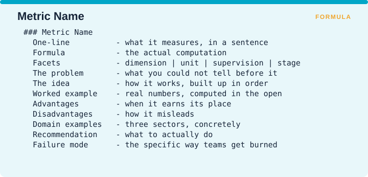
The order matters, because each section answers a question raised by the one before it. The entry opens with a one-line summary, the formula, and a facets line that tags the metric by dimension, unit, supervision and stage, all of which are explained in Chapters 1 and 2. Then comes the problem the metric was invented to solve, which describes the situation someone was stuck in and what the earlier metrics could not tell them. The idea explains how the metric works, building up one piece at a time. The worked example runs real numbers through it by hand. Advantages and disadvantages cover when it earns its place and how it misleads. Domain examples show it behaving differently in three different industries, and the recommendation tells you what to actually do.
If you are in a hurry, skip to the recommendation. If you are about to ship something, read the disadvantages first.
The book was written and released in installments, and the tables below show how the material was originally divided. Everything listed here is present in this edition.
Volume I - Classical IR
| Installment | Chapters | Contents | Status |
|---|---|---|---|
| 1 | 0-4 | Dimensions, facets, signals and metrics, set-based metrics | this file |
| 2 | 5-7 | Rank-based metrics; incomplete judgments; rank comparison and drift | planned |
| 3 | 8-10 | Diversity and novelty; fairness and exposure; online and counterfactual | planned |
| 4 | 11-12 | Significance and reporting; efficiency and cost | planned |
Volume II - RAG-Era
| Installment | Chapters | Contents |
|---|---|---|
| 5 | 13-15 | Grounding, attribution, citation quality |
| 6 | 16-18 | Alignment: utility, interference, the contribution family |
| 7 | 19-21 | Integrity, drift, staleness, robustness |
| 8 | 22-24 | Meta-evaluation, judge reliability, and deployment playbooks |
A list of ninety metrics is not a catalogue, it is a menu, and menus encourage the worst habits in evaluation. Given a menu, people pick the metrics that are cheapest to compute, report all of them, and leave the reader to assume that a long list of green numbers adds up to a healthy system.
Sorting metrics into dimensions imposes a useful discipline, because it forces you to say which single question a metric answers before you are allowed to put it on a dashboard. There are four such questions in this book, and they are worth memorising, since almost everything that follows is an attempt to answer one of them properly.
Correctness asks whether the thing is right. Alignment asks whether the parts of the system cooperate with each other. Integrity, sometimes called drift, asks whether it is still right six months from now. Efficiency asks what being right cost you.
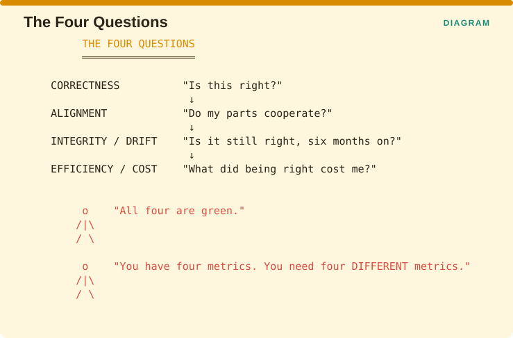
The trap the figure is pointing at is that a team can have four green metrics that are all answering the first question. Four metrics is not the same as four different metrics, and having a full dashboard is not the same as having coverage.
The question: is the retrieved or generated content actually right, relevant, grounded, and cited correctly?
This is the dimension everyone starts with, and it is the one most teams never leave. It covers precision, recall, nDCG, faithfulness, citation accuracy and hallucination rate, which is to say most of the apparatus you have already heard of.
Correctness is seductive because it can be checked one item at a time. You can take a single query, a single document, or a single sentence of a generated answer, and give a yes or no verdict on it without needing to know anything about the rest of the system. That makes it easy to instrument, easy to explain to people who are not engineers, and consequently easy to trust more than it deserves.
What a correctness score cannot see:

The figure makes the point with a single query. The system was asked something, it answered “Bern”, the truth was “Bern”, and the item is marked correct. Repeat that four thousand times and you can announce that you are 91% correct, which sounds conclusive until someone asks the follow-up questions: correct on which set of queries, using documents retrieved from where, compared against results measured when, and at what cost per answer. A correctness score is a photograph of one moment, and the other three dimensions exist because a system is a film.
The question: do retrieval and generation actually cooperate?
This dimension does not exist in classical search, because classical search had only one component to measure. It appears the moment you put a language model downstream of a search component, since you now have two parts that can each be working correctly while the system they form together still fails.
To make the rest of this section readable, two terms. The retriever is the part that searches the collection and hands back a ranked list of documents, best first. The generator is the language model that reads those documents and writes the answer. The whole point of the arrangement is that the generator should build its answer out of what the retriever found.
It very often does not. RAG-E (Randl et al., arXiv:2601.21803) measured how frequently this breaks down and found that on somewhere between 47.4% and 66.7% of queries, the generator ignored the document the retriever had ranked first. Between 48.1% and 65.9% of the time it leaned mainly on a document the retriever had judged less relevant. The paper names the two ways this goes wrong. Wasted retrieval is when the retriever found exactly the right document and the generator walked past it. Noise distraction is when the generator built its answer out of a passage the retriever had ranked near the bottom.

The figure shows what that looks like on a dashboard. The retriever hands over four documents in confidence order and its own quality score, nDCG, comes out at 0.89, which is very good. The generator picks the third document, writes its answer from that, and its faithfulness score comes out at 0.84, which is also very good, because faithfulness only asks whether the answer matches the document it was based on. Both components report excellent numbers, the system is quietly broken, and no dashboard in the building is showing it.
The sharpest published illustration of this is the Accuracy Fallacy, from RAG-X (Sivakumar, Sugumaran & Qiang, arXiv:2603.03541). On a medical question set called GuidelineQA, their best pipeline answered 71% of questions correctly. When they broke that 71% down by asking separately whether the retriever had found the right document and whether the generator had used it, the number came apart.
| Quadrant | Share | Meaning |
|---|---|---|
| Effective Use | 49.2% | Retriever found it, generator used it - genuine grounding |
| Lucky Guess | 33.9% | Retriever missed, generator was right anyway from parametric memory |
| Information Blindness | 8.5% | Retriever found it, generator ignored it |
| Correct Rejection | ~8.4% | Retriever missed, generator correctly showed low adherence |
The second row is the one that should worry you. Parametric memory means the facts the language model absorbed during its own training, so a lucky guess is an answer the model produced from memory while the retrieval step contributed nothing. Roughly a third of this pipeline’s correct answers were of that kind, which means the retrieval half of the system could have been switched off for those queries without changing the result.
Worse, the same pipeline scored 0.84 on context adherence, so it looked highly faithful while a third of its correct answers had no retrieved support at all. The paper calls that the Adherence Paradox, and the reason it happens is straightforward once you see it: adherence is only measured on the answers where there was something to adhere to.
The single most important sentence in this chapter: a faithfulness score is meaningless unless the retrieval hit rate is printed next to it. Faithfulness measures whether the answer matches the retrieved context. It says nothing about whether the retrieved context contained the answer in the first place.
The question: is the ground under the system still trustworthy as time passes?
Correctness and alignment are both measured at a single instant. Integrity asks whether that instant still describes the system next month, on a collection of documents that has since been edited, using an evaluation setup that may have changed without anyone announcing it.
Four separate things drift, and treating them as one thing is the most common mistake in this dimension.
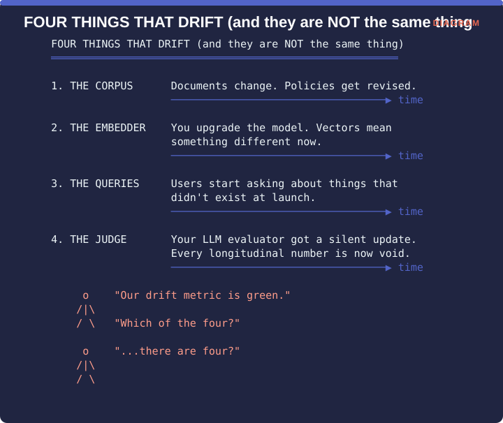
The first is the corpus, which is the collection of documents you search over. Documents get edited, policies get revised, and the correct answer to a question changes even though the question did not.
The second is the embedder, which is the model that converts text into the numeric vectors your search index is built from. When you upgrade it, the vectors mean something different than they did before, so distances computed under the old model and the new one are not comparable.
The third is the queries. Users gradually start asking about things that did not exist when you launched, so a test set assembled at launch slowly stops representing what the system is actually being asked.
The fourth is the judge, which is the language model you use to score your own outputs. This one is invisible by design. If your faithfulness numbers come from a judge model and that model is silently updated by its provider, nothing on your dashboard changes color, and every comparison you make against your historical numbers has quietly become invalid. Brehme et al. raise exactly this problem, pointing out that model advances can invalidate previous evaluation results and that nobody has yet established a way to keep an evaluation standard consistent across model versions.
For the corpus case there are hard numbers, and they are worse than most teams assume. VersionRAG (Huwiler, Stockinger & Fürst, arXiv:2510.08109) tested pipelines on questions about technical documentation where the answer depends on which version of the document you are looking at. A standard RAG pipeline answered 58% of them correctly and a graph-based one answered 64%, against 90% for a pipeline that had been told to track versions. On the harder task of noticing that a document had changed without being told, the baseline pipelines scored between 0% and 10%.
The question: what did being right cost you?
An earlier version of the catalogue behind this book filed waiting time, throughput, index size and query cost under a label meaning “not a real dimension”. That was wrong, and the field has since settled the other way, with Gan et al.’s survey treating computational efficiency as an equal axis alongside performance, factual accuracy and safety.
Efficiency has to be its own dimension because it trades directly against correctness, and you cannot reason about a trade-off when you only have a number for one side of it.
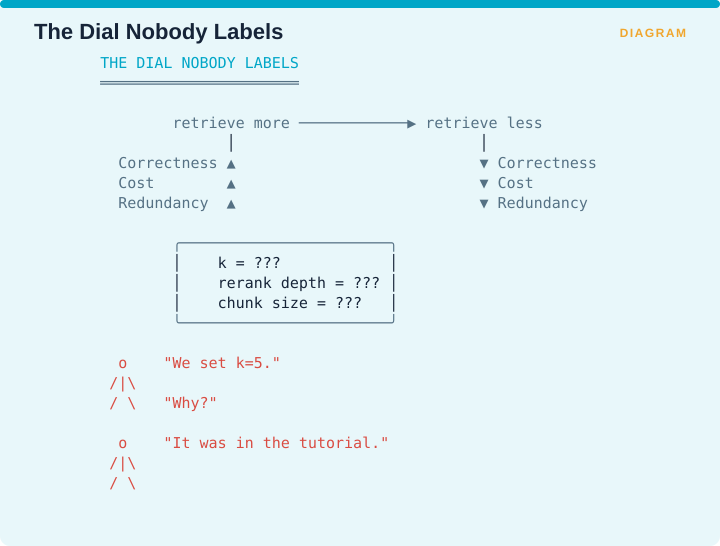
The figure draws that trade-off as a dial. Turn it toward retrieving more and correctness goes up, cost goes up, and redundancy goes up with them. Turn it toward retrieving less and all three come down together. The settings that control the dial are the number of documents you retrieve, usually written k, how deep you rerank, and how large your text chunks are, and in most systems those numbers were chosen once, early, by copying a tutorial, and never revisited.
RAG-X supplies the concrete cost of leaving the dial alone. In their pipeline, 22% of the top-ranked contexts were near-duplicates of each other, meaning the same content was purchased twice. Their Exclusive Hit Rate at rank 2, which measures how often the second document contributed something the first one had not already supplied, was 6.8%. Rank two was almost always redundant. A fifth of the context budget was being paid for and thrown away, and no correctness metric will ever surface that.
Before you add any metric to a dashboard, put it through three questions.

First, which one dimension does this metric primarily answer? Second, do you already have a metric covering that dimension? Third, if you do, does this new one measure something the existing one genuinely cannot? If you cannot answer the third question, you are adding noise to the dashboard instead of signal.
A dashboard carrying one strong metric per dimension is more informative than a dashboard carrying nine correctness metrics, because the nine will move together and their agreement will feel like confirmation when it is really one measurement wearing nine different hats. Volume II gives a concrete example of this. eRAG, Gain, DIG and ΔSePer are four separately published metrics that all estimate how much a passage contributed by running the model with and without that passage and comparing the results. They are the same measurement four times over, and reporting all four does not give you four times the evidence.
Dimensions tell you which question a metric answers. Facets tell you which other metrics it can legitimately be compared with, and this turns out to matter just as much, because the most common way to produce a meaningless number is to average two metrics that were never counting the same kind of thing. Teams do this routinely, putting a score that was computed once per sentence next to a score that was computed once per question and taking the mean of the two.
There are four facets, and every metric in this book is tagged with all four.
The unit of analysis is simply the thing you get one number for. It sounds trivial and it is the facet people get wrong most often.
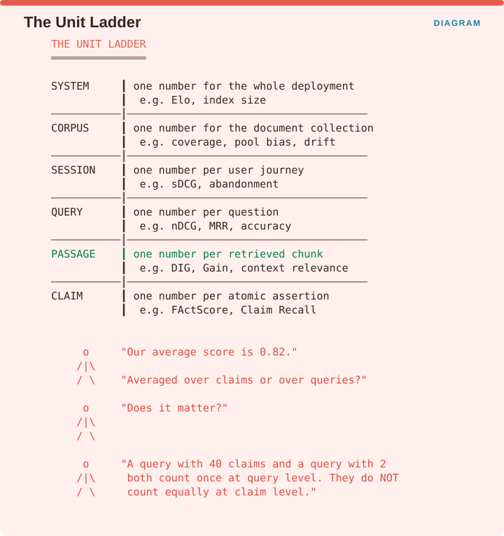
The figure arranges the possible units as a ladder, from the widest to the narrowest. At the top is the system, where you get a single number for the entire deployment, such as an Elo rating or the size of your index. Below that is the corpus, one number for the whole document collection, which is where coverage and drift measurements live. Then the session, one number per user journey, which is where you measure things like whether someone gave up. Then the query, one number per question asked, which is where nDCG, MRR and accuracy sit and where most people spend their time. Then the passage, one number for each retrieved chunk of text, which is where contribution metrics like DIG and Gain operate. At the bottom is the claim, one number for each individual factual assertion in an answer, which is where FActScore and claim recall operate.
The rule that follows from the ladder is that you aggregate within a unit and never across units. A claim-level metric and a query-level metric can sit side by side on the same dashboard quite happily, and they cannot go into the same average.
The reason is worth working through, because it is not obvious. Suppose one question produces an answer containing forty separate factual claims and another produces an answer containing two. At the query level, each of those questions contributes exactly one number to your average, so they count equally. At the claim level, the first question contributes forty numbers and the second contributes two, so the first question is twenty times more influential. Neither weighting is wrong, and they are answering different questions, so an average that mixes them is answering neither.
Supervision describes what a metric needs in order to produce a score at all, and it ranges from needing nothing but the system’s own output to needing a person.
| Value | Meaning | CI-friendly? | Cost |
|---|---|---|---|
| ref | Reference-based; needs golden answers | Yes | Label creation |
| free | Reference-free; needs no ground truth | Yes | Compute only |
| judge | LLM-as-judge scoring | Partly | API calls + drift risk |
| human | Human annotation | No | Time, expertise |
Reference-based means the metric compares your system’s output against a correct answer that somebody wrote down in advance, so you have to build and maintain a set of those answers. Reference-free means the metric can score the output using only the output and the retrieved documents, so it costs computation and nothing else. Judge means a language model reads the output and scores it, which is flexible and introduces the drift problem from §1.4. Human means a person does it.
This facet decides something very practical, which is what you are able to run automatically every time somebody changes the code.

The figure sets out the arrangement that works. Reference-based and reference-free metrics are fast and give the same answer every time, so they run on every commit. Judge metrics are slow, cost money per call, and drift over time, so they run nightly. A human-annotated anchor set is slow, expensive and authoritative, so it runs once per release. Teams that skip this arrangement and run the entire suite on every pull request usually discover the problem when the invoice arrives.
This is also why RAGAS spread so quickly through continuous integration pipelines while ALCE did not. RAGAS is reference-free and needs no golden answers, ALCE is reference-based and does. For your engineering practice, that single difference matters more than any difference in what the two of them actually measure.
Stage records where in the pipeline the metric is looking.

A query goes into the retriever, the retriever passes context to the generator, and the generator produces an answer. A metric can watch any of three places along that path. Retriever-only metrics, marked R, look at the ranked list before the generator has seen it, and this is where nDCG, MRR and recall live. Generator-only metrics, marked G, look at the answer given the context it was built from, and this is where faithfulness and Trust-Score live. End-to-end metrics, marked E2E, look only at the question and the final answer and treat everything in between as a black box, which is where plain accuracy, CUE, eRAG and WARG live.
The diagnostic value here is high. If your end-to-end number drops and you do not have an R number and a G number beside it, you have no way of telling which half of the system caused the drop, so you are reduced to guessing or to changing things until the number recovers. This is the entire argument behind RAG-X, which separates retrieval and generation scoring specifically so that an error can be attributed to one component, because an aggregate number cannot tell you whether a failure came from retrieving the wrong thing or from writing the wrong answer about the right thing.
This facet was added late, during a review of the catalogue that this book was built from, and it records two different things about a citation.
| Mark | Meaning |
|---|---|
| ESTABLISHED | Established - widely adopted, multiple independent uses |
| EMERGING | Emerging - published and awaiting broad replication |
| o | Practitioner-only - blog/industry, no peer review |
| VERIFIED | Citation verified against primary source this pass |
| OPEN | Citation asserted from memory, NOT verified |
The first three marks describe how well accepted a metric is. The last two describe whether the reference given for it in this book was actually checked against the original paper. Those are independent properties, and keeping them separate is the point of the facet.
An example from this book’s own construction shows why. The AIS metric is about as established as anything in the attribution literature, and it was nevertheless carried in the working catalogue with the venue given as TACL 2023. It was published in Computational Linguistics 49(4):777-840. The metric was established and the citation was wrong, and treating those two properties as one is exactly how an incorrect reference gets copied from paper to paper for years.

Across four verification passes over the companion catalogue, 34 identifiers were checked and one was wrong. The wrong one came from the person who was most confident about it.
The biggest structural fault in most metric catalogues is that they mix three completely different kinds of thing into a single table and treat them all as measurements.

The figure separates them into three columns. Signals are features you rank with, such as tf-idf, a BM25 score, cosine similarity, PageRank or query likelihood. Parameters are knobs you tune, such as BM25’s k1 and b, a smoothing value, the number of expansion terms, or your chunk size. Metrics are measurements you report, such as nDCG, MAP, MRR, recall@k or faithfulness. The three columns have different jobs: you rank with the first, you tune the second, and you report the third.
Once they are separated, a question that gets asked constantly stops making sense. Asking which dimension BM25’s b parameter belongs to is the same kind of question as asking what color the number seven is. The b parameter controls how much BM25 discounts long documents, and you adjust it in order to push nDCG up. nDCG belongs to a dimension. The knob you turned to improve it does not.
Mixing the three does three concrete kinds of damage.
It corrupts your dimension counts. If eleven of the things you have filed under correctness are actually ranking features, then your correctness coverage is far thinner than the table suggests, and you will not notice because the table looks full.
It invites optimizing the wrong object. Teams start reporting that their BM25 score improved, which is not a statement about quality at all. Raw retrieval scores cannot be compared across different queries, across different collections, or even across two rebuilds of the same index, because the score is only meaningful relative to the other documents it was computed alongside.
It hides genuine gaps. A catalogue padded out with signals looks comprehensive. Strip the signals out and the real measurement coverage is often thin, particularly in the alignment and integrity dimensions where the metrics are newest and fewest.
There is a single question that sorts them reliably.
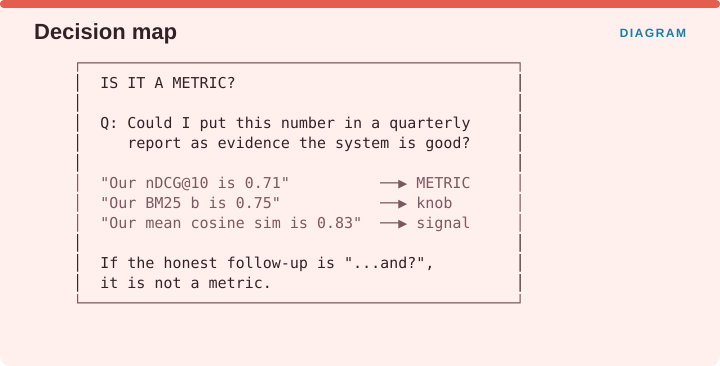
Ask whether you could put this number in a quarterly report as evidence that the system is good. Saying that your nDCG@10 is 0.71 passes, because it is a claim about quality that someone could act on. Saying that your BM25 b is 0.75 does not, because it describes a setting rather than an outcome. Saying that your mean cosine similarity is 0.83 also does not, and this is the one people get wrong. If the honest response to your number is “and?”, then what you have is not a metric.
The cosine similarity case is worth dwelling on, because it feels like a quality measurement and gets reported as one constantly. Cosine similarity measures how close the retrieved chunks are to the query in the embedding space, so a retriever that returns five nearly identical chunks, all of them irrelevant, can post a high average similarity. Similarity to the query is the signal the ranking was built from, and asking whether the ranking was any good is a separate measurement that requires someone to have judged which documents were actually relevant.
There is a way for a knob to enter the metrics column, and it is by measuring the difference the knob makes rather than reporting its setting. Relevance feedback effectiveness, meaning the change in MAP that results from applying Rocchio’s method, is a genuine alignment measurement, because it tells you something about how well two parts of the system are cooperating.
| Not a metric | Metric |
|---|---|
| Rocchio α, β, γ values | Δ MAP after relevance feedback |
| Number of expansion terms | Δ recall after query expansion |
| Chunk size | Δ Effective Use across chunk sizes |
| Embedding dimensionality | Δ nDCG across embedders |
The pattern running down the right column is the same in every row. A knob becomes a metric at the moment you stop reporting where you set it and start reporting the difference that setting made.
We start with the oldest family of metrics in the book. Everything in this chapter predates the web, most of it predates 1980, and all of it is still sitting on your dashboard.
These four metrics share an assumption that is worth naming at the outset. They treat the results your system returns as a set, meaning an unordered bag of documents where nothing is first and nothing is last, and they treat relevance as a yes or no property. Both assumptions are wrong about real systems, and Chapter 5 exists to fix them. They are still the right place to begin, because everything later is built out of these pieces.
Every metric in this chapter comes from the same small table. Suppose you have a collection of documents, somebody has asked a question, and for each document in the collection there are two independent facts: whether your system returned it, and whether it was actually relevant. That gives four possible combinations.
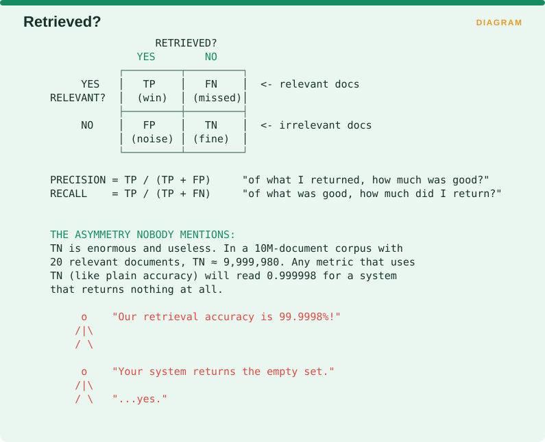
A document that is relevant and was returned is a true positive, written TP, and that is the case you want. A document that is relevant and was not returned is a false negative, written FN, which is a miss. A document that is irrelevant and was returned is a false positive, written FP, which is noise the reader has to wade through. A document that is irrelevant and was not returned is a true negative, written TN, and that is the ordinary, uninteresting case.
Precision is TP divided by (TP + FP), which asks how much of what you returned was any good. Recall is TP divided by (TP + FN), which asks how much of the good material you managed to return.
The reason retrieval uses these two rather than plain accuracy is an asymmetry in that table that almost nobody mentions. The true negative box is enormous and it is useless. In a collection of ten million documents where twenty are relevant to a given question, there are roughly 9,999,980 true negatives, so any metric that counts them will be dominated by them. A system that returns nothing at all gets every one of those true negatives right and scores about 0.999998 on plain accuracy. This is worth internalizing, because the same trap comes back in RAG: any metric whose denominator is dominated by cases that are trivially correct will look excellent and mean nothing.
One-line: Of the documents you returned, what fraction were relevant?
Formula: P = TP / (TP + FP)
Facets: Correctness | query | ref | R | ESTABLISHED VERIFIED (Manning, Raghavan & Schütze, Ch. 8)
Imagine you have run a search and you are now looking at the results. Before you can ask whether the system found everything, there is a cheaper and more immediate question: is the material in front of you worth reading? Somebody has to open each of these documents and decide whether it helps, and every document that turns out to be irrelevant is time that person spent for nothing. Precision is the measurement of that wasted time, and it is the only metric in this chapter you can compute without knowing anything about the documents you did not return.
Precision counts how many of the returned documents were relevant, and divides by how many you returned. Nothing in the calculation refers to the collection as a whole, so precision is completely silent about what you missed. A system that returns exactly one relevant document and stops there scores a perfect 1.0, even when nine hundred other relevant documents are sitting in the collection untouched.
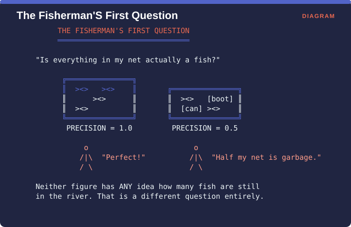
The fishing image in the figure is the clearest way to hold this. Precision asks whether everything in your net is actually a fish. A net holding four fish and nothing else scores 1.0. A net holding two fish, a boot and a tin can scores 0.5. Neither fisherman has any idea how many fish are still swimming in the river, because that is a different question entirely, and it is the question §4.2 takes up.
A legal search is run for “force majeure precedent, shipping, 2020-2024” and returns 10 documents. A paralegal reads all ten and finds that 6 of them are on point, while the other 4 turn out to be about force majeure in construction contracts, which is the right doctrine in the wrong industry.
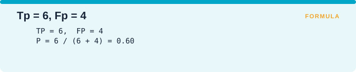
So TP is 6 and FP is 4, and precision is 6 divided by (6 + 4), which is 0.60. Read plainly, sixty percent of the paralegal’s reading time was well spent and forty percent was not.
1 - P is the fraction of the returned material a
human has to read and throw away, so a precision of 0.60 means 40% of
the reading was wasted. No other metric in this book maps onto a cost
that cleanly.Legal and e-discovery. Precision is a direct budget line here. In a document review costing roughly one to three dollars per document, a precision drop from 0.6 to 0.4 across a 50,000-document production adds a six-figure sum to the review cost, which is why legal teams often write a minimum precision into the contract.
Clinical decision support. In this setting precision is a safety measure rather than a cost measure. A clinician who receives five guideline excerpts of which two apply to the wrong patient population has been actively harmed, because the irrelevant material competes for attention during a decision made under time pressure. This is the domain where RAG-X measured 22% pairwise redundancy, meaning the same guidance came back twice while guidance that was never returned at all stayed missing.
E-commerce search. Precision maps onto whether people buy anything. A shopper searching for “waterproof hiking boots women’s 8” who gets men’s boots and non-waterproof boots in the top ten will usually give up. In this domain precision at a very shallow depth, P@3 or P@5, matters far more than P@10, for the simple reason that a phone screen shows about three results.
Never report precision on its own. Pair it with recall or with something that stands in for recall, and the standard pairing is F1, which §4.3 covers. In production the more useful arrangement is precision at a shallow depth alongside recall at a deeper one, for example P@3 reported next to Recall@50, because those two answer genuinely different operational questions: is the top of the page clean, and did we find the thing at all?
Set your depth to match your interface. If your interface shows three results, then P@10 is measuring an experience none of your users are having.
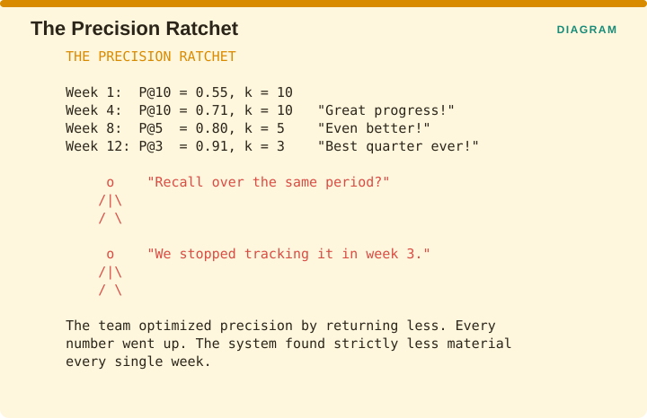
The figure traces a team over one quarter. In week 1 they report P@10 of 0.55 while returning ten results. By week 4 P@10 has reached 0.71 and everyone is pleased. In week 8 they report P@5 of 0.80, and by week 12 they report P@3 of 0.91 and call it the best quarter ever. Asked what recall did over the same period, they explain that they stopped tracking it in week 3.
Every number went up, and the system found strictly less material every single week. The team had not improved retrieval, they had improved precision by returning less, which is exactly the gaming behaviour precision invites when nothing is watching the other side.
One-line: Of all the relevant documents that exist, what fraction did you return?
Formula: R = TP / (TP + FN)
Facets: Correctness | query | ref | R | ESTABLISHED VERIFIED (Manning Ch. 8)
Precision tells you whether the material in front of you is worth reading, and it will happily report a perfect score for a system that found one document out of five hundred. If the cost of missing something is high, that is the wrong question. What you need to know is how much of the relevant material in the collection your system actually managed to surface, which means counting the documents that never appeared, and that is what recall does.
Recall counts the relevant documents you returned and divides by the total number of relevant documents that exist. It is precision’s mirror image and its natural adversary, because you can almost always buy one by giving up the other simply by adjusting how much you return.
Recall has a structural problem that precision does not, and it is severe. Computing recall requires knowing FN, the number of relevant documents you failed to return, which means knowing how many relevant documents exist in the whole collection. For any collection of realistic size, nobody knows that number. This is the hardest practical problem in retrieval evaluation and Chapter 6 is devoted entirely to working around it.

The fisherman’s second question is whether he got all the fish. If he caught 2 and 5 are still in the river, his recall is 2 divided by 7, which is 0.29. The figure then asks the question that matters: how does he know there are seven? The only honest answer is that he drained the river and counted, and you cannot drain a ten-million-document river.
Continuing the legal search from §4.1. To establish the truth, a senior associate reviews a random sample of the collection plus the results of several targeted searches, and concludes that 15 genuinely on-point documents exist. Your system returned 6 of them.
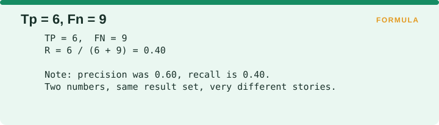
So TP is 6 and FN is 9, and recall is 6 divided by (6 + 9), which is 0.40. Note what has happened across the two sections. Precision on this same result set was 0.60 and recall is 0.40. Two numbers, one set of results, and two quite different stories about how the system is doing.
Patent prior-art search. Recall is close to the only thing that matters, because missing a single piece of prior art can invalidate a patent years later at enormous cost. Searches in this field routinely accept precision below 0.1 in exchange for recall above 0.95, since the reviewer’s time is cheap compared with the downside.
Pharmacovigilance and adverse-event detection. A missed report is a regulatory failure, so systems are tuned for very high recall and human triage absorbs the resulting flood of false positives. This is a domain where the cost dimension from Chapter 12 is being sacrificed consciously, which is the right way to sacrifice it.
Customer-support RAG. Here the calculation inverts. A support bot that retrieves 50 chunks to guarantee recall will exhaust its context budget, and Lost in the Middle (Liu et al., TACL, arXiv:2307.03172 VERIFIED) shows that material placed in the middle of a long context gets under-used anyway. Recall beyond what the generator can actually attend to is recall you paid for and did not receive.
Report recall at the depth your generator actually consumes rather than the depth your retriever returns. If you retrieve 50 documents and pass 5 into the model, then Recall@5 is your real recall, and Recall@50 is a statement about a reranker you may not even have.
In domains where misses are expensive, do not chase recall by itself. Pair it with an estimate of how much of the relevant set your labels actually cover, because an unqualified claim of “recall 0.85” measured against labels covering 10% of the collection is a claim about your labels rather than about your system.
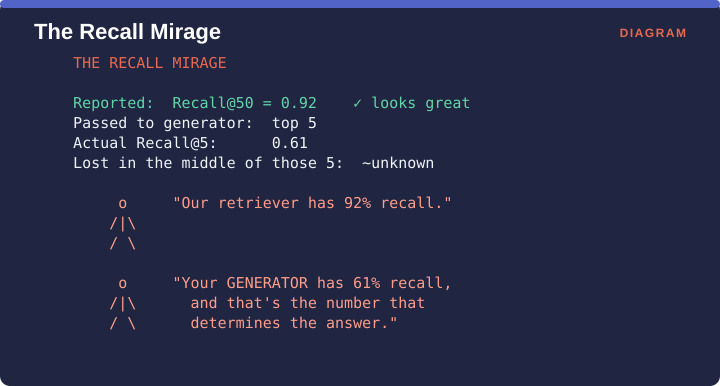
A team reports Recall@50 of 0.92, which looks excellent. The pipeline then passes only the top 5 chunks to the generator, and recall at that depth is 0.61. Of those five, some sit in the middle of the prompt where the model attends to them least, so the effective figure is lower again by an unknown amount. The retriever has 92% recall and the generator has 61% recall, and the second number is the one that determines the answer.
One-line: The harmonic mean of precision and recall, optionally weighted toward one of them.
Formula:

Facets: Correctness | query | ref | R | ESTABLISHED VERIFIED (Manning Ch. 8)
You now have two numbers that move in opposite directions, which means a team reporting its own results can always lead with whichever one looks better this month. Two numbers also make ranking systems awkward, because a system with higher precision and lower recall is neither clearly better nor clearly worse than its rival. F-measure exists to collapse the pair into a single figure that cannot be improved by sacrificing one side.
The formula in the figure has two parts. F1 is 2PR divided by (P + R), which is the harmonic mean of precision and recall. The general form, Fβ, is (1 + β²) multiplied by PR, divided by (β²P + R), where β is a number you choose. Setting β below 1 weights precision more heavily, setting β to exactly 1 gives the balanced F1, and setting β above 1 weights recall more heavily.
The choice of a harmonic mean rather than an ordinary average is the whole design, and it is what makes the metric hard to cheat.

Compare two systems. System A has precision 0.50 and recall 0.50. System B returns exactly one document, which happens to be correct, giving precision 1.00 and recall 0.01. Under an ordinary average, A scores 0.500 and B scores 0.505, so B wins, which is absurd for a system that ignores 99% of the collection. Under the harmonic mean, A scores 0.500 and B scores 0.020, because the harmonic mean is pulled hard toward whichever number is smaller. Punishing imbalance is not a side effect of the harmonic mean. It is the reason it was chosen.
Take the legal search, where precision was 0.60 and recall was 0.40.

F1 is 2 multiplied by 0.60 multiplied by 0.40, divided by (0.60 + 0.40). The top comes to 0.48 and the bottom comes to 1.00, so F1 is 0.48.
Now suppose this is e-discovery, where a missed document costs roughly four times as much as a document somebody read unnecessarily. That ratio of four to one is what β encodes, so set β to 2, since β is squared inside the formula. F2 is (1 + 4) multiplied by 0.60 multiplied by 0.40, divided by (4 × 0.60 + 0.40). The top is 5 × 0.24, which is 1.20, and the bottom is 2.4 + 0.4, which is 2.80, so F2 is 0.43.
F2 came out lower than F1, and the reason is worth stating. This system’s weakness is its recall, and F2 weights recall more heavily, so the score falls once you tell the metric which failure you actually care about. Choosing β is choosing which failure you fear.
E-discovery. F2 or even F3 is common, because the cost ratio weighs the risk of sanctions for missing a responsive document against the cost of reviewing too much. Some protocols write the value of β into the discovery agreement itself.
Spam and abuse filtering in search. F0.5 is typical here, since suppressing a legitimate result is worse from the user’s point of view than letting one piece of spam through.
RAG chunk selection. F-measure is often the wrong tool in this setting and it is worth saying so plainly. Chunk-level precision and recall assume each chunk is relevant on its own, and chunks are not independent in that way: two chunks can each be relevant while together being redundant, or each be marginal while together being sufficient to answer the question. That set-level property is exactly what SURE-RAG (arXiv:2605.03534) was built to capture, on the grounds that missing reasoning steps and unresolved conflicts between passages cannot be detected by scoring passages one at a time.
Use F1 as a summary line and never as your primary optimization target, and never print it without precision and recall beside it. Choose β deliberately by writing down the cost ratio between a false positive and a false negative in your domain, in whatever units you actually care about, whether that is dollars, minutes or risk, and then derive β from that ratio rather than accepting the default.
If you cannot state that cost ratio, the problem is not the metric. Define what the system is for, and β will follow.

Four quarters of a real-looking dashboard. In Q1, precision 0.50 and recall 0.50 give F1 of 0.50. In Q2, precision 0.60 and recall 0.42 give 0.49. In Q3, precision 0.70 and recall 0.36 give 0.48. In Q4, precision 0.80 and recall 0.31 give 0.45. Looking at F1 alone, the team concludes they have plateaued.
They have not plateaued. They have spent a year trading recall away for precision, and F1 concealed the entire trade because the two changes were pulling the number in opposite directions. A slow-moving F1 can mean nothing is changing or it can mean two large changes are cancelling out, and only precision and recall printed separately can tell you which.
One-line: Precision computed over only the top K results.
Formula:
P@K = (relevant documents in top K) / K
Facets: Correctness | query | ref | R | ESTABLISHED VERIFIED (Manning Ch. 8)
Plain precision assumes your system hands back a set, and real systems hand back a list that somebody reads from the top and stops partway down. A person looking at a phone sees about three results, and a language model receives however many chunks the prompt has room for. Scoring the whole returned list therefore measures an experience nobody is having. P@K fixes this in the crudest possible way, by ignoring everything past position K.
Count the relevant documents in the top K positions and divide by K. The cutoff is a hard one, so a document at position K counts fully and a document at position K+1 counts not at all, and K is a decision about your interface rather than a property of your system.

The figure ranks ten results with relevant documents at positions 1, 3, 5, 8 and 10. Cut at 3 and you have 2 relevant out of 3, so P@3 is 0.67. Cut at 10 and you have 5 out of 10, so P@10 is 0.50. Both are correct, they are simply about different readers, and the question of which to report is settled by asking how many results your interface shows. If the answer is three, then P@10 describes an experience no human being using your system has ever had.
A RAG pipeline retrieves 10 chunks and passes the top 3 into the prompt, because that is all the context budget allows. The relevant chunks sit at positions 1, 3, 5, 8 and 10.
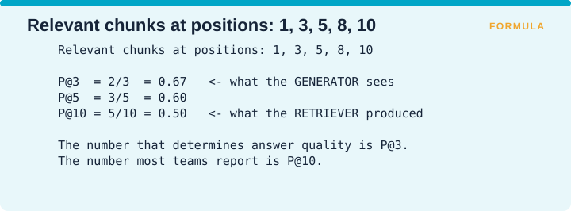
At the top 3 there are 2 relevant chunks, so P@3 is 2 divided by 3, which is 0.67, and that is what the generator actually sees. At the top 5 there are 3, so P@5 is 0.60. At the top 10 there are 5, so P@10 is 0.50, and that describes what the retriever produced.
The number that determines the quality of the final answer is P@3. The number most teams report is P@10.
Mobile e-commerce. Use P@3 or P@4, matched to what fits on the screen. Anything deeper is measuring scrolling behaviour that most sessions never produce.
RAG with a tight context budget. Set K to the number of chunks you actually inject. If you inject five chunks of 1,024 tokens each, P@5 is your operative precision. RAG-X used k=3 with 1,024-token chunks, and the fact that they stated the configuration explicitly matters as much as the particular value they chose.
Enterprise document search with expert users. A deeper K is legitimate here, because a financial analyst working through filings will genuinely scan twenty results, which makes P@20 a real measurement of their experience rather than a theoretical one.
Choose K from your interface or your context window, and then never change it quietly. If you do have to change K, report both the old and the new value for at least one release cycle, and expect the metric to move for reasons that have nothing to do with quality.
Report at least two depths: a shallow one matching what is consumed, and a deeper one matching what is retrieved. The gap between those two numbers is the headroom available to your reranker.

Trace a real pipeline. The retriever is configured to return the top 50. The reranker cuts those 50 down to 10. The prompt builder, written by somebody else eighteen months ago, injects the top 4, and nobody currently on the team remembers that. The dashboard reports P@10 of 0.70 and everyone is satisfied, while six of those ten documents never reach the model at all.
The dashboard is measuring a stage of the pipeline that does not determine the output. Trace your actual injection count before you choose K.

The four metrics in one page. Precision asks whether what you returned was good, and it is gamed by returning less. Recall asks whether you returned what was good, it is gamed by returning more, and its denominator is usually unknowable. F1 and Fβ combine the two harmonically with a priority you choose, they should never be reported without precision and recall beside them, and β should come from a real cost ratio. P@K asks whether the part the reader actually saw was good, K should come from your interface or your context budget, and it is blind to rank inside the window.
Two limitations apply to all four. Every one of them is rank-blind, and every one of them assumes relevance is a yes or no property. Chapter 5 fixes both.
There is also a warning specific to RAG. These metrics score passages independently of one another, and evidence sufficiency is a property of the set as a whole. Two individually relevant passages can be jointly redundant, and two individually weak ones can be jointly sufficient to answer the question. Nothing in this chapter can see either case, which is what SURE-RAG (arXiv:2605.03534) was built for.
Every metric in Chapter 4 was rank-blind. P@10 gave the same score whether the relevant documents sat at positions 1, 2 and 3 or at positions 8, 9 and 10, and no user experiences those two result pages as equivalent.
Rank-based metrics fix this by applying a discount, which is a weight that gets smaller the further down the list a document sits, so a document near the top contributes more to the score than the same document lower down. Everything in this chapter is an answer to a single question: what shape should that discount have?
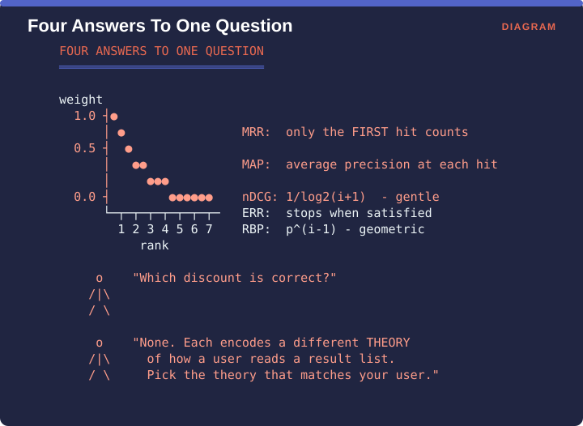
The figure plots five answers on the same axes. MRR counts only the first relevant result and gives everything after it a weight of zero. MAP averages the precision measured at each relevant position. nDCG uses 1/log2(i+1), which declines gently. ERR assumes the user stops once satisfied, so the weight depends on what came before. RBP uses p raised to the power (i-1), a geometric decline you control with a single number.
Asked which discount is correct, the honest answer is that none of them is. Each one encodes a different theory about how a person reads a result list, so the right question is which theory matches your users. Thinking of a metric as a user model rather than as a formula is the single most useful idea in classical evaluation, and it is what makes UDCG in Supplement A §A.4.1 comprehensible, since UDCG’s contribution is noticing that when the reader is a language model rather than a person, every discount in this chapter encodes the wrong theory.
One-line: The reciprocal of the position of the first relevant result, averaged over queries.
Formula:

Facets: Correctness | query | ref | R | ESTABLISHED VERIFIED (standard; popularized via TREC QA tracks)
Some questions have exactly one right answer. If somebody asks what year a treaty was signed, there is a single fact that settles it, and once they have found that fact they close the tab. For a question like that, precision and recall are answering something nobody cares about, because the number of other relevant documents is irrelevant to whether the person got what they came for. What matters is how far down the list they had to read before they found it.
Reciprocal rank is 1 divided by the position of the first relevant result, so a hit at position 1 scores 1.000, a hit at position 2 scores 0.500, a hit at position 3 scores 0.333, and a query where nothing relevant was retrieved at all scores 0. MRR is the mean of that value across all your queries.
This encodes the strictest user model in the chapter: the user reads until they find one good result, then stops and never comes back. Everything after the first relevant hit is invisible to the metric. That sounds crude, and for a large class of problems it is exactly right.

The figure compares two result lists. On the left, the first two results are irrelevant and positions 3, 4 and 5 are all relevant, giving a reciprocal rank of 1/3, which is 0.33. On the right, all five results are relevant, giving a reciprocal rank of 1/1, which is 1.00. The left list contains four relevant documents and the right contains five, and MRR pays attention to neither number. It throws away that information deliberately, on the grounds that if your user needs one answer, the other four documents are decoration.
Five queries, recording only the position of the first relevant result in each.
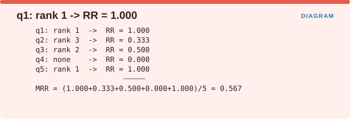
The first query found a relevant result at rank 1, giving 1.000. The second found one at rank 3, giving 0.333. The third found one at rank 2, giving 0.500. The fourth found nothing at all, giving 0.000. The fifth found one at rank 1, giving 1.000. Adding those five values gives 2.833, and dividing by 5 gives MRR = 0.567.
Notice how sharply the value falls. Rank 1 is worth 1.00, rank 2 is worth 0.50, rank 3 is worth 0.33 and rank 10 is worth 0.10. Moving a result from position 2 up to position 1 gains you 0.50, and moving one from position 10 up to position 5 gains you exactly the same amount, which tells you how heavily this metric concentrates on the very top of the list.
Question answering and factoid retrieval. This is MRR’s home. A question like “what year did X happen” has one answer, and the position of that answer is the entire story.
RAG chunk retrieval where one chunk suffices. If your questions can usually be answered from a single chunk, MRR measured on the gold chunk is an excellent and very cheap proxy. It pairs naturally with RAG-X’s Exclusive Hit Rate from Supplement B §D.4, which tells you whether the assumption of single-chunk sufficiency actually holds in your collection.
Legal or medical research. A poor fit as a primary metric, because these are recall-driven tasks where the researcher needs to assemble everything relevant. MRR will look excellent on a system that misses most of the material.
Use MRR when your task genuinely has one right answer, and say so explicitly whenever you report it. The most common misuse is reporting MRR on an aggregative task for the simple reason that it produces a flattering number.
Report the number of queries alongside the score, because the discreteness of reciprocal rank makes it noisy, and an MRR computed over thirty queries should not be compared to three decimal places against anything.
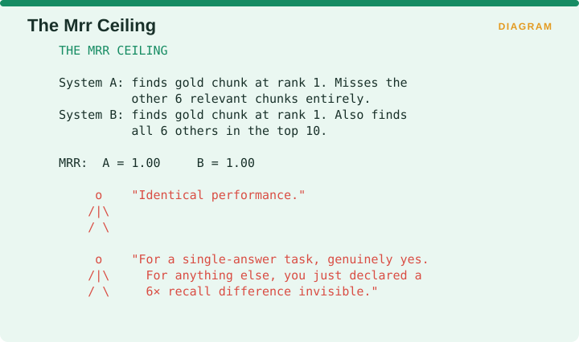
Two systems are compared. System A finds the gold chunk at rank 1 and misses the other six relevant chunks entirely. System B finds the gold chunk at rank 1 and also finds all six others inside the top ten. Both score an MRR of 1.00.
For a task with a single right answer that verdict is genuinely correct. For anything else, you have just declared a sixfold difference in recall invisible.
One-line: For each query, average the precision measured at every position where a relevant document appears; then average over queries.
Formula:

Facets: Correctness | query | ref | R | ESTABLISHED VERIFIED (Manning Ch. 8)
MRR looks only at the first hit and Chapter 4’s metrics ignore position altogether, so neither tells you whether a system that found four relevant documents put them near the top or scattered them down to rank 40. What you want is a single number that goes up when relevant documents move earlier and also goes down when relevant documents are missing entirely, without requiring you to pick an arbitrary cutoff.
The formula reads: AP equals 1/R multiplied by the sum, across every rank k, of P@k multiplied by rel(k). Taking those pieces one at a time, R is the total number of relevant documents that exist for this query, rel(k) is 1 if the document at rank k is relevant and 0 otherwise, and P@k is the precision measured over the top k results. Because rel(k) is zero everywhere except at relevant positions, the sum only picks up a value at the ranks where a relevant document actually appeared. MAP is then the mean of AP across all your queries.
Put in words, each relevant document is scored by how clean the list was up to the point where it appeared, and those scores are averaged.

The figure works a short ranking. Rank 1 is relevant, so precision there is 1/1 = 1.000. Rank 2 is not, and contributes nothing. Rank 3 is relevant, so precision there is 2/3 = 0.667. Rank 4 is not. Rank 5 is relevant, so precision there is 3/5 = 0.600. Four relevant documents exist in total and only three were retrieved, so the fourth contributes 0. Adding 1.000, 0.667, 0.600 and 0 gives 2.267, and dividing by R = 4 gives AP = 0.567.
That divisor is the crucial design decision. AP divides by the number of relevant documents that exist rather than by the number you managed to find, which means a relevant document you never retrieved drags the score down by contributing a zero to the average. That is how recall gets built into a metric that otherwise looks like a precision measure.
The user model underneath is that the user is spread evenly across all the relevant documents, equally likely to be looking for any one of them and stopping when they find the one they wanted. That reading is Robertson’s, and it is worth knowing because it is the assumption most often violated in practice.
Two systems retrieve the same four relevant documents, placed differently.

System A puts them at ranks 1, 2, 3 and 4, so the precision at each hit is 1/1, 2/2, 3/3 and 4/4, which is 1.000 four times over. Averaging those and dividing by R = 4 gives AP = 1.000.
System B puts them at ranks 1, 5, 9 and 13, so the precision at each hit is 1/1 = 1.000, 2/5 = 0.400, 3/9 = 0.333 and 4/13 = 0.308. Those sum to 2.041, and dividing by 4 gives AP = 0.510.
Both systems have identical recall, since each found all four relevant documents. One scores twice what the other does, and the entire difference is position.
Academic benchmarking on curated collections. MAP’s natural home, because TREC-style collections have reasonably complete judgments, which makes R trustworthy.
Patent and legal search. MAP balances the two things these domains care about, so it is tempting, and it should be used carefully, because R is precisely the quantity you cannot know in a large collection. Consider bpref or infAP from Chapter 6 instead.
Production web or e-commerce search. Generally the wrong choice. R is unknowable, judgments are sparse, and users never see past rank 10, so use nDCG@k or RBP.
Use MAP when your judgments are reasonably complete, which in practice means on a curated evaluation collection. On sparse or pooled judgments, MAP’s reputation for stability is an illusion produced by a denominator you guessed at.
If you do report MAP, report the mean and the spread of R across your query set as well. A MAP computed over queries whose relevant sets range from 1 document to 200 is a weighted average whose weights nobody has looked at.
One-line: Sum the graded relevance of each result, discounted logarithmically by position, then normalize by the best possible ordering.
Formula:
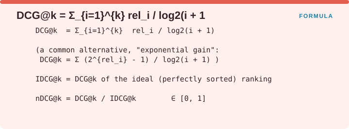
Facets: Correctness | query | ref | R | ESTABLISHED VERIFIED Source: Järvelin & Kekäläinen, Cumulated Gain-Based Evaluation of IR Techniques, ACM TOIS 20(4):422-446, 2002
Every metric so far asks a yes or no question about each result, so a document is either relevant or it is not. Imagine asking a librarian to look through ten books your search returned and mark the useful ones. If the only thing they are allowed to write is yes or no, then a book that answers your question completely and a book that mentions your topic once both get the same yes, and you have thrown away most of what the librarian actually knew. DCG was designed to keep that information.
The first change is that each result gets a score instead of a label, usually a whole number from 0 to 3, where 3 means the result is exactly what the person wanted and 0 means it is useless. These scores come from a human rater and are called graded relevance judgments.
The second change is that a result near the top counts for more than the same result further down, because people read from the top and often stop partway. So each result’s score is divided by a number that grows as you move down the list. That number is log2(i+1), where i is the position, and you do not need to work the logarithm out yourself to use it.
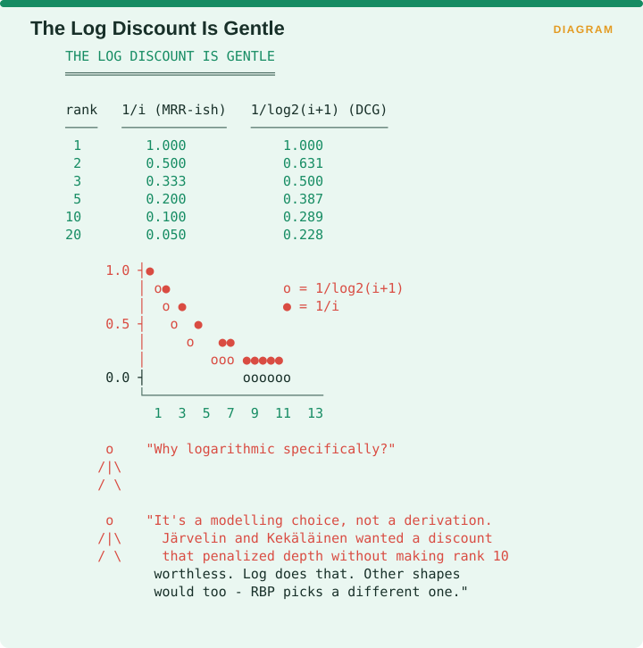
What matters is the shape it produces, which the figure sets against MRR’s much harsher 1/i. At rank 1 both give 1.000. At rank 2, 1/i gives 0.500 while the log discount gives 0.631. At rank 3 they give 0.333 and 0.500. At rank 5, 0.200 and 0.387. At rank 10, 0.100 and 0.289. At rank 20, 0.050 and 0.228. The log discount declines gradually where 1/i falls off a cliff.
Asked why a logarithm specifically, the honest answer is that it is a modelling choice rather than something derived from data. Järvelin and Kekäläinen wanted a discount that penalized depth without making rank 10 worthless, and the logarithm does that. Other shapes would too, and RBP in §5.5 picks a different one.
The formula panel also names two variations you need to know about. The gain function shown above is linear, using rel_i directly, and a common alternative called exponential gain uses (2^rel_i - 1) instead, which treats a grade of 3 as seven times a grade of 1 rather than three times. IDCG@k means the DCG of the ideal ranking, and nDCG@k is DCG@k divided by IDCG@k, which lands between 0 and 1.
Suppose five results come back and a rater scores them, in order, 3, 0, 2, 1 and 3.
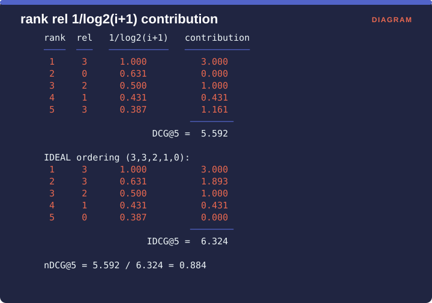
The first result sits at position 1 with a multiplier of 1.000, so it contributes 3 × 1.000 = 3.000. The second was judged useless, so it contributes nothing no matter where it sits. The third contributes 2 × 0.500 = 1.000. The fourth contributes 1 × 0.431 = 0.431. The fifth contributes 3 × 0.387 = 1.161. Adding those gives DCG@5 = 5.592.
That number is hard to interpret on its own, because a query that happens to have several highly relevant documents can reach a larger total than a query that has only one, without the system having done any better on it. So you compare the result against the best score those same five judgments could possibly have produced, which means putting them in their ideal order of 3, 3, 2, 1, 0 and running the same calculation. That gives 3.000, then 3 × 0.631 = 1.893, then 1.000, then 0.431, then 0 for the final zero-graded document, which sums to IDCG@5 = 6.324.
Dividing one by the other gives nDCG@5 = 5.592 / 6.324 = 0.884. Because every query is now scored against its own ceiling, the results can be averaged across a whole set of queries.
Web and e-commerce search. The default here for good reasons, since graded relevance matches what assessors actually perceive, meaning a perfect match, a decent match and a related item, and the log discount roughly matches how people scan a page.
Enterprise search with expert users. Works well, and deeper cutoffs such as nDCG@20 are legitimate because these users really do read that far.
RAG chunk ranking. CAUTION This is where nDCG quietly stops working. The log discount models sequential human attention, and a language model processes the whole prompt at once, so the positional theory underneath the metric does not describe the reader. Worse, as The Power of Noise and GainRAG both show, a chunk that is only tangentially relevant can actively damage the answer, and nDCG scores such a chunk as a harmless zero rather than as a negative. If you report nDCG on RAG retrieval, put a distraction-sensitive metric next to it, which Supplement A §A.4 covers.
Use nDCG@k as your primary classical ranking metric, with k matched to your interface, and always state your gain function and your k when you report it. A bare claim of “nDCG = 0.71” without those two facts is not reproducible, because the reader cannot tell which of at least four different calculations you performed.
For RAG, keep nDCG for continuity and for comparison against published work, and make the actual decision on a machine-utility measure instead.
One-line: MRR generalized to graded relevance, with the user stopping probabilistically once satisfied.
Formula:

Facets: Correctness | query | ref | R | ESTABLISHED VERIFIED Source: Chapelle, Metzler, Zhang & Grinspan, CIKM 2009, pp. 621-630, doi 10.1145/1645953.1646033
nDCG applies the same positional discount to rank 5 whether or not anything relevant appeared above it, which means it credits a relevant document at rank 5 identically in two situations that are not alike at all. If ranks 1 through 4 were useless, the reader almost certainly got as far as rank 5. If rank 1 already answered the question, the reader almost certainly never saw rank 5. A metric that cannot tell those apart is crediting documents nobody read.
ERR is a cascade model, which means it imagines the user moving down the list one position at a time, and at each document there is some probability they are satisfied and stop. The score is the expected reciprocal rank of wherever they stop.
Reading the formula, R_i is the probability that document i satisfies the user, computed from its grade as (2^g_i - 1) divided by 2^g_max, so a higher grade means a higher chance of stopping. The product term multiplies together (1 - R_i) for every document above position r, which is the probability the user was not already satisfied earlier and therefore actually reached position r. Multiply that by 1/r and sum over all positions.
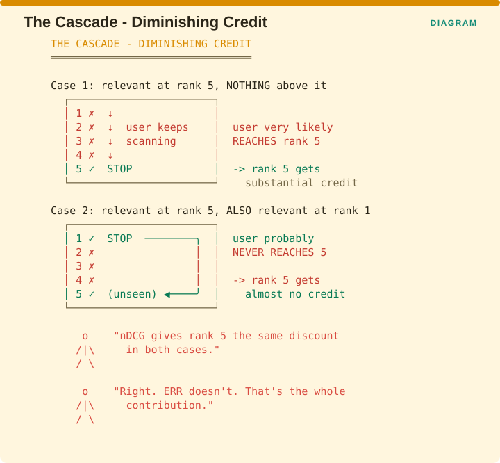
The figure sets the two cases side by side. In the first, a relevant document sits at rank 5 with nothing relevant above it, so the user very likely keeps scanning and reaches it, and rank 5 earns substantial credit. In the second, the same relevant document sits at rank 5 but rank 1 is also relevant, so the user probably stopped there and never reached position 5, which earns almost no credit at all.
nDCG gives rank 5 the same discount in both cases. ERR does not, and that is its entire contribution.
Web search with navigational intent. ERR’s design target and its best fit.
E-commerce. A strong fit, because a shopper who finds a suitable product really does stop.
RAG chunk retrieval. CAUTION Structurally wrong here, and wrong in an interesting way. ERR assumes the reader stops early, and a language model reads every chunk in the prompt. The core innovation of ERR, which is discounting deep positions because they were probably never seen, is precisely backwards for a consumer that sees everything. Its redundancy discount remains useful for RAG, which is why RAG-X’s Pairwise Redundancy exists as a separate measure.
Use ERR for human-facing search where users satisfice, meaning they stop as soon as they have something good enough. Do not use it for RAG retrieval, because its positional assumption is inverted for a language model consumer.
If you want ERR’s redundancy property in a RAG setting, take Pairwise Redundancy and Exclusive Hit Rate from Supplement B §D.4 instead.
One-line: A geometric-discount precision measure with an explicit residual quantifying how much the score could change if unjudged documents were judged.
Formula:
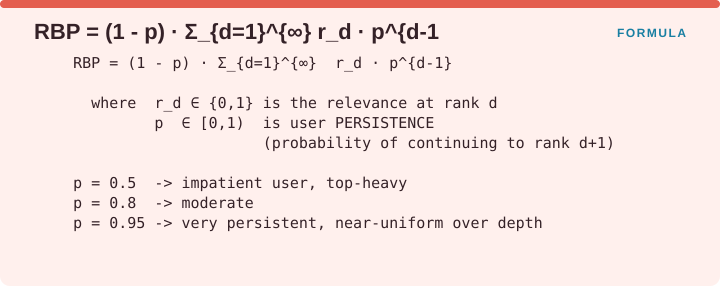
Facets: Correctness | query | ref | R | ESTABLISHED VERIFIED Source: Moffat & Zobel, Rank-Biased Precision for Measurement of Retrieval Effectiveness, ACM TOIS 27(1), Article 2, 2008 (27 pages), doi 10.1145/1416950.1416952
Every metric so far reports a single number and says nothing about how much of the ranking nobody ever looked at. In a real evaluation you have judged perhaps the top ten documents of a list of a thousand, so most of what your system returned has no label at all, and your metric silently treats all of it as irrelevant. That is a guess, and the metric does not tell you how much the answer depends on it.
Two things make RBP distinctive, and the second is what earns it a place in this book.
First, persistence is an explicit parameter. In the formula, p is the probability that the user continues from one rank to the next, r_d is 1 if the document at rank d is relevant and 0 otherwise, and the discount at depth d is p raised to the power (d-1). Setting p to 0.5 models an impatient user and makes the metric very top-heavy, p of 0.8 models a moderate one, and p of 0.95 models someone very persistent whose attention is nearly uniform with depth. Your assumption about the user is written down as a number somebody can argue with.
Second, and more importantly, RBP produces a range rather than a point. The sum in the formula runs to infinity while your judgments stop after a few dozen documents, so RBP naturally gives a lower bound, obtained by assuming every unjudged document is irrelevant, and an upper bound, obtained by assuming every one of them is relevant. The gap between those two is called the residual, and it measures how much of your evaluation is being driven by ignorance.

The figure contrasts two reports that look identical at first glance. One reads RBP = 0.42 with a residual of +0.05, so the true value lies somewhere between 0.42 and 0.47 and your judgments are adequate to support a comparison. The other reads RBP = 0.42 with a residual of +0.31, so the true value lies anywhere between 0.42 and 0.73, and the system you just declared worse might in fact be better. Both systems scored 0.42, and only one of those measurements means anything.
No other metric in this chapter tells you this. nDCG and MAP report a point estimate and stay silent about how much of the ranking was never judged.
Take p = 0.8, so (1 - p) = 0.2.
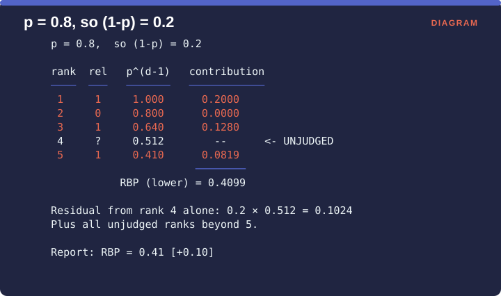
Rank 1 is relevant with a discount of p^0 = 1.000, contributing 0.2 × 1 × 1.000 = 0.2000. Rank 2 is not relevant, contributing 0. Rank 3 is relevant with a discount of p^2 = 0.640, contributing 0.2 × 0.640 = 0.1280. Rank 4 was never judged, so it contributes nothing to the lower bound. Rank 5 is relevant with a discount of p^4 = 0.410, contributing 0.0819. Those sum to a lower bound of 0.4099.
Now the residual. If rank 4 turned out to be relevant it would add 0.2 × 0.512 = 0.1024, and every unjudged rank past 5 would add more on top of that. Reporting the pair together gives RBP = 0.41 [+0.10], which says the score is 0.41 and could be as high as about 0.51 once the unjudged documents are accounted for.
Any evaluation with pooled or sparse judgments. This is RBP’s reason for existing, and it covers most real production evaluation.
Legal and patent search. Judgments are always incomplete at this scale, and the residual tells you whether your comparison is supportable, which is a defensible position to hold in a discovery dispute.
RAG retrieval evaluation. Underused and very well suited, because RAG judgments are almost always sparse, meaning you labelled the gold chunk and nothing else. A point-estimate nDCG in that setting is overconfident, and RBP’s residual is arguably the most honest classical metric available for RAG retrieval.
Adopt RBP alongside nDCG, specifically for the residual, and report
it in the paired form RBP@p=0.8 = 0.41 [+0.10]. That
bracketed number will do more to improve your evaluation hygiene than
any other single change in this chapter, because it makes the cost of
sparse judgments visible to everyone looking at the dashboard.
Set p from observed user behaviour if you have it, where mean scroll depth is a reasonable proxy, and then hold it fixed.
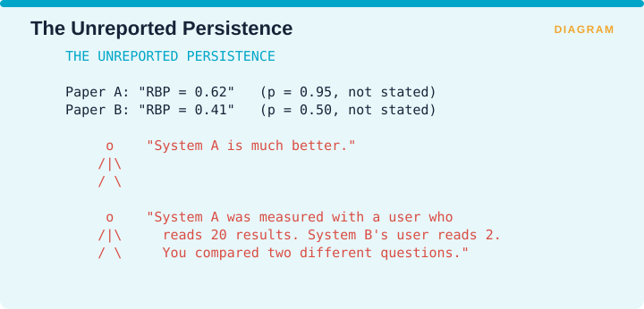
Paper A reports RBP = 0.62 without stating that it used p = 0.95. Paper B reports RBP = 0.41 without stating that it used p = 0.50. A reader concludes that system A is much better.
System A was measured against a user who reads twenty results and system B against a user who reads two, so the two numbers are answers to different questions and comparing them means nothing.

The five metrics, each with the user model it assumes and the condition under which you should reach for it. MRR assumes a user who stops at the first hit and never returns, and you use it when one right answer exists. MAP assumes a user equally interested in every relevant document, and you use it when your judgments are complete. nDCG assumes attention declining logarithmically over graded relevance, and it is the default for human-facing search. ERR assumes a user who satisfices and stops probabilistically, treating redundancy as waste, and it suits navigational web search and e-commerce. RBP assumes a user who continues with probability p, and it reports its own uncertainty, which makes it the right choice when judgments are sparse, meaning most real evaluations.
There is a caution that applies to all five at once. Every discount above models a human scanning a list from top to bottom, and a language model reads the whole prompt at the same time, so for RAG all five encode the wrong reader. Keep whichever of these you report for comparability, and put a distraction-sensitive metric alongside it. UDCG in Supplement A §A.4.1 is the direct treatment of this problem.
MAP needs R, the total number of relevant documents. nDCG needs the ideal ranking, which requires the same information. Both of them therefore require you to know every relevant document in the collection, and for a collection of any real size nobody knows that.
The standard workaround is called pooling. You run several different systems over the same set of queries, take the top d results from each of them, combine those into one pool, and pay humans to judge only the documents in that pool. Everything outside the pool is then treated as irrelevant.
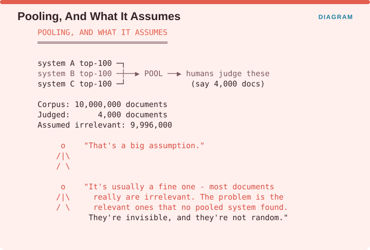
The figure puts numbers on the assumption. Three systems each contribute their top 100 results, producing a pool of perhaps 4,000 documents that people actually read. The collection holds ten million documents, so 9,996,000 of them are being assumed irrelevant without anybody having looked.
That assumption is usually fine, because the overwhelming majority of documents in a large collection really are irrelevant to any given query. The problem is the relevant documents that none of the pooled systems retrieved, because those are invisible to the evaluation and they are not randomly distributed.
The resulting bias is systematic. A new system that finds relevant documents no pooled system found receives no credit for them, since they were never judged and are therefore counted as irrelevant. Pooling structurally favours systems that resemble the ones that built the pool. Zobel raised this in 1998 and it has never gone away.
One-line: Rank documents by how many judged irrelevant documents outrank each judged relevant one - ignoring unjudged documents entirely.
Formula:
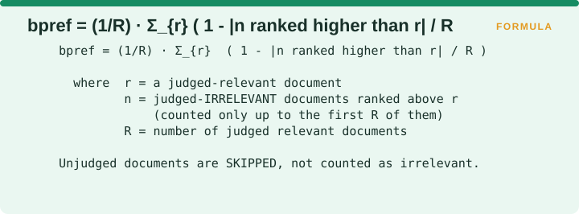
Facets: Correctness | query | ref | R | ESTABLISHED VERIFIED Source: Buckley & Voorhees, Retrieval Evaluation with Incomplete Information, SIGIR 2004, pp. 25-32
When MAP encounters a document nobody judged, it counts that document as irrelevant, which means your system is penalized for retrieving something an assessor simply never got to. That penalty falls hardest on exactly the systems you most want to evaluate, namely new ones that retrieve material the old pool never contained. What you want is a metric that declines to guess.
The insight is almost embarrassingly simple. If you do not know whether a document is relevant, do not pretend it is irrelevant. Skip it.
Reading the formula, r is a judged-relevant document, n counts the judged-irrelevant documents ranked above it, R is the number of judged relevant documents, and the count of n is capped at the first R irrelevant documents so that a very long tail cannot dominate. The question the metric asks, in plain terms, is how often a document known to be bad outranked a document known to be good. Unjudged documents take no part in the calculation at all.
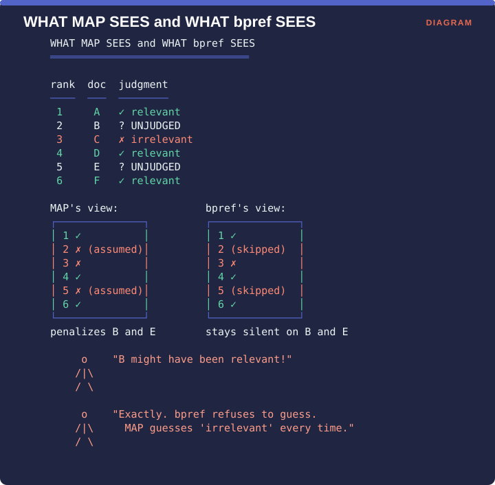
The figure runs one ranking through both metrics. Six documents come back: rank 1 is judged relevant, rank 2 is unjudged, rank 3 is judged irrelevant, rank 4 is judged relevant, rank 5 is unjudged, and rank 6 is judged relevant. MAP fills in the gaps by assuming ranks 2 and 5 are irrelevant, so the system is penalized for both. bpref skips them, so they affect nothing.
The unjudged document at rank 2 might well have been relevant. bpref refuses to guess, and MAP guesses “irrelevant” every single time.
trec_eval and the standard tooling.Evaluating a new retriever against an old test collection. The canonical use. If your new dense retriever surfaces documents that the BM25-era pool never contained, MAP will punish you for finding them and bpref will not.
RAG with gold-chunk-only labels. Extremely relevant here and almost never used. If you labelled one gold chunk per question and nothing else, then every other chunk your system retrieves is unjudged, and MAP, nDCG and precision are all quietly treating those chunks as irrelevant. bpref is the honest choice in that setting.
Consumer search with click-derived labels. Clicks give you sparse positive evidence and almost no trustworthy negative evidence, and bpref’s asymmetry fits that shape of data.
Use bpref whenever your judgments came from a pool you did not build yourself, or from labels covering only a small fraction of what your system retrieves, and report it alongside MAP rather than instead of it.
The gap between MAP and bpref on the same runs is a direct estimate of how much your incomplete judgments are distorting your evaluation. That comparison is cheap, since both numbers come out of the same tooling in a single command, and it is one of the highest-value diagnostics in this volume.
One-line: Average precision estimated statistically from a random sample of judgments, with confidence properties.
Facets: Correctness | query | ref | R | ESTABLISHED VERIFIED Source: Yilmaz & Aslam, Estimating Average Precision with Incomplete and Imperfect Judgments, CIKM 2006, Arlington VA, pp. 102-111. Extended: Estimating average precision when judgments are incomplete, Knowledge and Information Systems 16(2):173-211, 2008
bpref solves the incomplete-judgment problem by changing what is being measured, which means its numbers are no longer comparable with the AP numbers everyone else reports. If you are building a judgment set yourself and can control how documents are chosen for judging, there is a second route: keep AP exactly as it is and estimate its true value from a sample.
Where bpref changes the definition of the metric to cope with missing judgments, infAP keeps AP’s definition and changes how you arrive at the number. If the documents you judged are a random sample of the pool, then standard statistics apply, and AP can be estimated with known properties including a confidence interval. The result is an unbiased estimate of the AP you would have measured if you had judged everything.
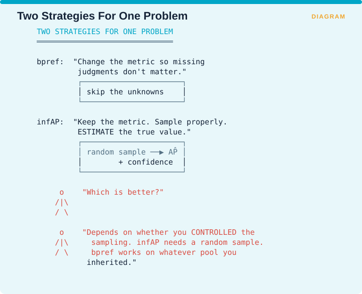
The figure states the two strategies side by side. bpref says to change the metric so that missing judgments stop mattering, and skips the unknowns. infAP says to keep the metric, sample properly, and estimate the true value with a confidence interval attached.
Which one is better depends entirely on whether you controlled the sampling, and that is usually decided for you. If you are evaluating on somebody else’s collection, you did not choose how the documents were selected for judging, so use bpref. If you are building your own judgment set from scratch, sample randomly and use infAP.
If you are building an evaluation set, sample randomly and report infAP with confidence intervals. If you inherited one, use bpref, because infAP’s estimator properties depend on a random judgment set that you do not have.
Two evaluation controls sit underneath everything above and decide whether the metrics mean anything at all.
Source: Zobel, How Reliable Are the Results of Large-Scale Information Retrieval Experiments?, SIGIR 1998, pp. 307-314 VERIFIED. See also Webber, Moffat & Zobel, The Effect of Pooling and Evaluation Depth on Metric Stability, EVIA 2010, pp. 7-15 VERIFIED.

The figure draws the collection as a large box with the pool as a small box inside it. Inside the pool, documents carry judgments. Outside the pool, scattered through the rest of the collection, sit relevant documents that no pooled system ever retrieved.
bpref cannot see them. infAP cannot see them. Nothing that operates inside the pool can see them, because they were never candidates for judgment in the first place.
Asked how you know they exist, the honest answer is that you do not, and that is exactly the point. You can only bound the problem, either by pooling more systems so that the pool becomes harder to miss things from, or by reporting RBP’s residual so that the uncertainty appears on the face of the number.
Human relevance judgments disagree with each other, and the disagreement is substantial. Voorhees’ work on variation between assessors established something reassuring alongside something uncomfortable: the ranking of systems is surprisingly stable when you swap assessors, while the absolute scores move around considerably.
The practical consequence is that you should trust your relative comparisons more than your absolute numbers. If one system scores nDCG 0.71 and another scores 0.68 on the same judgments, that comparison is meaningful. Reporting “our nDCG is 0.71” as a standalone claim about quality is far weaker than it appears, because a different set of assessors would have produced a different number for the same system.
Report Cohen’s κ when you have two assessors and Krippendorff’s α when you have more than two. That distinction returns in Volume II, where the assessors are language models rather than people.
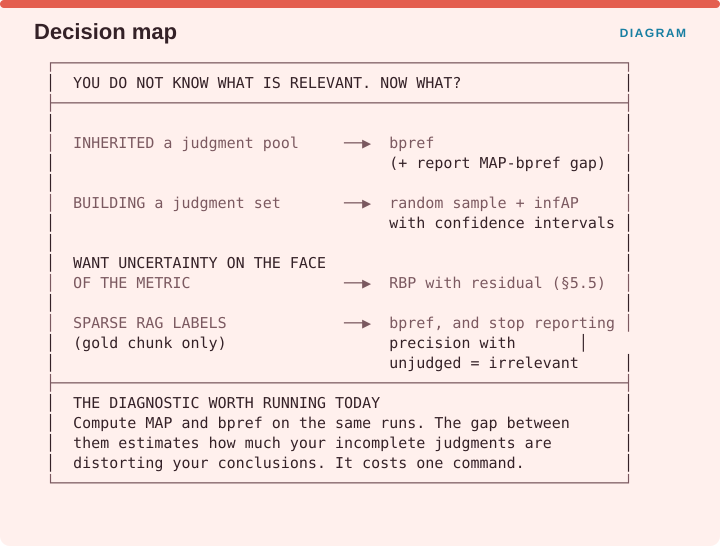
The decision comes down to how your judgments were produced. If you inherited a judgment pool, use bpref and report the gap between MAP and bpref. If you are building a judgment set, sample randomly and use infAP with confidence intervals. If you want the uncertainty visible on the face of the metric itself, use RBP with its residual from §5.5. If you have sparse RAG labels covering only the gold chunk, use bpref and stop reporting precision computed as though every unjudged chunk were irrelevant.
The diagnostic worth running today is the first one. Compute MAP and bpref over the same runs, and the gap between them estimates how much your incomplete judgments are distorting your conclusions. It costs one command.
Chapters 4 through 6 all asked whether a ranking was good, and answering that question required somebody to have judged which documents were relevant. This chapter asks a different question entirely: are these two rankings the same? Answering that needs no relevance judgments at all, because you are comparing two lists against each other rather than against the truth.
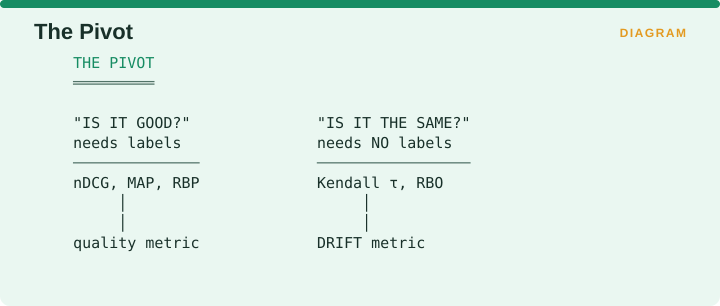
The figure names the pivot. Asking whether a ranking is good needs labels, and that is what nDCG, MAP and RBP do, which makes them quality metrics. Asking whether a ranking is the same needs no labels, and that is what Kendall’s τ and RBO do, which makes them drift metrics.
That property is why this chapter is the bridge into drift measurement. You cannot ask whether your retrieval is still good without labels somebody has to pay for. You can ask whether your retrieval is still doing what it did in January using nothing but two result lists you already have.
One-line: Classical rank-correlation coefficients measuring how similarly two rankings order the same items.
Formula (Kendall’s τ):
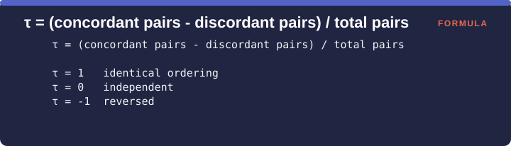
Facets: Integrity/Drift | query | free | R | ESTABLISHED VERIFIED (standard statistics)
Before anything specific to retrieval, there is a general statistical question: given two orderings of the same things, how similar are they? Kendall’s τ and Spearman’s ρ are the standard answers, they have been standard for most of a century, and they are implemented everywhere.
Take every possible pair of items and ask whether the two rankings agree about which one comes first. A pair the two rankings order the same way is concordant, and a pair they order differently is discordant. Kendall’s τ is the number of concordant pairs minus the number of discordant pairs, divided by the total number of pairs, so it reads as the extent to which the two lists agree about pairwise ordering. A τ of 1 means identical ordering, 0 means the two rankings are independent of each other, and -1 means one is the exact reverse of the other.

The figure shows how the uniform weighting misleads. A team reports τ of 0.94 and calls the system very stable. Asked where the disagreements were, they answer that ranks 1 and 2 swapped. The top result changed, which is the single change users are most likely to notice, and the metric called the system 94% stable, because τ has no way of knowing that ranks 1 and 2 matter more than any other pair.
Use τ for meta-evaluation, where you are comparing how two metrics rank a set of systems and uniform weighting is appropriate because every system in the comparison matters equally. Do not use it for retrieval drift, where the top of the list dominates what anyone experiences. Use RBO for that.
There is a specialized alternative worth knowing about. Yilmaz, Aslam and Robertson’s AP-correlation (SIGIR 2008, pp. 587-594 VERIFIED) is a top-weighted rank correlation built for information retrieval precisely because τ is not.
One-line: A top-weighted similarity measure for ranked lists that may be of different lengths and may not share the same items.
Formula:
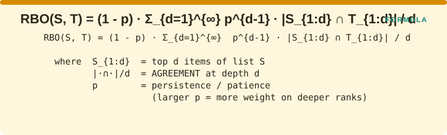
Facets: Integrity/Drift | query | free | R | ESTABLISHED VERIFIED Source: Webber, Moffat & Zobel, A Similarity Measure for Indefinite Rankings, ACM TOIS 28(4):20:1-20:38, 2010
Two real retrieval result lists break every assumption Kendall’s τ makes. They are top-weighted, because nobody cares about position 400. They are usually different lengths. And they routinely contain different documents, so there is no shared item set to build pairs from. A metric for comparing retrieval results has to handle all three, and τ handles none of them.
RBO was built for what its authors call indefinite rankings, meaning lists that are top-weighted, possibly of different lengths, and non-conjoint, which is the technical way of saying they need not contain the same items. That is an exact description of two retrieval result lists.
Reading the formula, S and T are the two lists, S_{1:d} means the top d items of list S, and the intersection of the two top-d sets divided by d is the agreement at depth d. The parameter p is persistence again, exactly as in RBP, where a larger p puts more weight on deeper ranks. So mechanically you compute the overlap at each depth, divide by the depth to turn it into an agreement fraction, and take a geometrically weighted average of those agreements across all depths.
The family resemblance to RBP in §5.5 is not a coincidence, since these are the same authors using the same persistence parameter and the same geometric weighting. RBO is RBP’s idea applied to comparison instead of to quality.

The figure works an example. List S from January holds doc-A, doc-B, doc-C, doc-D and doc-E in that order, and list T from June holds doc-A, doc-C, doc-B, doc-E and doc-F. At depth 1 both lists contain doc-A, so agreement is 1/1 = 1.00. At depth 2 the lists hold {A, B} and {A, C}, which share only doc-A, so agreement is 1/2 = 0.50. At depth 3 both contain A, B and C in some order, so agreement returns to 3/3 = 1.00. At depth 4 they share three of four items, giving 0.75, and at depth 5 they share four of five, giving 0.80. RBO is the geometrically weighted average of that sequence, and with p set to 0.9 the shallow depths dominate the result.
The figure also explains why this beats the obvious alternative. Jaccard similarity computes the size of the intersection divided by the size of the union at one fixed depth, which makes it blind to order and dependent on a cutoff you have to choose. RBO looks at every depth, weights them, and is sensitive to order. Consider two indexes returning the same ten documents in exactly reversed order: Jaccard reports 1.00 and declares no change, while RBO reports roughly 0.5 and correctly raises the alarm.
Index drift monitoring. The headline use and the recommendation Supplement A made. Freeze 500 queries along with their top-k results, recompute monthly, and report RBO against the baseline. A falling RBO with no deployment to explain it means your corpus moved underneath you.
Embedder migration. CAUTION Read the correction in the Supplement A Addendum before you act on this one. Caspari et al. found that at the small values of k that RAG actually uses, different embedders retrieve almost completely distinct chunks on larger datasets. So a low RBO between two different models is the normal state rather than an alarm. The comparison that carries information is the same model over time, where RBO should sit near 1.0 unless something genuinely changed.
A/B comparison of rerankers. RBO between the list before reranking and the list after it quantifies how much work the reranker is actually doing, and a value near 1.0 means you deployed something that does nothing.
RBO is the single most useful metric in this chapter for RAG practitioners, and it is almost never used in the field.
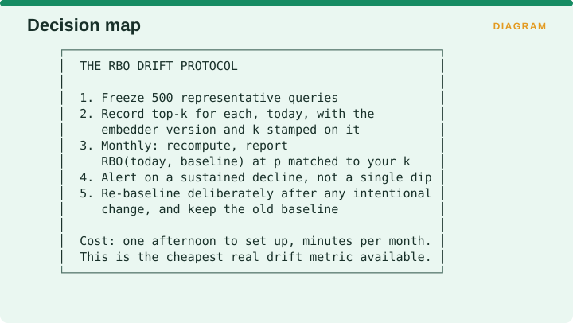
The protocol in the figure is five steps. Freeze 500 representative queries. Record the top-k for each of them today, with the embedder version and the value of k stamped on the record. Every month, recompute and report RBO against that baseline, with p matched to your k. Alert on a sustained decline rather than on a single dip. Re-baseline deliberately after any intentional change, and keep the old baseline rather than discarding it.
Setting this up costs about an afternoon and running it costs minutes per month, which makes it the cheapest real drift metric available to you.
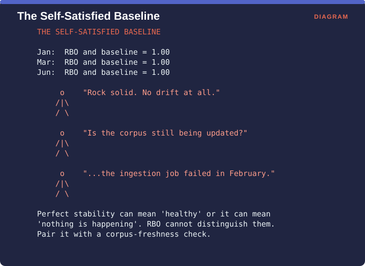
A team reports RBO against baseline of 1.00 in January, 1.00 in March and 1.00 in June, and concludes the system is rock solid with no drift at all. Asked whether the corpus is still being updated, they discover the ingestion job failed in February.
Perfect stability can mean the system is healthy or it can mean nothing is happening, and RBO cannot tell those apart. Pair it with a check that the corpus is still receiving fresh content.

Kendall’s τ and Spearman’s ρ use uniform weighting and require conjoint lists, which makes them right for meta-evaluation, meaning the question of whether two metrics rank systems the same way, and wrong for retrieval drift. AP-correlation from Yilmaz, Aslam and Robertson is the top-weighted alternative to τ, built specifically for information retrieval. RBO is top-weighted, works on non-conjoint lists of different lengths, carries a residual and needs no labels, which makes it the right tool for drift, embedder migration and measuring reranker impact, and it is the metric this book recommends most strongly relative to how rarely anyone uses it.
There is a connection worth carrying forward. RBP from §5.5 and RBO from §7.2 are the same underlying idea, namely geometric persistence weighting with an explicit residual, applied once to quality and once to comparison, by the same authors. If you adopt one of them, adopt both, because the mental model transfers across for free.
Every metric so far treats documents as independently relevant, which means the relevance of the document at rank 3 does not depend in any way on what the documents at ranks 1 and 2 already said. That assumption is false, and it is false in two distinct ways that the literature is careful to keep apart.
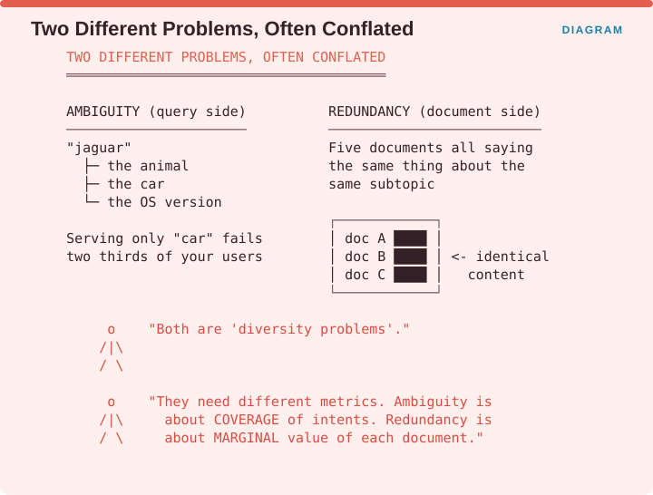
The first problem lives on the query side and is called ambiguity. Somebody types “jaguar” and could mean the animal, the car, or the operating system version, so a system that serves only the car has failed two thirds of the people who typed that word.
The second problem lives on the document side and is called redundancy. Five documents come back all saying the same thing about the same subtopic, so four of the five slots did no work.
Both get called diversity problems, and they need different metrics, because ambiguity is about coverage of the possible intents while redundancy is about the marginal value each additional document adds.
The framing that brought them together comes from Clarke et al., whose stated motivation was that ambiguity in queries and redundancy in retrieved documents are both poorly reflected by existing evaluation measures, and who then built a framework that systematically rewards novelty and diversity.
In classical search, a redundant document costs the user a slot they can skip in half a second. In RAG, a redundant chunk costs you context budget that you paid for and cannot reuse, because the space that chunk occupies in the prompt is gone whether or not it contributed anything.
RAG-X measured this directly, finding 22.0% pairwise redundancy between top contexts and an Exclusive Hit Rate at rank 2 of only 6.8%, which Supplement B §D.4 covers in detail. Their prescribed remedy, which is Maximum Marginal Relevance for diversity together with diverse reranking, is the algorithmic counterpart of what this chapter measures.
If you work on RAG and have been skipping diversity metrics as an academic nicety, this is the chapter that should change your mind.
One-line: What fraction of a query’s distinct subtopics is covered by the top k results?
Formula:

Facets: Correctness | query | ref | R | ESTABLISHED VERIFIED Source: Zhai, Cohen & Lafferty, Beyond Independent Relevance: Methods and Evaluation Metrics for Subtopic Retrieval, SIGIR 2003, pp. 10-17
When a query has several possible meanings, a ranking metric that assumes a single intent will happily give top marks to a system that serves one meaning perfectly and ignores the rest. You need a way to ask whether the result list acknowledged that the question had more than one reading.
Somebody annotates each query with the subtopics it can be read as covering. S-recall@k is then the number of distinct subtopics covered by the top k documents, divided by the total number of subtopics that exist for that query. It is a coverage question rather than a relevance question.
The founding paper’s title says exactly what the move was, which was to go beyond independent relevance. The same paper proposed a companion measure sometimes written S-RR, which is the reciprocal of the rank at which complete coverage of all aspects is finally achieved.
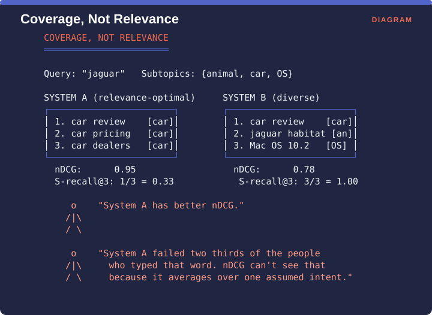
The figure runs the jaguar query with three subtopics, being the animal, the car and the operating system. System A is relevance-optimal and returns a car review, car pricing and car dealers, which scores nDCG 0.95 and S-recall@3 of 1/3 = 0.33. System B returns a car review, an article on jaguar habitat and a page about Mac OS 10.2, which scores nDCG 0.78 and S-recall@3 of 3/3 = 1.00.
System A has the better nDCG and failed two thirds of the people who typed that word. nDCG cannot see the failure, because it averages over a single assumed intent.
Ambiguous consumer search. Its home. Short queries with several possible readings are the normal case in web and e-commerce search.
RAG over heterogeneous corpora. Underused and genuinely valuable. If a user asks what the refund policy is and your collection contains regional variants, S-recall over regions tells you whether the system retrieved one region’s policy while presenting it as the answer, or acknowledged that several exist.
Multi-hop RAG. CAUTION Be careful here, because this is a different problem that looks similar. Multi-hop questions need several passages that jointly support one answer, whereas diversity needs passages covering distinct answers. S-recall measures the second, so conflating them will lead you to optimize for spread when what you needed was conjunction. SURE-RAG’s set-sufficiency framing in Supplement B §C.9 is the multi-hop tool.
Use S-recall as a cheap first diagnostic when you suspect your queries carry intent ambiguity. It is the easiest metric in this chapter to instrument, and it will tell you whether you have a problem worth spending α-nDCG’s annotation budget on.
Do not use it as an optimization target, because its rank-blindness means a system can satisfy it by burying the diverse results deep where nobody sees them.
One-line: nDCG where a document’s gain is discounted by how many previously-seen documents already covered the same subtopic.
Formula (sketch):
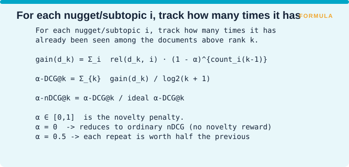
Facets: Correctness | query | ref | R | ESTABLISHED VERIFIED Source: Clarke, Kolla, Cormack, Vechtomova, Ashkan, Büttcher & MacKinnon, Novelty and Diversity in Information Retrieval Evaluation, SIGIR 2008, pp. 659-666, doi 10.1145/1390334.1390446
S-recall knows about coverage and nothing about position, while nDCG knows about position and nothing about coverage. What you want is one number that rewards putting relevant documents early and also stops rewarding the fourth document that repeats what the first three said.
α-nDCG keeps Chapter 5’s positional discount and multiplies it by a second, independent discount for redundancy. For each subtopic, you track how many times it has already been covered by the documents above the current rank, and a document’s gain is reduced by (1 - α) raised to that count. A document covering a completely fresh subtopic keeps its full gain, while the fifth document covering a subtopic already seen four times keeps (1 - α) to the fourth power of it.
The parameter α is the novelty penalty and it runs from 0 to 1. At α = 0 the whole thing reduces to ordinary nDCG with no reward for novelty at all, and at α = 0.5 each repeat is worth half of the one before it.

The figure works four ranks with α = 0.5. Rank 1 covers subtopic A, which has been seen zero times, so its positional weight of 1.000 is multiplied by a novelty weight of 1.000, giving a gain of 1.000. Rank 2 covers subtopic A again, so its positional weight of 0.631 is multiplied by a novelty weight of 0.500, giving 0.316, which is half what it would otherwise have earned. Rank 3 covers A a third time, so 0.500 multiplied by 0.250 gives 0.125. Rank 4 covers a fresh subtopic B, so its positional weight of 0.431 is multiplied by a full novelty weight of 1.000, giving 0.431.
Rank 4 therefore scores higher than rank 3, despite sitting lower in the list, because it said something new. That inversion is the metric, and it is what makes diversity worth optimizing for.
The authors’ argument for why this matters is worth carrying forward, because it recurs throughout this book. Evaluation measures act as objective functions that retrieval systems get optimized against, so a measure that ignores redundancy will reliably produce systems that generate redundancy. That argument applies with full force to RAG rerankers.
Web search over ambiguous queries. The design target.
News and media recommendation. Redundancy is the dominant failure here, with ten outlets covering one story, so α-nDCG is the right measure and it is rarely used.
RAG context assembly. CAUTION This is the strongest under-exploited fit in the book. Your chunks carry overlapping content, your context budget is finite, and RAG-X measured 22% redundancy in a production-grade pipeline. α-nDCG computed over chunk-level subtopics is a principled measure of context efficiency, the method already exists, and the annotation cost is the only thing standing in the way.
If you have nugget-level annotations or can afford to build them, α-nDCG at α = 0.5 reported alongside plain nDCG is the most informative diversity pair available. The gap between the two numbers is your redundancy cost, expressed in the same units as your primary quality metric, which makes it directly arguable in a planning meeting.
For RAG specifically, the cheap approximation is RAG-X’s Pairwise Redundancy, which needs no annotation at all and captures the same signal at lower fidelity.
One-line: ERR computed per intent, then averaged with intent probabilities as weights.
Formula (sketch):
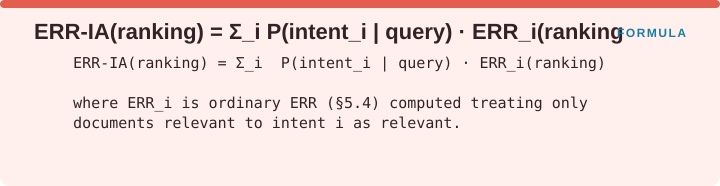
Facets: Correctness | query | ref | R | ESTABLISHED VERIFIED Source: Chapelle, Ji, Liao, Velipasaoglu, Lai & Wu, Intent-Based Diversification of Web Search Results: Metrics and Algorithms, Information Retrieval 14(6):572-592, 2011
S-recall and α-nDCG both treat every subtopic as equally important, so a system that covers a meaning nobody searches for is credited exactly as much as one that covers the meaning eighty percent of your users wanted. If you know how your traffic splits across intents, throwing that knowledge away makes the metric less accurate than it needs to be.
The intent-aware construction, marked by the “-IA” suffix, is general. Take any metric, compute it once per intent while treating only the documents relevant to that intent as relevant, and then average the results weighted by how likely each intent is. That gives you DCG-IA, MAP-IA and ERR-IA.
Two things make ERR-IA in particular worth knowing. The intent probabilities are explicit weights, so if 80% of the people searching “jaguar” want the car, that intent enters the average with a weight of 0.8. And ERR-IA is a generalization of α-nDCG, which the authors show directly while arguing that it is the preferred metric among the proposals including DCG-IA and MAP-IA. It was used to evaluate the diversity task in the TREC 2010 Web track.
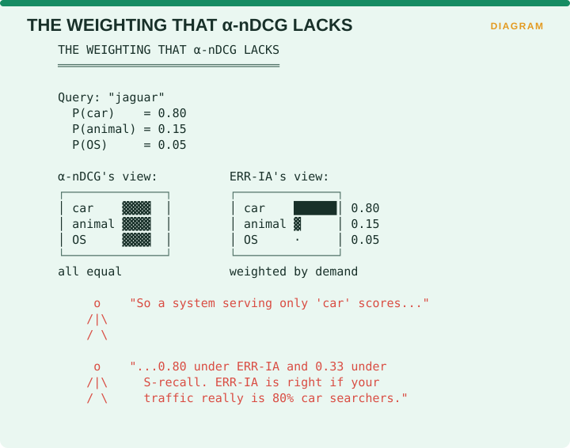
The figure sets the two views side by side for a jaguar query where the car intent has probability 0.80, the animal 0.15 and the operating system 0.05. α-nDCG treats all three as equal. ERR-IA weights them by demand.
So a system serving only the car intent scores 0.80 under ERR-IA and 0.33 under S-recall, and ERR-IA is the right answer if your traffic really is 80% car searchers. Everything therefore depends on whether that 0.80 came from data or from somebody’s intuition.
Large-scale web search. ERR-IA’s home, and the one setting where intent probabilities can be estimated reliably from query logs.
E-commerce with mixed intent. A query like “apple” spans a fruit, a phone and a record label, and query logs give you the priors directly.
Enterprise or RAG search. Usually impractical, because you lack the traffic volume to estimate intent priors and per-intent judgments are prohibitively expensive. Use α-nDCG or S-recall instead.
Use ERR-IA only when you can estimate intent probabilities from data. A guessed prior makes ERR-IA worse than α-nDCG rather than better, because it adds a layer of false precision on top of exactly the same underlying judgments.
This one is worth flagging because it connects two chapters. NRBP, meaning Novelty- and Rank-Biased Precision, adapts RBP for search result diversification, and comes from Clarke, Kolla & Vechtomova, An Effectiveness Measure for Ambiguous and Underspecified Queries, ICTIR 2009 VERIFIED.
If you adopted RBP for its residual in §5.5 and you also care about diversity, NRBP is the natural combination, since it brings geometric persistence weighting, novelty discounting and honest reporting of uncertainty together in one measure. It is the least-used metric in this chapter and arguably the best suited to the sparse-judgment settings most people actually work in.
For meta-evaluation across this whole family, see Clarke, Craswell, Soboroff & Ashkan, A Comparative Analysis of Cascade Measures for Novelty and Diversity, WSDM 2011, pp. 75-84 VERIFIED.

S-recall measures coverage of subtopics and is rank-blind, which makes it the cheapest diagnostic and the one to run first. α-nDCG multiplies position by novelty with α as the knob, which makes it the workhorse, and you should report it alongside plain nDCG so that the gap between them shows your redundancy cost. ERR-IA is intent-weighted and generalizes α-nDCG, and you should only reach for it when you can estimate intent priors from data. NRBP combines novelty with RBP’s residual, which makes it the best fit for sparse judgments and the most underused metric here.
For RAG, if you cannot afford any annotation at all, RAG-X’s Pairwise Redundancy and Exclusive Hit Rate from Supplement B §D.4 capture the same signal without labels.
The argument to carry out of this chapter is Clarke et al.’s. Evaluation measures act as objective functions that systems get optimized against, so a measure blind to redundancy will produce systems that generate it. Your reranker is optimizing whatever you measure, including the things you forgot to measure.
Every metric so far scores a ranking by how much value it delivers to the person searching. This chapter asks a different question, which is what the ranking does to the things being ranked.
Singh and Joachims set this against the Probability Ranking Principle, the classical claim that the ideal ranking orders items by decreasing probability of relevance because doing so maximizes utility to the user. Their question is whether that uncompromising focus on the user is still appropriate when the items being ranked are not books.

The figure draws attention as a steeply falling column, with rank 1 receiving a great deal, rank 2 receiving roughly half of that, and everything past rank 5 receiving almost nothing. The point is what that column represents once you change what is being ranked. When the ranked items are job candidates, that column is economic opportunity. When they are sellers, it is revenue. When they are articles, it is influence.
A team that says it simply ranks by relevance has still made that allocation. Relevance scores are continuous and vary by small amounts, while exposure is winner-take-most, so a candidate who is one percent less relevant can receive eighty percent less attention.
That mismatch is the technical heart of the chapter. Small differences in relevance produce large differences in exposure because position bias is steep, and this is a measurement fact about ranked interfaces rather than a fairness opinion. Biega et al. note that position bias has been established through eye-tracking and other empirical work, and that it persists even when the items at different ranks are randomly shuffled, which means it is a property of the interface rather than of the content.
Three reasons, in increasing order of urgency.
One-line: Constrain a ranking so that groups of items receive exposure proportional to their merit.
Facets: Fairness | system | ref | R | ESTABLISHED VERIFIED Source: Singh & Joachims, Fairness of Exposure in Rankings, KDD 2018, pp. 2219-2228, doi 10.1145/3219819.3220088 · arXiv:1802.07281
Ranking by relevance alone can hand almost all the exposure to one group of items even when the groups are nearly equal in quality, because position bias amplifies a small difference in score into a large difference in attention. If the items are people or businesses, that amplification is a decision with consequences, and no metric in the previous chapters can even see it.
Singh and Joachims give you a framework rather than a single number. You express your fairness criterion as a constraint on how exposure is allocated, and then you find the ranking policy that maximizes user utility subject to that constraint.
Their motivating example is a service connecting employers to potential employees, where exposure translates fairly directly into the probability of getting an interview. Different notions of fairness, such as demographic parity, disparity of treatment and disparity of impact, become different constraints inside the same optimization, so the framework does not force a choice on you.

The figure makes the amplification concrete. Two groups have nearly equal average relevance, with group A at 0.62 and group B at 0.60. The relevance-optimal ranking puts three group A items in the top three positions and group B items at ranks 4 and 5, which gives group A 87% of the exposure and group B 13%. A three percent gap in relevance has become a 74-point gap in exposure.
That ranking is correct in the sense that it is utility-optimal. Whether it is acceptable is a different question, and it is the question this framework lets you answer.
Hiring and marketplace platforms. The design target, and where the stakes are clearest.
Enterprise RAG over multi-team documentation. A genuinely useful reframing. Treat teams as groups and measure whether retrieval systematically favours one team’s documents. It is cheap to compute if your metadata carries an owner field, and it frequently surfaces something real.
Consumer web search. Contested territory. Whether search engines owe publishers any exposure fairness is an active policy debate rather than a settled engineering question.
If you have group labels and anything is at stake in exposure, measure the exposure distribution before you try to constrain it. Most teams have never computed it and are surprised by how concentrated it turns out to be. The measurement is cheap, and the normative decision about what to do with the result is the expensive part, which should be made by people beyond the engineering team.
One-line: Individual items should receive attention proportional to their relevance, amortized across many rankings.
Facets: Fairness | system | ref | R | ESTABLISHED VERIFIED Source: Biega, Gummadi & Weikum, Equity of Attention: Amortizing Individual Fairness in Rankings, SIGIR 2018, Ann Arbor MI, doi 10.1145/3209978.3210063
Group fairness can be satisfied while individuals inside a group are treated very differently, and it also requires group labels you may not have or may not be allowed to collect. Beyond that, there is a structural difficulty: position 1 is scarce, so within any single ranking somebody has to come first and somebody has to come last, which means perfect fairness inside one ranking is impossible by construction.
The two 2018 papers address different units and answer different questions. Singh and Joachims study group fairness through equal exposure for demographic groups within one ranking. Biega et al. study individual fairness across repeated rankings.
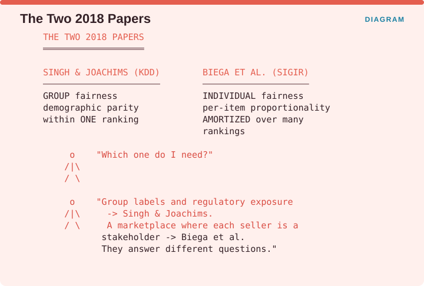
Which one you need follows from your situation. If you have group labels and regulatory exposure, you want Singh and Joachims. If you run a marketplace where each seller is an individual stakeholder with a claim of their own, you want Biega et al. They are not competing answers to one question.
This is the contribution worth internalizing, and it is the response to the scarcity problem above. Fairness is achieved across a thousand queries rather than within any one of them.
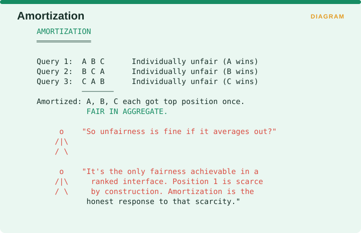
The figure shows three queries. The first returns A, B, C. The second returns B, C, A. The third returns C, A, B. Every individual ranking is unfair in the sense that one item took the top position, and across the three of them each item held position 1 exactly once, so the allocation is fair in aggregate.
Asked whether unfairness is acceptable as long as it averages out, the answer the paper gives is that amortized fairness is the only kind achievable in a ranked interface, because position 1 is scarce by construction. Amortization is the honest response to that scarcity rather than a way of dodging it.
Two-sided marketplaces. The natural fit, since each seller is an individual stakeholder with a legitimate claim to attention proportional to their merit.
Academic and content search. Amortized author-level exposure is a real concern in how citations accumulate, and it is almost never measured.
RAG over an internal knowledge base. A quietly useful application. Amortized attention measured per document reveals which parts of your corpus are never retrieved at all, and documents with zero lifetime exposure are either redundant or unfindable, both of which are worth knowing about.
Use amortized exposure as a corpus-health diagnostic even if fairness is not your motivation. Compute the distribution of lifetime retrieval counts across your corpus, and a long tail of never-retrieved documents tells you either that the corpus is bloated or that your retrieval has blind spots. You cannot distinguish those two from any other metric in this book, and both are actionable.

If you have group labels and regulatory exposure, use Fairness of Exposure from Singh and Joachims. If you have no group labels and run a repeated-interface system, use Equity of Attention from Biega et al. For multilingual retrieval, use PEER. For contested or political topics, use DUO, which measures indexical bias, meaning the over-representation of one side of a disputed question.
There is one diagnostic worth running even if fairness is not your goal at all. Compute the exposure distribution across your corpus, and two things fall out for free: how concentrated attention is, and which documents are never retrieved. The second of those is a corpus-health signal that no other metric in this book will give you.
One caution to hold onto. These metrics can trade off against nDCG, because they are constraints rather than quality measures. Optimizing them will reduce your measured relevance, and that is the intended behaviour rather than a regression to be investigated.
Everything so far required judgments, meaning somebody sitting down and deciding what was relevant. This chapter asks whether your users have already answered that question through their behaviour, since they click on some results and ignore others every day.
The appeal is obvious, and Radlinski, Kurup and Joachims state it precisely: usage data can be collected at essentially zero cost, it is available in real time, and it reflects the values of the users themselves in the context of their actual information need.
They then demonstrate that the obvious way to use it does not work.
Source: Radlinski, Kurup & Joachims, How Does Clickthrough Data Reflect Retrieval Quality?, CIKM 2008, pp. 43-52, Napa Valley VERIFIED
Running an operational search engine over the arXiv.org e-print archive under a controlled experimental design, they tested eight absolute usage metrics. The finding was blunt:
None of the eight absolute usage metrics explored, including the number of clicks, the frequency of query reformulations, and abandonment, reliably reflect retrieval quality for the sample sizes considered.
What did work was comparison. Paired experimental designs adapted from sensory analysis produced accurate and reliable statements about the relative quality of two retrieval functions, and two separate paired comparison tests analyzing clickthrough from an interleaved presentation of ranking pairs both gave accurate and consistent results.
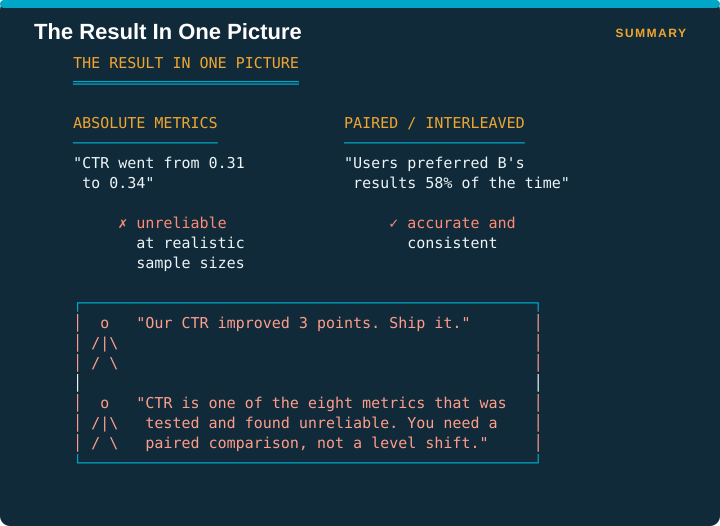
The figure puts the two kinds of claim side by side. An absolute claim sounds like “clickthrough rate went from 0.31 to 0.34”, and that turns out to be unreliable at realistic sample sizes. A paired claim sounds like “users preferred B’s results 58% of the time”, and that turns out to be accurate and consistent.
So a team announcing that clickthrough improved three points and proposing to ship on that basis is relying on one of the eight metrics that was tested and found unreliable. What they need is a paired comparison rather than a shift in a level.
This matters enormously and is widely ignored, because most production teams monitor exactly the absolute metrics that study found wanting. Clickthrough dashboards, abandonment rates, reformulation counts, all eight categories are in daily use, and the published evidence says those numbers do not tell you what you think they do at the sample sizes you have.
The explanation the authors offer is that interleaving gives searchers an easier task. Expressing a relative preference between two rankers is something a click can genuinely convey, and expressing an absolute quality level is not.
One-line: Blend two rankers’ results into one list, show it to every user, and attribute each click to the ranker that contributed the clicked item.
Facets: Correctness | session | human | R | ESTABLISHED VERIFIED Source: Radlinski, Kurup & Joachims, CIKM 2008, pp. 43-52 VERIFIED
If absolute click metrics cannot tell you whether a ranker is good, you still need some way to decide whether a new ranker is better than the one you are running. Standard A/B testing splits users into two groups and compares them, which means the difference you are looking for has to be large enough to show through all the natural variation between two populations of people.
Rather than splitting the users, you split each result list. Take the rankings produced by both rankers, blend them into a single list according to a fixed procedure, and show that one list to everybody. Because you recorded which ranker contributed each item, a click on any item is a point for whichever ranker put it there.
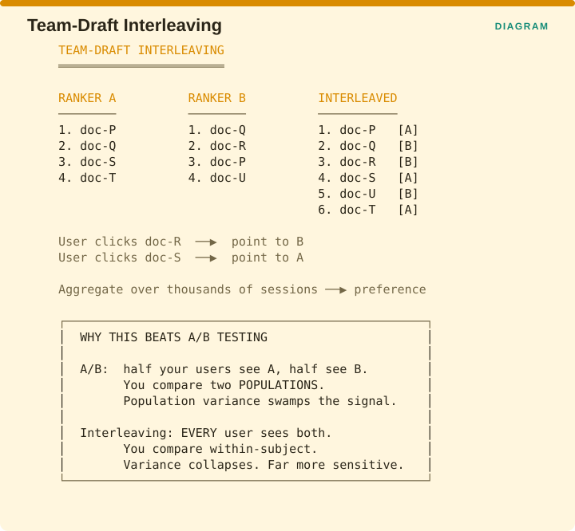
The figure walks the team-draft variant, so named because the two rankers take turns picking like captains choosing a team. Ranker A wants doc-P, doc-Q, doc-S, doc-T and ranker B wants doc-Q, doc-R, doc-P, doc-U. The interleaved list comes out as doc-P credited to A, doc-Q credited to B, doc-R credited to B, doc-S credited to A, doc-U credited to B and doc-T credited to A. A user who clicks doc-R has given a point to B, and a user who clicks doc-S has given a point to A. Aggregate that over thousands of sessions and you have a preference.
The figure also explains why this beats A/B testing. Under A/B, half your users see A and half see B, so you are comparing two populations and the variation between people swamps the signal you care about. Under interleaving, every user sees both, so the comparison happens within each person, the variance largely disappears, and you reach significance on far less traffic.
High-traffic consumer search. Interleaving’s home. If you have the traffic, it is the most sensitive comparison instrument available anywhere in this book.
RAG retriever comparison. CAUTION Partially applicable and underexplored. If your interface shows the retrieved sources, you can interleave those and read a preference from which sources get clicked. If retrieval is invisible to the user, the method is simply unavailable, and the gap in RAG evaluation remains open.
Enterprise search. Often starved of traffic. A tool serving 200 queries a day will not reach significance in any useful timeframe.
If you have the traffic, interleave for every ranker comparison and stop using absolute click metrics for that purpose. The 2008 result is unambiguous, since the absolute metrics were unreliable and the paired comparisons were reliable.
Keep absolute metrics for monitoring, which is the job of noticing that something broke, and use interleaving for deciding, which is the job of choosing between two options. Those are different jobs and one number cannot do both.
One-line: Reweight logged interactions by the inverse of their observation propensity, so you can estimate how a new ranker would have performed using old logs.
Formula (sketch):
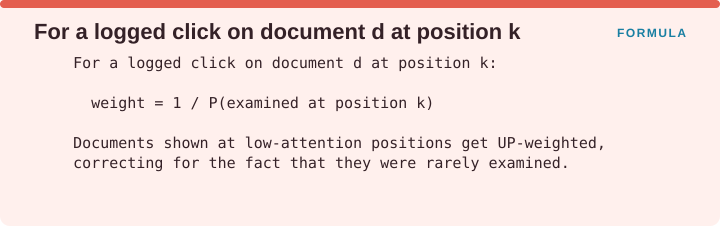
Facets: Correctness | system | human | R | ESTABLISHED VERIFIED Source: Joachims, Swaminathan & Schnabel, Unbiased Learning-to-Rank with Biased Feedback, WSDM 2017, pp. 781-789
Interleaving requires you to deploy the candidate ranker to real users, which is fine for the one or two candidates you are serious about and impossible for the twenty you would like to screen. What you want is a way to ask how a new ranker would have done using logs that your current ranker produced, without showing anything to anybody.
The obstacle is position bias. A document that sat at rank 20 received very few clicks, and you cannot tell from the raw count whether it was bad or simply never seen. Inverse propensity scoring separates those two by dividing the observed clicks by the probability that the document was examined at all, which is what the formula panel describes: the weight for a click on a document at position k is 1 divided by the probability of examination at position k. Documents shown at low-attention positions get weighted up, correcting for the fact that they were rarely looked at, and the result is an unbiased estimate of the underlying relevance.
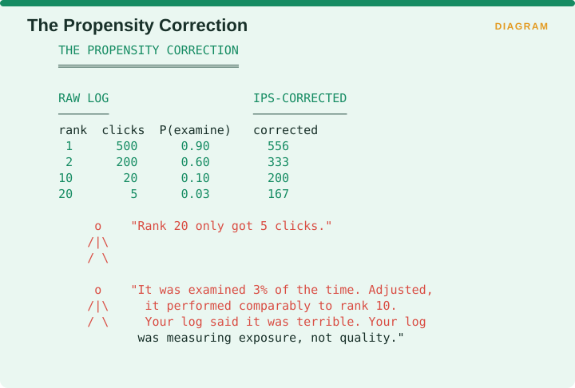
The figure works four ranks. Rank 1 received 500 clicks with an examination probability of 0.90, correcting to 556. Rank 2 received 200 clicks at probability 0.60, correcting to 333. Rank 10 received 20 clicks at probability 0.10, correcting to 200. Rank 20 received just 5 clicks at probability 0.03, correcting to 167.
Reading the raw log, rank 20 looks terrible with its five clicks. Adjusted for the fact that it was examined only three percent of the time, it performed comparably to rank 10. The log was measuring exposure rather than quality, and the correction is what separates the two.
Large-scale search and recommendation. The intended setting, and where it delivers most.
RAG reranker selection. A genuinely promising and underused application. If you log which chunks were retrieved and whether the resulting answer was correct, IPS-style reweighting lets you estimate how a new reranker would have done offline. Note that the support problem is particularly severe here, because your log only contains chunks your current retriever surfaced in the first place.
Anything low-traffic. Variance will dominate the estimate. Do not bother.
Use counterfactual evaluation to shortlist candidates offline, then interleave the top two or three online. Neither instrument replaces the other, since IPS is cheap and becomes biased when the model behind it is misspecified, while interleaving is expensive and trustworthy.
CAUTION The support assumption is the failure mode to watch. If you are evaluating a retriever that surfaces documents your current one never did, your logs are silent on exactly the cases that matter, and IPS will confidently report on the subset it can see while saying nothing about the rest.
A brief treatment, since these are considerably less standardized than everything above.
| Metric | What it captures | Note |
|---|---|---|
| sDCG | DCG extended over a multi-query session | Järvelin et al., ECIR 2008 OPEN not verified this pass |
| Abandonment rate | Sessions with no click | CAUTION Among the eight metrics found unreliable in 2008 |
| Reformulation rate | User rewrote the query | CAUTION Also among the eight |
| Task completion time | Time to satisfy the need | Manning Ch. 8 VERIFIED |
| Time-biased gain | Gain discounted by time spent | Smucker & Clarke, SIGIR 2012 OPEN not verified this pass |
Two of these carry the 2008 warning explicitly. Abandonment and reformulation are diagnostic signals, useful for noticing that something has broken, and they are not quality measures, so do not build a comparison on them.
Two entries carry OPEN status, meaning the citation was asserted from memory rather than checked against the source during this pass. A later evidence pass resolves both.
Worth citing whenever somebody proposes reading quality directly off clicks: Joachims, Granka, Pan, Hembrooke, Radlinski & Gay, Evaluating the Accuracy of Implicit Feedback from Clicks and Query Reformulations in Web Search, ACM TOIS 25(2), Article 7, 2007 VERIFIED. This is the eye-tracking-backed study that established what clicks do and do not tell you, and it both predates and underpins the 2008 negative result.
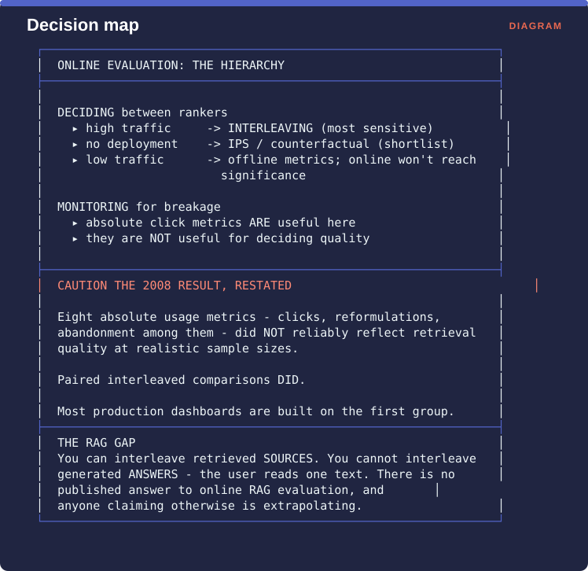
The hierarchy comes down to whether you are deciding or monitoring. For deciding between rankers, use interleaving if you have high traffic, since it is the most sensitive instrument available; use IPS or counterfactual estimation to shortlist when you cannot deploy; and fall back to offline metrics when traffic is low, because an online test will never reach significance. For monitoring, absolute click metrics are genuinely useful, and they remain unsuitable for deciding whether one system is better than another.
The 2008 result restated: eight absolute usage metrics, including clicks, reformulations and abandonment, did not reliably reflect retrieval quality at realistic sample sizes, and paired interleaved comparisons did. Most production dashboards are built on the first group.
There is also a gap specific to RAG. You can interleave retrieved sources, and you cannot interleave generated answers, because the user reads one text and has no second version to prefer. No published method resolves online RAG evaluation, and anyone claiming otherwise is extrapolating past the evidence.
It is worth starting with the conclusion here, because it reframes everything else in the chapter.
Source: Armstrong, Moffat, Webber & Zobel, Improvements That Don’t Add Up: Ad-hoc Retrieval Results Since 1998, CIKM 2009, pp. 601-610 VERIFIED
The authors went through a decade of published ad-hoc retrieval results and found that the reported improvements did not accumulate. Individual papers routinely demonstrated statistically significant gains over a baseline, and the absolute effectiveness of the field stayed flat.
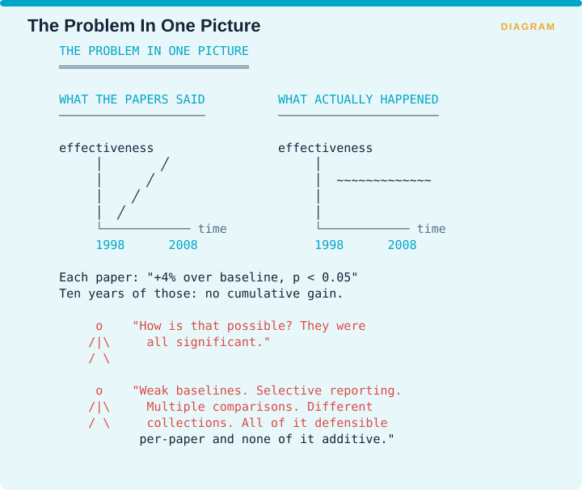
The figure draws the two stories side by side. What the papers implied, taken together, was a line climbing steadily from 1998 to 2008. What actually happened was a flat line over the same period. Each individual paper reported something like a 4% gain over its baseline at p < 0.05, and ten years of those produced no cumulative gain at all.
Asked how that is possible when every result was significant, the answer is a combination of weak baselines, selective reporting, multiple comparisons and results measured on different collections. Every one of those is defensible within a single paper, and none of them adds up across papers.
This result belongs in a book about metrics rather than in a book about statistics, because it is the strongest available evidence that a good metric set is not sufficient on its own. The field had nDCG, it had MAP, and it had significance testing, and its experiments still failed to establish that anything was getting better.
If you take one thing from this chapter, take this: your comparison practice determines what your metrics are capable of establishing.
Source: Smucker, Allan & Carterette, A Comparison of Statistical Significance Tests for Information Retrieval Evaluation, CIKM 2007, pp. 623-632 VERIFIED
You ran two systems over the same queries and one scored higher. Before you can claim it is better, you have to rule out the possibility that the difference is an accident of which queries happened to be in your set. That is what a significance test does, and the choice of test matters more here than in many fields, because retrieval scores are not normally distributed, queries vary enormously in difficulty, and sample sizes are small.
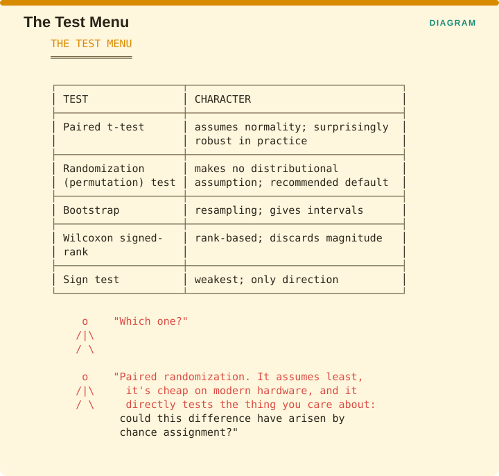
The figure lists five and characterizes each. The paired t-test assumes the differences are normally distributed and turns out to be surprisingly robust in practice even when they are not. The randomization test, also called a permutation test, makes no distributional assumption at all and is the recommended default. The bootstrap resamples the data and gives you confidence intervals. The Wilcoxon signed-rank test works on ranks and therefore discards information about magnitude. The sign test is the weakest of the five, since it uses only the direction of each difference.
The recommendation is the paired randomization test, because it assumes the least, it is cheap on modern hardware, and it tests directly the thing you actually want to know, which is whether this difference could have arisen from chance assignment.
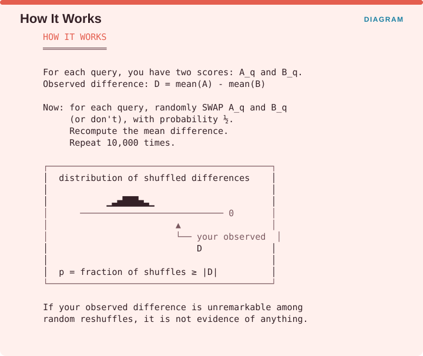
The procedure is simple enough to describe completely. For each query you have two scores, one from system A and one from system B, and your observed difference D is the mean of A minus the mean of B. Now, for each query independently, flip a coin and either swap that query’s two scores or leave them alone, then recompute the mean difference. Do that ten thousand times and you have a distribution of differences that could have arisen if the labels A and B meant nothing.
Your p-value is the fraction of those shuffled differences that are at least as large as the one you observed. The logic underneath is worth stating plainly: if your observed difference is unremarkable among random reshuffles of the same numbers, it is not evidence of anything.
Use a paired randomization test as your default, and report the p-value, the effect size and a confidence interval together. Never report a p-value on its own, because “significant” without a magnitude tells the reader nothing about whether the difference is large enough to care about.
Three verified works make overlapping points from different angles.
| Work | Citation | Finding |
|---|---|---|
| Voorhees & Buckley | The Effect of Topic Set Size on Retrieval Experiment Error, SIGIR 2002, pp. 316-323 VERIFIED | Error rates depend strongly on the number of topics |
| Webber, Moffat & Zobel | Statistical Power in Retrieval Experimentation, CIKM 2008, pp. 571-580 VERIFIED | Most IR experiments are underpowered |
| Sanderson & Zobel | Information Retrieval System Evaluation: Effort, Sensitivity, and Reliability, SIGIR 2005, pp. 162-169 VERIFIED | Trades off judgment effort against reliability |
Statistical power is the probability that your experiment would detect a real difference of a given size if one existed. Low power is usually described as a risk of missing real effects, and it carries a second consequence that is less widely understood.
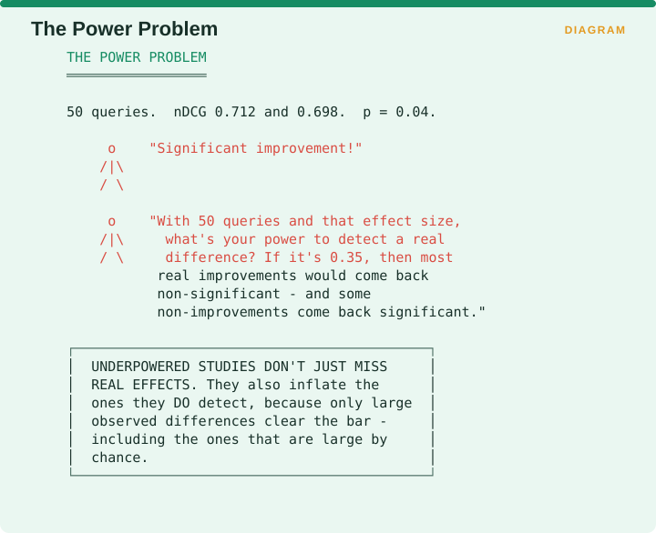
The figure runs the scenario. Fifty queries, nDCG of 0.712 against 0.698, p = 0.04, and a team announcing a significant improvement. The question that should follow is what their power was to detect a real difference of that size, and if the answer is 0.35, then most genuine improvements in that setup would come back non-significant while some non-improvements come back significant.
The second consequence is the one to remember. Underpowered studies do not merely miss real effects, they also inflate the effects they do detect, because only a large observed difference can clear the significance bar, which includes differences that are large purely by chance.
Work out how many queries you need before you run the experiment rather than afterwards. If you cannot get that many, say so plainly and report confidence intervals wide enough to be honest about it.
For RAG specifically, evaluation sets of 50 to 100 questions are common and are almost always underpowered for the effect sizes people claim from them. If you are comparing two rerankers that differ by two points of accuracy, a hundred questions will not settle the question and no amount of careful testing will make them settle it.
These are the two mechanisms that Armstrong et al.’s finding rests on.
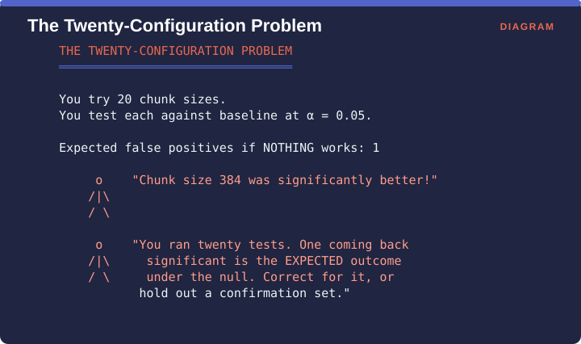
Suppose you try twenty chunk sizes and test each one against your baseline at the conventional threshold of 0.05. That threshold means each individual test has a one in twenty chance of coming back significant when nothing real is happening, so across twenty tests the expected number of false positives is exactly one, even if none of the twenty configurations is any better than the baseline.
So a team announcing that chunk size 384 was significantly better has observed the outcome you would expect under the assumption that nothing works. The fix is either to correct for the number of tests or to hold out a confirmation set.
Correct with Bonferroni, which is simple and conservative, or with Holm, or with Benjamini-Hochberg, which controls the false discovery rate rather than the family-wise error rate. Better still, choose your configuration on a development set and confirm it exactly once on a held-out set that you have not touched.
This is the subtler mechanism and it does more damage. A well-tuned BM25 is a strong baseline and an untuned one is not, so a paper comparing against an untuned baseline reports a gain that partly or wholly disappears once the baseline is configured properly. Each such paper can be individually defensible, and the aggregate trend across many of them is still misleading.
The figure works the arithmetic. Paper 1 beats a weak BM25 by 8%, paper 2 by 6%, paper 3 by 7%, so a reader combining them expects something in the region of 21% over BM25. In reality all three sit roughly level with a properly tuned BM25, and the entire apparent gain was a description of how badly the baseline had been configured.
The RAG-era relevance is direct and current, because dense retrieval papers routinely compare against BM25 with its default k1 and b values. Note also the finding from The Power of Noise (Cuconasu et al., SIGIR’24), where BM25 outperformed dense retrieval methods in terms of perplexity on the fundamental text-completion task, and a broad set of sparse methods beat every dense method tested across varying query lengths. Sparse baselines are stronger than the field’s habits assume.
For comparison across collections there is a published remedy: Webber, Moffat & Zobel, Score Standardization for Inter-Collection Comparison of Retrieval Systems, SIGIR 2008, pp. 51-58 VERIFIED. If you need to compare results measured on different collections, and RAG practitioners often do across domains, then raw metric values are not comparable and standardization is what to do about it.
Everything in Volume I, condensed into the things that have to appear beside a number for that number to mean anything to a reader.
About the metric itself, state the metric name and the cutoff k, the gain function if you are reporting nDCG, the persistence p if you are reporting RBP or RBO, the novelty parameter α if you are reporting α-nDCG, and where your judgments came from along with how much of the retrieved material they cover.
About the comparison, state the number of queries, which significance test you used with paired randomization preferred, the effect size and confidence interval alongside the p-value, any multiple-comparison correction if you ran more than one test, and the configuration of your baseline including whether it was tuned.
Then add one honesty line, which is either RBP’s residual, or the gap between MAP and bpref, or any other statement of how much your incomplete judgments could move the number.
For RAG there are five more: the embedder name and version, the generator name and version, the judge model with a dated snapshot if anything was scored by a language model, the chunk size and overlap, and the value of k that was actually injected into the prompt rather than the k that was retrieved.
That last item recurs throughout this book because it is the most common silent error in RAG evaluation, where metrics get reported at retrieval depth while the generator consumes a considerably shallower slice.
Chapter 1 promoted efficiency and cost from a footnote to a full dimension. This chapter is the classical half of that promotion, and Supplement B Part D is the RAG half.
The classical measures themselves are unglamorous and thoroughly understood.
| Metric | Source | Note |
|---|---|---|
| Query response time / latency | Manning Ch. 8 VERIFIED | The user-facing number |
| Query throughput | Manning Ch. 4 VERIFIED | Capacity |
| Indexing throughput | Manning Ch. 4 VERIFIED | Gates your refresh policy |
| Index size | Manning Ch. 5 VERIFIED | Storage and memory pressure |
| Query-processing cost | Manning Ch. 7 VERIFIED | Per-query compute |
| Crawl throughput | Manning Ch. 20 VERIFIED | Ingestion capacity |
Re-listing those is not the contribution of this chapter. The contribution is establishing that time is not simply a cost sitting alongside quality, because for a reader with a finite budget time is part of the quality measurement itself.
One-line: Gain accumulated as a function of time spent, discounted by the probability the user is still reading.
Formula (structure):

Facets: Efficiency/Cost + Correctness | session | ref | E2E | ESTABLISHED VERIFIED Source: Smucker & Clarke, Time-Based Calibration of Effectiveness Measures, SIGIR 2012, pp. 95-104, doi 10.1145/2348283.2348300 - SIGIR 2012 Best Paper
Every metric in Chapters 5 through 8 discounts by rank, which quietly assumes that two documents at the same position cost the reader the same amount. They do not. A result with a clear snippet that takes three seconds to assess and a result with a poor snippet attached to a 400-page PDF occupy the same rank and consume wildly different amounts of the reader’s budget, and no rank-based metric can express the difference.
Time-biased gain replaces the rank discount with a time discount. Reading the formula, G(t) is the gain the reader has accumulated by time t, and D(t) is a decay function giving the probability that they are still reading at time t, starting at D(0) = 1 and falling from there. The measure integrates the two together, so gain that arrives after the reader has left contributes nothing.
The authors’ motivation makes the point concrete. Summaries are designed to speed up the rate at which users find relevant documents, and they do, so a metric ought to reflect the value a good summary adds by using a user model that accounts for the time required. Rank-based metrics are blind to snippet quality by construction, because a snippet does not change anybody’s rank.
The figure compares two result lists with identical nDCG. List A has a relevant document at rank 1 with a good snippet that takes three seconds to judge, and another at rank 2 on the same terms. List B has a relevant document at rank 1 with a bad snippet attached to a 40-page PDF that takes ninety seconds to judge, and another the same at rank 2.
nDCG scores them identically because the same documents were retrieved in the same order. Time-biased gain scores list A far higher, because the user gave up partway through the first item of list B. Retrieval was identical and the experience was not.
The decay curve in the lower panel is the mechanism. It starts at 1.0 and falls away over the first minute or two, so gain arriving at ninety seconds is worth a fraction of gain arriving at three, and rank has no way of representing that.
Enterprise document search. An excellent fit and badly underused, because corpora with wildly varying document lengths, such as a two-page memo sitting beside a 400-page manual, are exactly where rank-based metrics mislead.
Mobile search. Time costs are large and variable, so TBG’s framing is the right one.
RAG. CAUTION The user’s reading time is spent on a single generated answer, so the direct translation does not work. The useful analogue is the model’s budget, meaning tokens consumed and whether the gain arrives inside the context window or past the point where attention has fallen off. Lost in the Middle effectively suggests a D(t) for language models, in the form of a decay function over position within the context. A formal time-biased measure for RAG remains an open opportunity.
If your corpus has highly variable document lengths, or your snippets vary in quality, TBG will tell you something nDCG structurally cannot.
Start cheaply by logging time-to-judgment inside your annotation tool. You will collect the input data as a by-product of work you are already doing, and you can decide later whether to compute the full measure.
One-line: DCG extended across the multiple queries of a single search session, with later queries discounted.
Facets: Correctness | session | ref | R | ESTABLISHED VERIFIED Source: Järvelin, Price, Delcambre & Nielsen, Discounted Cumulated Gain Based Evaluation of Multiple-Query IR Sessions, ECIR 2008, LNCS 4956, pp. 4-15, doi 10.1007/978-3-540-78646-7_4
The paper’s premise is a direct criticism of everything in Chapters 4 through 8: assuming one query per topic and per session is a poor representation of what people actually do. Real users search, look at the results, rephrase, and search again, and a metric that scores each of those queries independently cannot tell the difference between a system that answered immediately and one that took three attempts.
sDCG applies a second discount across the queries in a session, on top of DCG’s existing discount across ranks within each query. A relevant result that arrives in a later reformulation is worth less than the same result in the first query, because the user paid the effort of rephrasing to get there.

The figure draws the nesting. A session contains query 1 at full weight, with its ranks discounted internally by the usual 1/log2(k+1). Query 2 sits below it, discounted because the user had to reformulate to reach it, with its own internal rank discounts. Query 3 is discounted further still.
Asked why later queries should be penalized when the user did eventually find what they wanted, the answer is that they found it after three attempts. A system that answered on the first attempt is better, and single-query metrics score the two identically.
| Advantages | Disadvantages |
|---|---|
| Models real multi-query behaviour | Requires session-level judgments and logs |
| Rewards answering early in the session | Two discount parameters to set and report |
| Captures reformulation cost, which no single-query metric can | Rarely implemented; little tooling |
| Graded relevance throughout | Session boundaries are ambiguous in practice |
Source: Lipani, Carterette & Yilmaz, From a User Model for Query Sessions to Session Rank Biased Precision (SRBP), ICTIR 2019 VERIFIED
This completes a pattern the book has now traced three separate times.
RBP from §5.5 measures quality within a single ranking, from Moffat and Zobel in 2008. RBO from §7.2 compares two rankings, from Webber et al. in 2010. NRBP from §8.3.1 adds novelty, from Clarke et al. in 2009. SRBP measures quality across a session, from Lipani et al. in 2019. One user model, being geometric persistence with an explicit residual, extended in four directions.
The practical consequence is that learning RBP properly gets you the other three nearly for free, which makes it the best return on conceptual investment anywhere in classical retrieval.
Use sDCG or SRBP if your users reformulate, which for enterprise search and conversational RAG they overwhelmingly do. For conversational RAG in particular, your unit of analysis is the session rather than the query, which means every metric in Chapters 4 through 8 is measuring the wrong unit when you apply it there.
This is a real and largely unaddressed gap. Multi-turn RAG evaluation almost always reports per-turn metrics, and a per-turn metric cannot see that turn 3 was only necessary because turns 1 and 2 failed.
The practical synthesis of the chapter.

The figure plots quality against cost as k rises through 1, 3, 5, 10, 20 and 50. The curve climbs steeply at first and then flattens into diminishing returns, which is the shape RAGChecker measured directly: moderately increasing the number and size of chunks improves recall and therefore F1 with minimal effort, and the effect saturates because the total amount of relevant information available is fixed.
Asked where their own system sits on that curve, most teams do not know, because almost nobody plots it. They pick k from a tutorial and never revisit the choice.
For k in {1, 3, 5, 10, 20, 50}, record five things: Recall@k, your primary quality metric, Pairwise Redundancy, the prompt tokens consumed per query, and time-to-first-token at the median and the 95th percentile. Then plot quality against tokens and find the knee.
It costs an afternoon, almost nobody does it, and it is the single highest-value experiment in this volume.
Two published data points anchor what to expect. RAGChecker observed faithfulness rising from 88.1 to 92.2 as k moved from 5 to 20, so more context made the generator more faithful rather than less. RAG-X measured 22.0% pairwise redundancy at its best configuration, so more context also bought duplicated material. A sweep measures both effects as they occur in your system rather than in somebody else’s.
Across nine chapters and roughly seventy metrics, five claims have earned their place.

Every metric in Volume I can be restated as an assumption about the reader. MRR assumes a user who stops at the first hit. nDCG assumes attention declining logarithmically. ERR assumes a user who satisfices probabilistically. RBP assumes a user who continues with probability p. TBG assumes a user with a time budget. sDCG assumes a user who reformulates. UDCG assumes the reader is a language model.
Choosing a metric is therefore choosing a theory of your reader. When the reader changed from a person to a language model, every classical discount became the wrong shape, and that is the entire argument of Supplement A.
RBP’s residual and the gap between MAP and bpref both exist to quantify how much your incomplete judgments could be moving your conclusions. Neither costs much to produce, and both are nearly always left out.
This is Clarke et al.’s argument and the most consequential sentence in Volume I. Measures act as objective functions that systems get optimized against, so a system will be optimized toward whatever you measure, including the things you forgot to measure. Redundancy went unmeasured, so systems produced it, and in 2026 that came to 22% of the retrieved context in a production-grade medical RAG pipeline.
Eight absolute usage metrics were tested in 2008 and none of them reliably reflected retrieval quality. Interleaved paired comparisons did. Most production dashboards are still built on the first group.
Armstrong et al. is the closing argument. The field had nDCG, it had MAP, and it had significance tests, and it still could not tell whether it was improving, because of weak baselines, multiple comparisons and reporting that did not accumulate.

Condensed into instructions: pick metrics that match your reader, report their uncertainty, tune your baseline as hard as you tune your own system, compare in pairs, correct for the number of things you tried, and plot the k-sweep from §12.3.
Three gaps this volume names honestly and does not close.
| Gap | Where it is addressed |
|---|---|
| Every classical discount assumes a human reader | Supplement A §A.4 (UDCG) |
| Nothing here measures whether the generator used the retrieval | Supplement A (Alignment) |
| Nothing here measures grounding, claims, or citations | Supplement B (Correctness) |
What Volume I does supply is the retrieval foundation that everything in the RAG chapters rests on. Practitioners who skip it tend to reinvent bpref badly and rediscover redundancy the expensive way.
Part
Contribution, attribution, quadrant diagnosis, and machine utility
Classical retrieval had one component, so it had one question to answer: was the ranking any good? RAG has two components working in sequence, which creates a question classical retrieval never had to ask.
Both components scored well. Why did the system fail?
Alignment metrics exist to answer that question. They are not retrieval metrics and they are not generation metrics, because both of those already exist and neither can see the problem. They measure the interface between the two components.
The figure lays out why component scores cannot be added together to give you this. On the retriever side you have nDCG at 0.89, recall at 0.91 and MRR at 0.86. On the generator side you have faithfulness at 0.84, with fluency and coherence both fine. In between the two, where the retrieved documents are actually handed over and used or ignored, you have nothing at all.
A team looking at that dashboard will say both sides are excellent, and what they have done is measure the two ends of a bridge while measuring nothing about the bridge.
Read across the literature, alignment metrics cluster into four distinct questions, and this book uses the following synthesis of the published methods.
| # | Question | Family | Metrics |
|---|---|---|---|
| 1 | What did this passage contribute? | Contribution | eRAG, DIG, ΔSePer, Gain |
| 2 | Did the generator use what the retriever ranked highly? | Attribution | WARG |
| 3 | Which component caused this failure? | Quadrant | CUE, MIRAGE |
| 4 | Is this ranking good for an LLM specifically? | Machine-utility ranking | UDCG |
Picking one metric from each of the four families gives you far more diagnostic power than four metrics drawn from family 1, and family 1 is where most teams accidentally end up, for reasons §A.2.6 explains.
Four published metrics, produced by four different research groups, all use one identical trick.

The trick is ablation, which means removing something to see what breaks. Ask the model the question without the passage and measure something about the answer, giving you score0. Ask it again with the passage included and measure the same thing, giving you score1. The difference between the two is what that passage contributed.
The four metrics differ only in what “score” means.
| Metric | What is differenced | Source |
|---|---|---|
| eRAG | Downstream task performance | Salemi & Zamani, SIGIR’24 |
| Gain | Contribution to a correct output | Jiang et al., ACL’25 |
| DIG | LLM generation confidence | Wang et al., EMNLP’25 Oral |
| ΔSePer | Semantic perplexity (belief mass on the true answer) | Dai et al., ICLR’25 Spotlight |
Hold that table in mind, because it becomes the most important practical recommendation in this part, which §A.2.6 sets out.
One-line: Feed each retrieved document to the LLM individually, score the resulting output against the task’s ground truth, and use that score as the document’s relevance label.
Facets: Alignment | passage | ref | E2E | ESTABLISHED VERIFIED Source: Salemi & Zamani, SIGIR’24 · arXiv:2404.13781
Relevance labels come from people, and people judge whether a document is about the right topic. What a RAG system needs to know is whether a language model can actually produce a correct answer from that document, which is a different question. The paper’s motivating observation is blunt: evaluating a retriever using query-document relevance labels shows only a small correlation with the RAG system’s downstream performance. The field had been assuming human relevance and machine usefulness were the same quantity, and they are not.
eRAG stops asking people what is relevant and starts asking the generator. Each document in the retrieval list is run through the language model on its own, the resulting output is scored against the downstream ground truth, and that score becomes the document’s label. You then aggregate those per-document labels using any ordinary set-based or ranking metric you already report, whether that is precision, nDCG or anything else.
That last property is the elegant part, and it is easy to miss. eRAG is not a replacement for nDCG. It is a replacement for the relevance labels you feed into nDCG.
The figure contrasts the two pipelines. Classically, a human looks at document 3, decides it is relevant because it is about the right topic, and that label goes into nDCG. Under eRAG, document 3 goes to the language model alone, the model produces an answer, the answer is scored against the truth, and that score becomes the label that goes into nDCG. The question being asked has changed from whether the document is on topic to whether the model could actually answer using only this. Same formula, completely different input.
Kendall’s τ correlation with downstream RAG performance improves by between 0.168 and 0.494 over baseline methods. Runtime improves, and GPU memory consumption drops by up to 50 times relative to full end-to-end evaluation.
That 50 times is not a footnote, it is the reason eRAG is deployable at all. Evaluating every possible subset of retrieved documents end to end is combinatorially hopeless, and eRAG’s per-document decomposition turns the problem linear.
Enterprise knowledge base with FAQ-like questions. A near-ideal fit, because most questions are answerable from a single chunk, so the independence assumption holds. Use eRAG labels to retrain your reranker and you are optimizing that reranker for the generator you actually deploy.
Financial multi-document analysis. A poor fit as the sole metric. A question like “what was the revenue change across the three segments?” needs three documents jointly, each of which scores near zero alone, so eRAG will report your retriever as failing when it succeeded. Pair it with a set-level sufficiency measure.
Medical guideline extraction. Mixed. RAG-X’s GuidelineQA work suggests these questions are often answerable from a single source, and the multi-source cases produce silent failures with clinical consequences. Sample the documents that received a zero label and audit them by hand before trusting the aggregate.
Use eRAG to generate labels, compute nDCG on those labels, and report the result alongside nDCG computed on human labels. The gap between the two numbers is your relevance-utility divergence, and it is one of the most informative single figures you can put on a RAG dashboard.
If your task is multi-hop, do not use eRAG on its own. Its independence assumption is not a small approximation in that setting, it is a structural mismatch with the task.

The figure works the case. The question is whether revenue grew faster than costs in FY24. Document A holds the revenue figures and cannot answer the question alone, so it gets a label of 0. Document B holds the cost figures and cannot answer alone either, so it also gets 0. Together they answer the question perfectly. eRAG-derived nDCG comes out at 0.00 while the actual system works fine.
A retriever scoring zero on eRAG in this situation has not failed. The task is multi-hop, eRAG scores single documents, and it is measuring the wrong unit.
One-line: A document’s value is the difference in the LLM’s generation confidence with and without that document in the context.
Facets: Alignment | passage | free | E2E | EMERGING VERIFIED Source: Wang et al., EMNLP’25 Oral · arXiv:2509.12765
eRAG needs golden answers, and most production traffic does not come with them. If you want to know which retrieved documents are pulling their weight on live queries nobody has labelled, you need a signal the model can produce about itself. As the paper frames it, current RAG frameworks struggle to identify whether retrieved documents meaningfully contribute to answer generation, which makes it hard to filter out irrelevant or misleading content.
DIG measures a document’s value as the change in the model’s confidence in its own answer when that document is added to the context. Then, and this is where it departs from eRAG, those DIG scores are used to train a specialized reranker that filters out irrelevant documents and promotes valuable ones.
The figure works a small example. Without the document, the model answers “I think it’s… Bern?” with a confidence of 0.41. With the document, it answers “It’s Bern” with a confidence of 0.93. DIG is 0.93 minus 0.41, which is 0.52.
It is tempting to read a high DIG as meaning the document helped, and what a high DIG actually means is that the model became more confident. Those two are the same thing only when the model is well calibrated, which is the weakness the failure mode below turns on.
On NaturalQA, exact-match accuracy improves by 17.9% over naive RAG, 4.5% over self-reflective RAG, and 12.5% over modern ranking-based RAG, with an average 15.3% increase on GPT-4o across all the datasets tested.
High-volume consumer support. An excellent fit, because being reference-free means you can compute it on live traffic with no annotation, and support answers are typically single-source.
Adversarial or misinformation-adjacent domains. Dangerous. The gap between confidence and correctness is precisely what an adversarial passage exploits, since a well-written false passage is designed to raise confidence. Do not use DIG as a safety metric anywhere the corpus might contain deliberately misleading content.
Legal research. Use with care. Legal text is written to sound authoritative, so gains in confidence are cheap while gains in correctness are not. Pair DIG with a reference-based check on a labelled subset.
Use DIG when you need a reference-free contribution signal, and read it as evidence of influence rather than evidence of quality. A document with a high DIG changed the model’s behaviour, and whether it changed it for the better requires a different metric to establish.
If you use DIG to train a reranker, which is its intended purpose, compute the DIG you report using a different generator from the one used in training.
A retrieved document is well written, on topic and wrong. Without it the model says “I’m not sure, possibly X?” at a confidence of 0.35. With it the model says “It is definitely Y” at a confidence of 0.95. DIG comes out at 0.60, the highest score of any document in the set, and the answer is wrong.
DIG did not rank the worst document first by mistake. It ranked the most persuasive document first, which is what it measures, and it never claimed to rank the most correct one.
One-line: Sample many answers, cluster them by meaning, measure how much probability mass sits on the correct meaning-cluster before and after retrieval; the increase is retrieval’s utility.
Facets: Alignment | query | ref | E2E | EMERGING VERIFIED Source: Dai, Xu, Ye, Liu & Xiong, ICLR’25 Spotlight · arXiv:2503.01478
Scoring an answer by comparing its text against a reference punishes paraphrase, so a model that says “the city of Bern” when the reference says “Bern” gets marked down for being right in different words. What you want to measure is how much of the model’s belief sits on the correct meaning, regardless of how it happened to word things.
This is the most mathematically involved metric in the family, and the algorithm is worth stating in full because mangled summaries of it circulate.
The published algorithm takes a model M, a reference answer a*, an entailment model E, a threshold τ and a number of samples N. An entailment model is one that judges whether one piece of text implies another, which is how the method decides that two differently worded answers mean the same thing.
Step 1 samples N responses from the model. Step 2 records the likelihood the model assigned to each one. Step 3 has two variants. In the hard variant, responses are clustered together whenever the entailment score between them reaches the threshold τ, the cluster matching the reference answer is identified, and the probability of the correct answer is the sum of the likelihoods inside that cluster. In the soft variant, each response gets a kernel weight equal to its entailment score against the reference, and the probability is the likelihood-weighted sum of those weights. Step 4 repeats the whole procedure with the retrieved documents included, and step 5 gives ΔSePer as the probability of the correct answer with retrieval minus the probability without it.
Entailment is computed using deberta-v2-xlarge-mnli,
which the authors note is far more efficient than using an API-based
judge without a significant drop in performance.
A popular paper-summary site states that SePer does not require human annotations or ground truth answers. That is wrong. Algorithm 1 requires a*, the reference answer, at step 3 in both variants, and you cannot identify the correct semantic cluster without knowing what correct means.
This matters operationally, because if you adopted SePer believing it was reference-free, you planned around a false premise. SePer is reference-based, and DIG is the reference-free member of this family.
The rebuttal in the figure is simply to read step 3b, which says to identify the cluster matching the reference answer. Read the algorithm rather than a summary of the algorithm.

The figure runs a concrete case. Before retrieval, twenty sampled answers cluster into three meanings: “Bern” holding 0.20 of the probability mass, “Zurich” holding 0.45 and “Geneva” holding 0.35. The correct cluster is Bern, so the model’s belief in the right answer starts at 0.20. After retrieval, the same clustering gives Bern 0.88, Zurich 0.07 and Geneva 0.05, so ΔSePer is 0.88 minus 0.20, which is 0.68.
The pooling is the actual contribution here, and it is what separates this from token-level perplexity. Answers that mean the same thing land in one cluster, so “Bern” and “the city of Bern” are counted together rather than treated as a disagreement.
Research evaluation of retrievers. The intended setting and an excellent one, since if you are choosing between three retrievers offline, ΔSePer gives the most faithful ranking of their true utility.
Regulated domains needing paraphrase tolerance. Clinical and legal answers are frequently correct while worded differently, so exact match under-reports badly and semantic clustering fixes it.
Production monitoring. A poor fit, because sampling N answers per query is not something you run against live traffic. Use it on a fixed benchmark set at release cadence.
Use ΔSePer as your offline gold-standard utility measure, meaning the number you trust when choosing a retriever, and use something cheaper such as DIG or eRAG-labelled nDCG for continuous monitoring.
Report N and τ alongside the score every time, because a ΔSePer without its hyperparameters is not reproducible.
Team A uses a tight threshold of τ = 0.90 and reports ΔSePer of 0.31. Team B uses a loose threshold of τ = 0.70 and reports 0.58. Same system, same data, same metric name.
Team B’s retriever is not better. Team B’s clustering is looser, so more responses fall into the correct cluster, and the two teams compared two different metrics that happen to share a name.
One-line: A signal estimating how well an input passage contributes to producing correct output, used to train middleware that aligns retriever and LLM preferences.
Facets: Alignment | passage | free | E2E | EMERGING VERIFIED Source: Jiang et al., ACL’25 · arXiv:2505.18710 OPEN Method read at abstract and framing level; full training detail not retrieved.
Every metric so far in this family assumes that a more relevant passage is at worst neutral for the generator. GainRAG’s premise is that this assumption is false, and it is the most interesting claim in this part.
The paper describes a preference gap between retrievers and language models. Some highly relevant passages interfere with the model’s reasoning because they contain complex or contradictory information, and some passages that are only indirectly related help the model reach an accurate answer by supplying a useful clue.
That is worth reading twice. Two independent groups, Jiang et al. here and Cuconasu et al. in The Power of Noise at SIGIR’24, reached the same counterintuitive finding by different routes. Relevance and usefulness are not merely imperfectly correlated. They sometimes point in opposite directions.

The figure sets the two orderings against each other. The retriever ranks a dense, technical, highly relevant passage first, and that passage confuses the model and makes the answer worse. The retriever ranks a tangential, simple, apparently less relevant passage second, and that one supplies the logical clue that unlocks the question.
The conclusion is not that you should retrieve worse documents. It is that you should stop assuming your relevance labels describe what the model needs, and gain is the signal that measures the difference.
Gain was defined in order to train a middleware component. If you train on gain and then report gain, you are reporting a metric your system was explicitly optimized against, and that number will look excellent while meaning nothing.
If you adopt gain as a metric, compute it using a held-out generator that took no part in the training loop. This warning applies in weaker form to DIG, which is also used as a reranker target, and does not apply to eRAG or ΔSePer, both of which were designed as measurements first.
Any domain where you control the reranker. This is where gain belongs, as a training signal rather than a dashboard line.
Domains with dense, technical source material. Precisely where the preference gap bites, including legal statutes, clinical guidelines and engineering specifications, because the most relevant passage in those corpora is frequently the least usable one.
Treat gain as a training signal. Its diagnostic value to you is conceptual, which is to internalize the preference gap and stop assuming your relevance ordering is what the generator wants.
One-line: Measures how well the generator’s actual document usage aligns with the retriever’s ranking, using attribution methods on both sides.
Facets: Alignment | passage | free | E2E | EMERGING VERIFIED Source: Randl, Rocchietti, Henriksson, Abedjan, Lindgren & Pavlopoulos · arXiv:2601.21803
The contribution metrics tell you what a passage was worth. None of them tells you whether the generator actually paid attention to the passage the retriever ranked first. That is a different question, and answering it requires looking inside both components rather than at their outputs.
WARG belongs to the attribution family, meaning it computes what each component actually attended to. On the retriever side it uses Integrated Gradients, adapted for retrieval. On the generator side it uses PMCSHAP, a Monte-Carlo-stabilized approximation of Shapley values, which is a technique from game theory for dividing credit among contributors. WARG itself is the gap between those two attributions.
The figure draws both. In wasted retrieval, the retriever ranks document 1 as best, the generator ignores it and uses document 2 instead, so you paid to retrieve the right material and threw it away. In noise distraction, the retriever ranks document 4 as weak and the generator builds its answer primarily on that one, so the answer rests on the weakest evidence in the set.
| Failure | Share of queries |
|---|---|
| Generator ignores retriever’s top-ranked document | 47.4 - 66.7% |
| Generator relies primarily on a lower-ranked document | 48.1 - 65.9% |
On domain-specific data the figures came out around 60% and 57%. These are not edge cases. On most queries in the systems studied, the generator is not using the document the retriever worked hardest to find.
Regulated high-stakes deployment. The paper’s own framing. If you have to justify to a regulator why the system said what it said, WARG’s audit trail is the most defensible artefact in this supplement.
Debugging a reranker when answer accuracy is flat. If reranking improves nDCG while answer accuracy does not move, WARG tells you whether the generator is even looking at the reordered top of the list.
Closed-model API deployments. Not usable for the retriever half unless you host the embedder yourself.
Run WARG once, diagnostically, before you invest in improving your reranker. If 60% of your queries show wasted retrieval, then improving the ranking is close to worthless, because the generator is not consuming the ranking. Fix the interface first, which means prompt ordering, chunk formatting and explicit instructions about citation.
This is the highest-leverage insight in this part, because teams routinely spend quarters improving nDCG for a generator that ignores rank order entirely.

The figure restates the table from §A.2.0 and then draws the conclusion. eRAG differences downstream task performance, Gain differences contribution to correct output, DIG differences generation confidence, and ΔSePer differences semantic belief mass. All four ablate the passage and measure what changed.
So a dashboard showing eRAG-nDCG at 0.74, mean DIG at 0.71, ΔSePer at 0.69 and mean Gain at 0.73, all trending up, is not four independent metrics agreeing. It is one measurement wearing four hats, and they agree because they are the same question asked four ways.
Pick exactly one contribution metric, and choose it on supervision and cost rather than on what it measures, because what they measure is substantially the same thing.
| If you have… | Use | Why |
|---|---|---|
| Golden answers + offline compute budget | ΔSePer | Best human correlation; the gold standard |
| Golden answers + need it in CI | eRAG | Produces labels; 50× cheaper than E2E |
| No golden answers | DIG | The only reference-free option in the family |
| A reranker you’re training | Gain (as signal, not metric) | Designed for this; report something else |
Then spend the dashboard slots you just freed on the other three families, using WARG for attribution, CUE or MIRAGE for quadrant diagnosis, and UDCG for machine-utility ranking. Those measure genuinely different things, and their disagreement carries information in a way the contribution family’s agreement does not.
Source: Jiang, Zhao, Li, Wang & Qin, GainRAG: Preference Alignment in Retrieval-Augmented Generation through Gain Signal Synthesis, ACL 2025 Long Papers, Vienna · arXiv:2505.18710
The full title resolves the ambiguity that left this OPEN in §A.2.4, since this is gain signal synthesis rather than gain measurement.
The method estimates gain signals and then trains a middleware selector that predicts which passages will provide a positive generation gain, which is how it gets past naive relevance and aligns the retriever’s output with what actually benefits the generator. A pseudo-passage strategy mitigates degradation. It was trained on a small subset of HotpotQA and WebQuestions and generalizes across six datasets, with StandardRAG, Self-RAG and BGE-Reranker-base as baselines, all evaluated at top-1.
This confirms the warning in §A.2.4. Gain is a training signal for a selector, so reporting it as a metric on a system that was trained with it is circular. Use a held-out generator, or better, report something else entirely.
One-line: Cross-reference did the retriever find it? against did the generator adhere to it? and sort every query into one of four diagnostic quadrants.
Facets: Alignment | query | judge | E2E | EMERGING VERIFIED Source: Sivakumar, Sugumaran & Qiang, RAG-X · arXiv:2603.03541
A single accuracy number tells you what fraction of questions the system got right and nothing about how. Two systems can post identical accuracy while one of them is genuinely reading the documents it retrieved and the other is answering from memory with the retrieval step contributing nothing. Those two situations call for completely different work, and no scalar metric distinguishes them.
CUE builds two binary axes and crosses them. The first is retrieval success, determined by a cascading relevance function that tries an exact substring match, then token-level overlap of at least 0.80, then sentence-level semantic similarity of at least 0.75. The second is generator context adherence, which is judged by a language model and thresholded at 0.7 or above.

Crossing the two axes gives four boxes. If the retriever found the material and the generator adhered to it, that is Effective Use, and it is the only genuine success. If the retriever found it and the generator did not adhere, that is Information Blindness, meaning you had the answer and the model missed it. If the retriever missed and the generator adhered anyway, that is a Lucky Guess, meaning a right answer with no supporting evidence, and it is the dangerous box. If the retriever missed and the generator did not adhere, that is Correct Rejection, meaning the model knew it did not know.
Measured on GuidelineQA using Llama-3.1-8B with Qwen3-Embedding-8B, the four came out at Effective Use 49.2%, Lucky Guess 33.9%, Information Blindness 8.5% and Correct Rejection about 8.4%. A third of the system’s behaviour was in the Lucky Guess box.
That same pipeline scored 0.84 on context adherence, so the generator looked highly faithful while a third of its correct answers had no retrieved support at all. The paper’s diagnosis is that a high adherence score incorrectly attributes parametric answers to the context, which produces a false sense of grounding.

The figure exists because two different gaps get quoted interchangeably and they are not the same quantity. Accuracy was 71.0% and the context hit rate was 57.6%, so that gap is 13.4%, which rounds to the 14% the paper reports. Accuracy of 71.0% against Effective Use of 49.2% gives a gap of 21.8%, which is a different quantity measuring a different thing. Do not merge them, because they will not reconcile.
Clinical decision support. The origin domain, and Lucky Guess is a patient-safety category here rather than an efficiency one, because a clinically correct answer with no traceable source cannot be audited, defended or corrected.
Legal research. Directly transferable, since an unsupported but correct citation can survive review and therefore creates a risk that only surfaces later.
Consumer chat. Lower stakes, and a Lucky Guess may be perfectly acceptable. Track the number anyway, because if a third of your answers come from the model’s own memory then your retrieval system is doing considerably less work than your invoice suggests.
If you adopt one alignment metric from this entire supplement, adopt CUE. It subsumes the diagnostic value of a faithfulness score, it fixes faithfulness’s central flaw, and its output points at which component to work on next.
Report all four quadrants and never a single derived number, because the decomposition is the entire point.
One-line: Four mutually exhaustive metrics of RAG adaptability, computed by comparing model behaviour across closed-book, oracle-context, and mixed-context conditions.
Facets: Alignment | query | ref | E2E | EMERGING VERIFIED Source: Park, Moon, Park & Lim, Findings of NAACL 2025, pp. 2883-2900 · arXiv:2504.17137
Catalogue correction: the companion catalogue lists this as “NAACL’25” when it is Findings of NAACL 2025. Note also the name collision documented in the catalogue, where four unrelated artefacts are all called MIRAGE, so always pair the name with the arXiv identifier.
CUE tells you what is happening on your traffic and does not tell you whether the cause lies in the retriever or in the model itself. If Information Blindness is high, you still do not know whether a better retriever would help or whether this particular model simply ignores context. Answering that requires running the same questions under conditions you control.
Each question is run through three setups.
| Setup | Context given |
|---|---|
| Base | Closed-book - query only |
| Oracle | The correct context |
| Mixed | Correct and noisy contexts - the realistic case |
The dataset is 7,560 curated instances drawn over a 37,800-entry retrieval pool assembled from IfQA, NaturalQA, TriviaQA, DROP and PopQA.
Noise Vulnerability measures how susceptible the model is to noise in the context. Context Acceptability measures its ability to use provided context to reach an accurate answer. Context Insensitivity measures how often it fails to use the context at all. Context Misinterpretation measures how often it uses the context and gets it wrong anyway.
This is the part no abstract-level reading gives you, and it is why MIRAGE earns a place beside CUE.
Noise Vulnerability and Context Acceptability change drastically with retriever performance. Context Insensitivity and Context Misinterpretation are consistent for a given model regardless of shots or retriever - they depend solely on the LLM’s capabilities.
So the four numbers split into two halves that answer different questions. Noise Vulnerability and Context Acceptability are retriever-sensitive, so you change the retriever to move them. Context Insensitivity and Context Misinterpretation are intrinsic to the language model, so you change the model or the prompt to move them.
The practical consequence is immediate. If Context Insensitivity rises, a new retriever is not the explanation, because that half does not move with the retriever, and something has changed about your generator instead.
That is a genuine causal decomposition, where two of your four numbers tell you to work on retrieval and the other two tell you to change models or prompts. Very few evaluation frameworks offer anything like it.
The paper also notes that this explains why overall performance falls short of perfect even in the Oracle setting, since the model-intrinsic failures persist when the context is known to be correct.
Model selection for a RAG deployment. The ideal use. Run MIRAGE across your candidate models and read the model-intrinsic half, which gives a clean comparison uncontaminated by which retriever you happened to pair them with.
Retriever selection. Equally valid using the other half, which makes this the rare framework that supports both decisions from a single run.
Domain-specific production monitoring. A poor fit, since it requires oracle labels and three runs per question.
Use MIRAGE as an offline procurement instrument rather than a monitoring one. Before you commit to a retriever and model pairing, run it and read the two halves separately. If Context Insensitivity is high on your preferred model, no amount of retrieval investment will fix it, and that is the paper’s central practical message.
Pair it with CUE, since MIRAGE tells you which component is weak in general and CUE tells you what is happening on your actual traffic.
One-line: nDCG rebuilt for a language-model reader, with a learned positional discount and negative weight for distracting passages.
Facets: Alignment | passage | ref | R | EMERGING VERIFIED Source: Trappolini et al., EACL 2026 · arXiv:2510.21440
Every ranking metric in Volume I was built around a person reading down a list and losing interest. The reader in a RAG system is a language model that receives the whole prompt at once, so the assumption the metrics were built on no longer describes anybody.
The paper identifies two distinct misalignments, and this is the cleanest statement of the problem anywhere in the literature.
The first is the machine position discount. nDCG, MAP and MRR all assume the reader examines documents in order with diminishing attention as they go down, while a language model processes all the retrieved documents as a whole.
The second is machine utility, and it is the deeper one. Classical metrics have no way to represent a document that actively degrades the answer. In classical retrieval, an irrelevant document at rank 5 costs you a slot. In RAG, it can cost you the answer.
The figure names this the sign problem. In classical retrieval, relevance runs from 0 to 3, so an irrelevant document has a gain of zero and costs you a slot. In RAG, utility can be negative, so a distracting document has a gain below zero and costs you the answer. When nDCG says a document contributes zero, it may in fact be contributing negatively, and nDCG has no way to express that.
Reading the formula, each passage’s utility is split into a positive part and a negative part, written u+ and u-. Each of those gets its own positional weight, α for the relevant contribution and β for the distracting one. The two weighted sums are added and passed through a sigmoid function, written σ, which squashes the result into the range 0 to 1 so that averaging across questions behaves sensibly.
That gives 2k learnable parameters for a list of length k, and they are fitted with a linear model over the feature vector of positive and negative utilities, trained to predict end-to-end answer accuracy.
Note what that last clause means, because it is the real departure. UDCG’s positional discount is not assumed, it is learned from your data so as to maximize correlation with answer accuracy. nDCG’s 1/log2(i+1) is a model of human attention that somebody wrote down in 2002. UDCG’s α is an empirical fact about your generator.
Across five datasets and six language models, UDCG improves correlation with end-to-end answer accuracy by up to 36% over the traditional metrics.
A stable, long-lived production pipeline. The best fit. If your generator and your k are stable for quarters at a time, fitting the weights once is a sound investment and gives you the most accuracy-predictive retrieval metric available.
Rapid model iteration. A poor fit, because swapping generators monthly means refitting the metric monthly, and your time series breaks at every refit.
Academic benchmarking and leaderboards. Problematic, since cross-system comparability is exactly what learned per-system weights destroy. Use nDCG for the leaderboard and UDCG for your own engineering decisions.
Adopt UDCG when your generator is stable and you have the annotation budget for a utility-with-distraction schema. Its value is not that it produces a better number, it is that it is the only ranking metric that can tell you a passage was actively harmful.
If you cannot afford it, the cheap version of the same discipline is to stop reporting nDCG alone in RAG. Report it next to a distraction-sensitive measure, such as MIRAGE’s Noise Vulnerability or CUE’s Lucky Guess rate, so that the negative contributions are visible somewhere on the page.
In January a team fits UDCG weights on Llama-3.1-8B at k=5. In March they swap to Llama-4 and keep the same dashboard. By June they report that UDCG has been flat for two quarters and conclude retrieval quality is stable.
They are scoring a new generator using the old one’s attention profile, so the number is measuring a model they no longer run.

For the dashboard, pick one contribution metric according to what you have available. With golden answers and an offline setting, use ΔSePer. With golden answers and a continuous integration pipeline that has to run fast, use eRAG. With no golden answers at all, use DIG.
Then add one metric from each of the other three families: WARG for attribution, CUE for quadrant diagnosis or MIRAGE if you are working offline, and UDCG for machine-utility ranking provided your generator is stable enough for the comparison to mean anything.
Three things carry out of this part.
First, never report faithfulness or context adherence without a retrieval-hit denominator printed beside it, because that pairing is what exposes the Adherence Paradox from §1.3.
Second, relevance and utility can point in opposite directions, meaning a passage that looks more relevant can make the answer worse. Two independent groups found this, and §A.3 covers it as the Preference Gap.
Third, on most queries your generator may not be using your top-ranked document at all. WARG measured that at between 47% and 67%, so check whether it is happening in your system before spending another quarter optimizing rank.
Part
Representation, versions, robustness, freshness, and judge stability
Every metric in Part A is computed at a single instant. Integrity asks the only question that still matters six months later.
Does that instant still describe the system?
This is the least instrumented of the four dimensions, and the reason is structural rather than cultural. Drift metrics require a baseline to compare against, and a baseline requires that somebody six months ago had the foresight to freeze one. Most teams did not, which means the first time anyone asks whether the system has drifted, the honest answer is that there is nothing to compare against.

Corpus drift is documents changing, being revised, or being superseded, and it is detected by version-sensitive tests of the kind §B.3 describes. Representation drift is what happens when you change embedder and the vectors start meaning something different, and it is detected by CKA, Jaccard and RankSimilarity in §B.2. Query drift is users asking about things that did not exist at launch, and it is detected by per-class recall and query robustness testing in §B.4. Judge drift is your evaluation model being silently updated, and it is detected by nothing at all, which is why §B.5 treats it as the open problem of this part.
Each type has a different detector, and a metric built for one is completely blind to the others. A team reporting that drift is green almost always means one of these four, and usually cannot say which.
One-line: Three complementary measures of whether two embedding models, or the same model at two points in time, actually behave the same way.
Facets: Integrity/Drift | corpus & query | free | R | EMERGING VERIFIED Source: Caspari, Dastidar, Zerhoudi, Mitrovic & Granitzer, Beyond Benchmarks: Evaluating Embedding Model Similarity for RAG Systems · arXiv:2407.08275 OPEN Read at method-summary level via the Brehme survey’s account plus the paper’s abstract.
Sooner or later you will want to change your embedding model, because a newer one scores better on a public leaderboard or because the one you are running is being deprecated. The question you need answered before you do it is whether the new model will retrieve the same things the old one did, and the honest answer is that most teams have no instrument for asking.
Every practitioner blog on RAG drift recommends some version of tracking the mean cosine distance from a baseline centroid and alerting above 0.05. Those thresholds have no published validation behind them. They are folklore with a number attached. This section supplies the actual instruments.
CKA, meaning Centered Kernel Alignment, asks whether two embedders represent text similarly by comparing the geometry of the representations themselves. Jaccard asks whether they retrieve the same documents, by taking the overlap of the two result sets while ignoring order. RankSimilarity asks whether they retrieve those documents in the same order.
The table in the figure works through the combinations. High on all three means the two models are genuinely the same. Low CKA with high Jaccard and high RankSimilarity means different underlying mathematics producing the same behaviour, which is safe to swap. High CKA with low Jaccard means similar geometry producing divergent results, which needs investigating. High CKA and high Jaccard with low RankSimilarity means the same documents arriving in a new order, which matters a great deal for RAG because position within the prompt affects how the material gets used.
That third row is the one to internalize. Two embedders can be geometrically similar and behaviourally different, so representation similarity does not imply retrieval similarity, which is exactly why one number is not enough.
Previously: OPEN ABSTRACT-ONLY, presented in Supplement A §B.2 as a drift stack, with an interpretation table implying that high similarity means an embedder swap is safe.
Now: VERIFIED Read at conclusion and results level. The paper’s central finding inverts that framing.
Source: Caspari, Ghosh Dastidar, Zerhoudi, Mitrović & Granitzer, CEUR-WS Vol-3784 (short paper) · arXiv:2407.08275
The study covered 19 embedding models across five BEIR datasets, using CKA for pairwise embedding comparison plus Jaccard and rank similarity for retrieval behaviour at top-k. Its purpose was model selection, meaning the identification of clusters of similar models so that choosing one becomes easier, rather than drift monitoring.
The Supplement A framing extended that work to temporal drift, and it flagged the extension as an extension at the time, which was right. What it did not flag, because the results had not been read, is the finding below.
Comparing embeddings with CKA generally showed intra- and inter-family clusters across datasets. These clusters also appeared when evaluating top-k retrieval similarity with large k values. Scores for low k values, which would commonly be chosen in RAG systems, show high variance and much lower similarity, especially on larger datasets.
More starkly, on the two larger datasets, FiQA-2018 and TREC-COVID, most models retrieve almost completely distinct text chunks. Only one cluster, made up of bge, UAE and mxbai, retained notable similarity, and the rest showed moderate to low similarity at best.
The figure sets the two claims against each other. Supplement A implied that high Jaccard and RankSimilarity meant a low-risk migration. The paper found that at the small k RAG actually uses, similarity is low and unstable, with different models retrieving largely different chunks. The curve underneath makes the shape clear: Jaccard similarity is near zero and highly variable at k values of 3 and 10, rises through k of 50 and 100, and only approaches 1.0 out past k of 500. RAG lives at the left-hand end of that curve, in the high-variance, low-similarity region.
So a model with high CKA is not a safe swap, because similarity at the level of the embedding geometry does not imply similar retrieval at k=3, and that is the paper’s point.
The authors add a caveat that strengthens the conclusion rather than weakening it. Their datasets are comparatively small, while real RAG systems operate over millions of embeddings, so if larger datasets produce lower retrieval similarity then real-world divergence may exceed what they were able to measure.
| Supplement A said | Corrected |
|---|---|
| High Jaccard/RankSimilarity -> low-risk migration | Expect low similarity at RAG-typical k. Low similarity is the default, not the alarm. |
| Use the three measures as a drift stack | Calibrate against your own baseline, since cross-model similarity is inherently low |
| CKA as the primary instrument | Jaccard and RankSimilarity at your production k are the operative measures. CKA describes representation geometry, which does not transfer to retrieval behaviour at small k |
The practical upshot is stronger rather than weaker. Every embedder swap is a high-risk change by default, so do not reason from leaderboard proximity or from CKA. Measure Jaccard and RankSimilarity at your actual k, on your actual corpus, before migrating anything, because two models that look interchangeable on MTEB may retrieve almost completely distinct chunks for your queries.
This also reinforces the Supplement A recommendation that mattered most, which is to freeze a baseline now. Its value has just gone up, because the thing you are guarding against turns out to be larger than the original framing represented.
If different embedders retrieve largely different chunks at small k, then any evaluation number computed under embedder A is not comparable to the same number computed under embedder B. That applies to drift metrics, to faithfulness, to the CUE quadrants and to every downstream measure in this book. Embedder version therefore belongs in your experiment metadata alongside judge version.
One-line: A benchmark of version-sensitive questions over evolving technical documentation, measuring whether a system notices that a document changed.
Facets: Integrity/Drift | query | ref | E2E | EMERGING VERIFIED Source: Huwiler, Stockinger & Fürst, VersionRAG · arXiv:2510.08109
Retrieval works by finding text that is semantically similar to the question, and semantic similarity has no sense of time. A passage that was correct two years ago and has since been superseded is still just as similar to the query as the passage that replaced it, so nothing in a standard vector retrieval pipeline prefers the current one. The system then answers faithfully from a document that is out of date, and every correctness metric in this book will call that a success.
VersionQA is 100 manually curated questions across 34 versioned technical documents, drawn from Apache Spark changelogs covering versions 2.4.7 to 3.5.5, Bootstrap 5.2.3 to 5.3.5, and Node.js documentation for Assert covering 11.15.0 to 23.11.0 and Errors covering 15.14.0 to 23.11.0.
Sixty percent of the queries require version-aware reasoning, spread across six categories.
| Category | Pairs | Version-sensitive |
|---|---|---|
| Content Retrieval | 20 | No |
| Content Retrieval Complex | 20 | No |
| Content Retrieval Version-Specific | 20 | Yes |
| Version Listing & Inquiry | 20 | Yes |
| Change Retrieval (Explicit) | 10 | Yes |
| Change Retrieval (Implicit) | 10 | Yes |
The last category is the hardest and the most revealing, because explicit change retrieval tells the system a change occurred and asks what it was, while implicit change retrieval asks the system to notice unprompted.
On version-sensitive questions, naive RAG answered 58% correctly and GraphRAG 64%, against 90% for the version-aware VersionRAG pipeline. On implicit change detection, meaning noticing an undocumented modification without being told to look for one, the baselines scored between 0% and 10% while VersionRAG reached 60%.
That range of 0 to 10% is the most alarming number in this supplement. A team confident that their RAG handles their documentation well should be asked whether it can say what changed between version 2.1 and version 2.2 without being told that anything changed. Almost nobody’s can.
Also worth noting for the efficiency dimension: VersionRAG requires 97% fewer tokens during indexing than GraphRAG, which makes this one of the rare cases where a robustness improvement is also cheaper to run.
Regulated policy documentation. Standard operating procedures, compliance manuals and clinical guidelines are all versioned and all safety-critical when stale. If your system returns the superseded revision of a safety procedure, that failure is invisible to every correctness metric, because the answer is perfectly faithful to the retrieved context.
Software and API documentation. The origin domain, so it applies directly.
News and current events. The hardest case, because versioning there is implicit and continuous rather than marked by release numbers. §B.4 covers the temporal methods that apply.
Build a 50-question version-sensitive set for your own corpus, using VersionQA’s six-category structure as the template, and weight it toward implicit change detection, since that is where every baseline collapses.
Then run it quarterly. This is the only integrity metric in this part that directly measures the failure your users will actually notice, because a stale answer looks entirely correct until somebody acts on it.
Previously: OPEN ABSTRACT-ONLY, recorded as three metrics whose definitions had not been obtained. Now: VERIFIED Named and characterized.
Source: Cao et al., Evaluating the Retrieval Robustness of Large Language Models · arXiv:2505.21870
Adding retrieval to a language model is supposed to make it better, and most of the time it does. The question nobody asks is what happens on the queries where it does not, and whether feeding the model more documents or the same documents in a different order changes its answer. Those three questions have answers you can measure.
The paper introduces three retrieval robustness metrics, being the no-degradation rate, retrieval size robustness and retrieval order robustness, which together quantify how reliably a model handles queries through RAG.
They derive from an explicit three-part definition. A model is retrieval robust if its RAG performance is equal to or better than its non-RAG performance, if adding more retrieved documents leads to equal or better performance, and if its performance is invariant to the order in which the retrieved documents are presented.

The figure illustrates each. No-degradation rate asks whether RAG beats no-RAG, so in the example the model scores 0.62 without retrieval and 0.71 with it, which passes. This is the test that fails when retrieval makes the answer worse, which happens more often than anyone admits. Retrieval size robustness asks whether more documents beat fewer, and in the example performance rises from k=5 to k=20 and then drops at k=50, which fails. Retrieval order robustness asks whether the original, reversed and shuffled orderings give comparable results.
| Element | Detail |
|---|---|
| Benchmark | 1,500 questions - 500 each from NQ, HotpotQA, and ASQA |
| Retrieval | Wikipedia, using both sparse and dense retrievers |
| Retrieval sizes tested | 5 to 100 documents |
| Orderings tested | original rank, reversed rank, random shuffle |
| Models | 11 LLMs from 5 families, open and proprietary |
| Prompting | 3 strategies |
| Correctness scoring | LLM-as-judge (LLaMA-3.3:70B), not string match |
That last row is worth noting, because the authors deliberately moved away from string-match scoring, which means these robustness figures inherit a dependency on a language model judge and therefore inherit the drift problem §B.5 describes.
Models achieve over 80% on the geometric mean of the three metrics. Read on its own that is reassuring, since it says that RAG usually beats non-RAG, more documents usually help, and order usually does not matter much.
The paper’s conclusion identifies what that aggregate conceals.
Imperfect robustness results in sample-level trade-offs, often hurting the performance of some samples for the improvement of others, which forfeits RAG’s potential gains.
The figure unpacks what a nine-point system-level gain can be made of. At system level the score moves from 0.62 without retrieval to 0.71 with it. At sample level, 34% of samples improved, 19% got worse, and 47% were unchanged.
So RAG did not gain nine points. It gained thirty-four and lost nineteen, and the nine is what was left over. Nineteen percent of users received a worse answer than they would have with no retrieval at all, and no aggregate number will ever show you that. The split shown is illustrative, since the paper reports the phenomenon rather than these particular figures.
A second finding carries a direct architectural implication. Incorporating outputs generated from the model’s own knowledge can improve retrieval robustness and can also limit the best performance RAG is able to reach. Hedging against retrieval failure costs you retrieval upside, and that is a genuine trade-off rather than a tuning problem.
Run the comparison with a sharper protocol than the paper’s headline suggests.
Do not evaluate robustness at the aggregate level alone. Compute the no-degradation rate for each sample and report the degraded fraction explicitly, because a higher mean can coexist with degradation on a fifth of your queries, and that redistribution of quality is the thing your users experience.
If you can segment by query class, do so, because a 19% degradation rate concentrated in one customer segment is a very different problem from 19% spread evenly across all of them.
One-line: Per-query robustness under input perturbation.
Facets: Integrity/Drift | query | free | E2E | EMERGING VERIFIED Source: Perçin et al., GEM 2025 · arXiv:2507.06956 OPEN ABSTRACT-ONLY.
This is the complement to §B.4.1 measured at a finer unit. An aggregate robustness score can hide a query class that is catastrophically fragile, and query classes tend to map onto user segments, which map onto particular customers.
Recommendation: if you adopt one robustness measure, prefer the query-level one and segment it by query class, because a green aggregate can conceal a use case that is entirely broken for one group of people.
One-line: Whether a recency prior actually surfaces the freshest relevant item.
Facets: Integrity/Drift | query | ref | R | EMERGING VERIFIED Source: arXiv:2509.19376 OPEN ABSTRACT-ONLY.
The obvious fix for stale results is to weight recent documents more heavily. This paper tests that recency prior on three corpora of increasing realism, and the honest finding is that freshness obtained this way is partial and highly sensitive to the parameter you choose.
The specifics are instructive. On a synthetic stream, Latest@10 reached 1.00, which the authors themselves describe as a sanity check, since near-identical embeddings within a topic reduce the task to sorting by date. On the CERT logon corpus of 849,579 events, it reached 1.00 only with a recency weight tuned for that corpus, and scored 0.00 at the default that had been tuned on the synthetic data. On NVD CVE descriptions it improved from 0.00 to 0.60, beating a semantic-then-newest baseline that scored 0.20.
The figure states the cliff plainly. A recency weight tuned on corpus A gives Latest@10 of 1.00 on corpus A, and the same weight applied to corpus B gives 0.00. So the right response to a team announcing they enabled the recency prior is to ask whose tuning they used.
A metric that swings from 1.00 to 0.00 on a hyperparameter carried across from another corpus is not something you can adopt from a blog post.
The paper also reports that labelling weekly clusters as growth, drift or decay scored only 0.08 macro-F1 under a fixed-threshold rule, rising to 0.49 once the labelling rule was corrected and to 0.96 once clustering noise was removed. The failure was in the labelling rule rather than in the clusterer, which is worth knowing before you blame your clustering.
Recommendation: cite this whenever somebody proposes a recency-weighting heuristic. It is the strongest published evidence that the obvious fix does not transfer between corpora.
There is no metric for this, and that absence is the finding.

The figure shows what the failure looks like from the outside. A faithfulness score reads 0.87 in January, 0.87 in March, 0.87 in June and 0.87 in September. Somewhere between March and June the judge model was silently updated by its provider. Nothing on the dashboard changed colour, and every comparison spanning that line is void.
A team looking at that series will say faithfulness has been stable all year. What has actually happened is that faithfulness has been measured by two different instruments all year, and there is no way to tell from the numbers where one stopped and the other began.
The Brehme, Ströhle and Breu systematic review of 63 RAG evaluation papers (arXiv:2504.20119) states the problem directly. Rapid model development means advances could render previous evaluation results invalid, since a new model might produce entirely different outcomes, and it remains open how to adapt prior results or establish an evaluation standard that stays consistent independently of model version.
The same review supplies the number that makes this urgent. Of the 63 papers, 41 used language models as judges and only six compared those judges against human judges. Those six found a positive correlation, which is a weak bar to clear. The review also flags the circularity problem, noting it is unresolved whether evaluation quality is compromised when one model generates the questions, answers them, and then evaluates its own output.
Until somebody publishes a metric, follow this.

First, pin the judge model version explicitly, meaning the dated snapshot rather than a moving label like “gpt-4o”. Second, freeze an anchor set of 100 to 200 items carrying human labels. Third, on every judge change, re-run that anchor set and record the agreement between judge and human using Krippendorff’s α rather than Cohen’s κ, since you will have more than two raters. Fourth, if α moves materially, your historical series is broken, so say so in the report and reset the historical line rather than pretending the numbers still connect. Fifth, never let the same model generate your synthetic test data and also judge the results.
Step 5 is the one most commonly violated, usually without anyone realizing, by teams that adopted a single framework for both synthetic test generation and evaluation.
Three things are worth doing this week, and together they cost about an afternoon while unlocking everything else in this part. Freeze a baseline of 500 queries with their top-k results stored. Pin your judge model to a dated snapshot. Freeze a 100-item anchor set carrying human labels.
Four things belong in the quarter. Compute Jaccard and RankSimilarity against your baseline monthly. Run CKA whenever you change embedder. Build a 50-question version-sensitive set using the VersionQA template from §B.3. And run the comparison between RAG and no-RAG, which is the test almost nobody runs and the one that reveals whether retrieval is helping at all.
Two things should be accepted as unsolved rather than worked around. Judge drift has no metric, so use the protocol in §B.5 instead. Recency weighting does not transfer between corpora, and the published evidence has it moving from 1.00 to 0.00 when a tuned parameter is carried across.
The one number to fear is implicit change detection, where baselines score between 0% and 10%. If your corpus is versioned in any sense, your system almost certainly cannot tell you that a document changed.
Part
Claims, context, citations, refusal, sufficiency, and metric confounding
Chapter 4 in Volume I treated correctness as a property of a retrieved set, asking whether a document was relevant, yes or no. RAG breaks that framing in two ways.

The figure sets the two side by side. In classical retrieval the unit was the document, the question was whether it was relevant, the answer was binary, and there was one judgment per document. In RAG the unit is the claim, the question is whether it is supported and by what, the answer has at least three possible values, and there is one judgment per atomic assertion.
The first shift is that the unit dropped to the claim. A paragraph-long answer contains a dozen separate assertions, some supported by the retrieved context, some drawn from the model’s own weights, and some simply wrong. A single score for the whole response averages those together into something that means nothing.
The second shift is that correctness separated from groundedness. Those are now two independent axes, and the central insight of this part is that a system can be high on one and low on the other in either direction.
So a claim that an answer is correct now invites three follow-up questions: which parts of it, supported by which passage, and would it still be correct if you removed the retrieval entirely?

Crossing correctness against groundedness gives four boxes. Correct and grounded is what you want, meaning supported and right. Correct and ungrounded is what RAG-X calls a Lucky Guess and RAGChecker calls Self-Knowledge, and it is unauditable because there is no source to check. Incorrect and grounded is what RAGChecker calls Noise Sensitivity, meaning the system was faithfully wrong because the retrieved material misled it. Incorrect and ungrounded is hallucination in the classic sense.
Three of those four boxes are failures, and only one of them is what people mean when they say hallucination. The correct-and-ungrounded box is the one that survives every review process, because the answer is right and nobody checks where it came from.
Note the convergence in the naming. RAG-X arrived at Lucky Guess and RAGChecker arrived at Self-Knowledge, independently, for the same box.
One-line: Decompose a long-form generation into atomic facts and score the precision of those facts against a knowledge source.
Facets: Correctness | claim | judge | G | ESTABLISHED VERIFIED Source: Min et al., EMNLP’23 · arXiv:2305.14251 OPEN Read at title and abstract level - FActScore: Fine-grained Atomic Evaluation of Factual Precision in Long Form Text Generation.
FActScore establishes the lineage for everything in this part, because it made atomic-fact decomposition the unit of factuality evaluation, and every metric in §C.3 through §C.5 is a descendant of it. It measures precision only, meaning it asks what fraction of the claims in an answer are supported, and says nothing about claims that should have been there and were not. RAGChecker’s Claim Recall is the recall counterpart, and it arrived later.
Recommendation: cite FActScore as the origin of the approach and deploy one of the RAG-specific descendants rather than FActScore itself.
One-line: Reference-free evaluation of RAG on three axes: is the answer grounded, does it answer the question, and was the context relevant?
Facets: Correctness | claim | free/judge | E2E | ESTABLISHED VERIFIED Source: Es, James, Espinosa-Anke & Schockaert, EACL 2024 System Demonstrations, pp. 150-158, doi 10.18653/v1/2024.eacl-demo.16 · arXiv:2309.15217
Every claim-level method in §C.2 needs something to verify against, and the obvious candidate is a ground-truth answer somebody wrote. Most teams starting out do not have those and cannot afford to build them, which means they measure nothing at all. RAGAS exists to give you numbers on day one by verifying the answer against the retrieved context rather than against a reference.
The paper defines three components, being Faithfulness, Answer Relevance and Context Relevance.
The library, as commonly used and documented, reports four, being faithfulness, answer relevancy, context precision and context recall, with context relevance largely superseded.

The figure works the resulting exchange. A team says they evaluated with RAGAS and cites Es et al. 2024. Asked which metrics they reported, they name faithfulness, answer relevancy, context precision and context recall. Two of those four do not appear in the paper they cited, and context_recall is not reference-free, so their claim to have done reference-free evaluation is wrong as well.
Two consequences matter. Citing the paper does not describe your setup, so if you report context_recall you need to cite the library version alongside the paper. And the reference-free claim breaks, because the paper’s entire selling point is evaluation without ground-truth annotations while Context Recall requires a reference answer. The moment you add it, RAGAS is no longer reference-free, and the main reason you chose it has evaporated.
Faithfulness runs the pipeline from §C.2. A language model rewrites the answer into standalone atomic statements, each statement is checked for entailment against the retrieved context, and the score is the number of supported statements divided by the total.
Answer Relevance is computed by an inversion that is worth understanding, because it is cleverer than it first appears and its blind spot follows directly from the design.

Rather than comparing the answer to the question, it generates questions from the answer and then measures how similar those are to the question that was actually asked. Given the question “what is the capital of Switzerland?” and the answer “Bern is the capital”, the synthetic questions come back as “what is the capital of Switzerland?” and “which city is Switzerland’s capital?”, which are highly similar to the original, so the answer scores as relevant. Given the off-topic answer “Switzerland has 26 cantons”, the synthetic question is “how many cantons does Switzerland have?”, which is not similar, so the answer scores as irrelevant.
The blind spot is specific. This measures topicality rather than correctness, so a confidently wrong answer to exactly the right question scores high on Answer Relevance.
Startup or early-stage RAG. The right first choice. Being reference-free means you can measure something on day one without an annotation budget, and something beats nothing decisively.
Regulated enterprise. Insufficient on its own, because faithfulness without a retrieval-hit denominator reproduces exactly the Adherence Paradox from Supplement A §A.3.1. Pair it with CUE or with RAGChecker’s Self-Knowledge.
Specialized technical domains such as semiconductors, clinical coding or tax law. These carry the highest risk of the prompt-transfer problem, so validate RAGAS scores against a small human-labelled set in your own domain before trusting the aggregate. If agreement is poor, the framework is not broken, it is out of domain.
Use RAGAS as your entry-level, always-on continuous integration metric, in its paper-faithful three-metric form, and be precise about which version you are citing.
The moment you add context_recall you have crossed into reference-based evaluation, so make that choice deliberately and compare it against RAGChecker, which does reference-based claim-level diagnosis considerably more thoroughly.
Never report a single averaged RAGAS score, because the decomposition is where all the value is.
One-line: Claim-level entailment checking that produces overall, retriever, and generator metrics from a single extraction pass.
Facets: Correctness + Alignment | claim & chunk | ref + judge | E2E | ESTABLISHED VERIFIED Source: Ru et al., NeurIPS 2024 Datasets & Benchmarks Track · arXiv:2408.08067
RAGAS tells you whether the answer is supported by the context it was given, and stops there. It cannot tell you whether the context contained the answer in the first place, whether a correct claim came from the documents or from the model’s memory, or whether a wrong claim was invented or faithfully copied from a misleading chunk. Those distinctions decide what you fix, and answering them requires a ground-truth answer alongside the context.
RAGChecker takes the query, the retrieved context, the response and the ground-truth answer, and emits three groups of metrics. The definitions below are the paper’s, as restated formally in a downstream benchmark.
| Metric | Definition |
|---|---|
| Precision | Proportion of correct claims in the response |
| Recall | Proportion of ground-truth claims mentioned in the response |
| F1 | Harmonic mean |
| Metric | Definition |
|---|---|
| Claim Recall (CR) | Proportion of ground-truth claims covered by the retrieved chunks |
| Context Precision (CP) | |{r-chunk}| / k - where a chunk is an r-chunk
if any ground-truth claim is entailed in it |
| Metric | Definition |
|---|---|
| Faithfulness (FT) | Proportion of response claims entailed by retrieved chunks - regardless of correctness |
| Self-Knowledge (SK) | Proportion of correct response claims not entailed by retrieved context |
| Context Utilization (CU) | Ratio of correct response claims supported by retrieved chunks, to total relevant ground-truth claims entailed by retrieved chunks |
| Hallucination (HL) | Proportion of incorrect claims entailed by neither the ground-truth answer nor any retrieved chunk |
| Relevant Noise Sensitivity NS(I) | Proportion of incorrect response claims entailed by relevant chunks |
| Irrelevant Noise Sensitivity NS(II) | Proportion of incorrect response claims entailed by irrelevant chunks |
Read together, those nine populate the four boxes from §C.1.2 and then subdivide two of them. Self-Knowledge is the correct-and-ungrounded box measured directly. Hallucination is the incorrect-and-ungrounded box. The two noise sensitivities split the incorrect-but-grounded box according to whether the misleading chunk was relevant or not, which matters because those two have different fixes.
Context Precision is defined at chunk level rather than claim level, and that is deliberate rather than a simplification.

The reasoning is in the figure. A 1,024-token chunk typically contains the fact you needed plus four sentences of surrounding context, a tangential aside and a table caption. Measured at claim level, precision on that chunk is roughly one useful claim out of eight, which is 0.125, and that holds even for a perfect retriever.
So a team reporting context precision of 0.12 has not found their score, they have found the ceiling. Chunks contain more than the answer, because that is what a chunk is. The paper’s point is that a metric whose maximum possible value moves around with the shape of your text is not usable, which is why the definition works at chunk level, where a chunk counts if any ground-truth claim is entailed anywhere inside it.
The trilemma of context utilization, noise sensitivity, and faithfulness makes it difficult to improve all aspects simultaneously.
The figure draws the three as corners of a triangle with “pick two” in the middle. A team proposing to optimize all three at once is proposing something the paper says cannot be done, so the work is to prioritize deliberately in the prompt based on your targets, your users and what your generator is capable of.
The paper also gives concrete tuning direction, which is unusually actionable for a benchmark paper.
| Goal | Chunk strategy |
|---|---|
| Better context precision | Larger chunks, fewer of them |
| Better context utilization / lower noise sensitivity | The opposite - smaller, more numerous |
| Better recall / F1 | Moderately increase number and size; the effect saturates because total relevant information is fixed |
And one measured effect worth carrying: faithfulness rose from 88.1 to 92.2 as k moved from 5 to 20, so more context made the generator more faithful rather than less, which is the opposite of the common intuition that a longer prompt invites drift.
amazon-science/RAGChecker, so results are
reproducible.Run the full nine offline and promote three to your dashboard.
Claim Recall answers whether retrieval got the material at all, which sets the ceiling on everything downstream. Self-Knowledge is the Lucky Guess rate, measuring claims that are correct and ungrounded, and nobody else measures it while it is the most dangerous of the four boxes. Hallucination covers claims that are both wrong and unsupported, which is the classic failure.
Keep the other six for diagnosis, and reach for them when one of those three moves.
Do not put Faithfulness on the dashboard without Claim Recall beside it. This is the third time these correctness chapters have made that point, and it remains the single most repeated failure in RAG evaluation.
One-line: Does the cited evidence actually support the sentence, and is every citation necessary?
Facets: Correctness | claim | ref | G | ESTABLISHED VERIFIED Source: Gao, Yen, Yu & Chen, EMNLP 2023, pp. 6465-6488 · arXiv:2305.14627
Once a system shows citations to users, a new failure becomes available to it. The model can cite every document it was given for every sentence it writes, which guarantees that whatever supports the claim is somewhere in the list, and makes the citations useless to a reader trying to check anything. Measuring only whether the cited material supports the claim actively rewards that behaviour.
ALCE assesses responses on citation quality, correctness and fluency. Correctness checks whether the generated answer entails the gold reference, judged by the natural language inference model called TRUE.
This is the mechanism worth understanding, because it is genuinely clever and widely misunderstood.

Citation recall asks whether all the cited documents taken together support the sentence. For the sentence “Bern became the capital in 1848” with citations [1], [2] and [3], you concatenate the three cited documents and test whether they entail the sentence. If they do, the sentence earns recall credit.
Citation precision asks a harder question, which is whether each individual citation was necessary. For each cited document in turn, you remove it and test entailment again. Removing [1] leaves [2] and [3], which still entail the sentence, so [1] was unnecessary and the sentence takes a precision penalty. Removing [2] leaves [1] and [3], which no longer entail the sentence, so [2] was load-bearing and counts as a good citation.
This is the anti-shotgun-citation metric. A model that cites all five retrieved chunks for every sentence scores perfect recall and terrible precision, and every unnecessary citation costs it something.
Anything with a regulatory citation obligation, including legal briefs, medical literature reviews and financial research notes. Citation precision is the metric that catches defensive cite-everything behaviour, which is what makes outputs unreviewable.
Consumer search summaries. Recall matters more than precision here, since users want to know the claim is backed and rarely audit whether each individual link was load-bearing.
High-citation-density technical writing. Watch the cost, because if your sentences average six citations then the leave-one-out test is six entailment calls per sentence.
Use ALCE’s precision notion specifically if your product shows citations to users. Recall on its own rewards padding, and padded citations destroy user trust faster than missing ones do, because a user who clicks a citation and finds it irrelevant stops clicking citations altogether.
If the full leave-one-out test is too expensive, sample sentences and cap the test at sentences carrying three citations or fewer.
One-line: Citation support and genuine source use are separate properties. A model can attach a supporting citation after generating the claim.
Facets: Correctness | claim | judge | G | EMERGING VERIFIED Source: Wallat, Heuss, de Rijke & Anand · arXiv:2412.18004
ALCE checks whether the cited document supports the sentence, and a document can support a sentence the model never read. That leaves a gap between a citation being correct and a citation being honest, and the gap is large enough to matter.
The paper’s contribution is to separate two notions that earlier work had been using interchangeably. Citation correctness asks whether the cited document supports the statement. Citation faithfulness asks whether the model actually relied on that document when producing the statement.
They name the failure post-rationalization, where the model produces an answer from its own memory and then attaches a citation that happens to agree with it.

The figure contrasts what you assume happened with what may have happened. The assumed sequence is that the model read document [2], formed its answer from it, and cited it. The alternative sequence is that the model answered from memory, searched the retrieved documents for one that agreed, and cited that.
Citation correctness passes in both cases, because the document really does support the claim. So a team reporting 94% citation accuracy has measured something real and has not measured this. The paper reports that up to 57% of citations in the systems studied were unfaithful, and correctness cannot see any of them.
Notice the convergence across three independent papers.
| Paper | Name | Finding |
|---|---|---|
| RAG-X | Lucky Guess / Adherence Paradox | 33.9% correct and ungrounded; adherence 0.84 |
| RAGChecker | Self-Knowledge | Correct claims not entailed by context |
| Wallat et al. | Post-rationalization | Up to 57% of citations unfaithful |
Three research groups, three vocabularies, one failure mode: the system looks grounded and is not. If you take one thing from this supplement, take that.
If you ship citations, measure both citation faithfulness and citation correctness. The cheapest approximation is a counterfactual check run on a sample, where you remove the cited document, re-run the query, and see whether the answer changes. If the answer does not change, the citation was decorative.
That is the same ablation logic as the contribution family in Supplement A, applied to citations rather than to passages.
One-line: A holistic measure of whether an LLM is appropriate for the RAG task, including whether it correctly refuses.
Facets: Correctness | claim | ref | G | ESTABLISHED VERIFIED Source: Song, Sim, Bhardwaj, Chieu, Majumder & Poria, ICLR 2025 Oral · arXiv:2409.11242
Every metric so far scores what the model said. None of them asks whether it should have said anything at all. When the retrieved context does not contain the answer, the right behaviour is to decline, and a metric that only grades answers will treat a confident guess and an honest refusal as though the refusal were the worse outcome.
Trust-Score measures whether a given model is suitable for the RAG task, and the paired method Trust-Align improves models against it.
The finding that matters for metric selection is that prompting methods such as in-context learning fail to adapt models to the RAG task effectively when measured this way. Aligned models substantially outperform the baselines across ASQA, QAMPARI and ELI5, and critically, Trust-Align improves a model’s ability to correctly refuse as well as its ability to produce quality citations.
The figure states the asymmetry. When the context is insufficient, a model that answers anyway is penalized and a model that refuses is rewarded, which reverses the incentive every other metric here creates.
The objection is predictable, which is that refusal rate is a product metric rather than a quality metric. In RAG it is both, because an answer with no evidence behind it is a defect that happens to be well formed.
There is a complication, and it comes from Supplement A’s reading of Sufficient Context (arXiv:2411.06037). Models abstain less once RAG is added, and they hallucinate more often than they abstain. Retrieval actively suppresses the behaviour Trust-Score rewards, which makes the metric more necessary rather than less.
| Advantages | Disadvantages |
|---|---|
| Scores refusal as a first-class outcome | Reference-based |
| ICLR Oral; strong empirical validation across 27 models | Single operating point, not a coverage-risk curve |
| Paired alignment method, so it is actionable | Tied to the ALCE-style datasets it was validated on |
| Isolates model suitability from retriever quality | Composite score - decompose before acting |
Use Trust-Score at model-selection time, alongside the model-intrinsic half of MIRAGE from Supplement A §A.3.2. Both answer whether a given model is right for RAG, from different angles, with MIRAGE working through context-utilization failures and Trust-Score through grounded attribution and refusal.
For production, what you actually want is a coverage-risk curve, which means plotting accuracy among the questions the system answered against the fraction it chose to answer, as you sweep the threshold at which it abstains. Trust-Score gives you a single point on that curve. The curve is more useful and nobody publishes it, so you will have to build it yourself.
Source: Song, Sim, Bhardwaj, Chieu, Majumder & Poria, ICLR 2025 Oral · arXiv:2409.11242
Trust-Score is a composite built over three dimensions, being response truthfulness, factual accuracy and attribution groundedness.
Under response truthfulness sit two components. F1_GR is Grounded Refusal, computed as the macro average of two separate F1 scores: F1_ref for correctly refusing unanswerable questions and F1_ans for correctly answering answerable ones. Writing A_g for the questions that are genuinely answerable and A_r for the questions the model chose to answer, the refusal precision is the proportion of the model’s refusals that were on genuinely unanswerable questions, and the refusal recall is the proportion of genuinely unanswerable questions that the model refused. The second component, F1_AC, is answer-calibrated answer correctness.
Under attribution groundedness sit citation recall and citation precision, adopted directly from ALCE.
The design property that matters is that by penalizing both incorrect refusals and incorrect non-refusals, F1_GR gives a balanced view of the model’s over-responsiveness and its under-responsiveness at the same time. That is exactly the abstention-quality measurement §C.7 described as missing, and it was inside the composite all along.
The lineage is worth noting too. Trust-Score’s attribution half is ALCE’s citation precision and recall, so §C.5 and §C.7 describe two halves of a single measurement tradition rather than two competing ones.
For calibration, the benchmark composition is ASQA with 610 answerable and 338 unanswerable questions, QAMPARI with 295 and 705, and ELI5 with 207 and 793. Note how heavily QAMPARI and ELI5 lean toward unanswerable, which is why refusal handling dominates the score on those two.
One-line: Attributes each generated claim to its origin - query, context, or reference - and isolates genuinely internalized knowledge from prompt leakage.
Facets: Correctness | claim | human-validated | G | EMERGING VERIFIED Source: Oestreich, Bley, Binder, Müller, Sydorenko & Alcalde · arXiv:2603.23047
When a model states a fact, that fact could have come from three places: it was in the question, it was in the retrieved context, or the model knew it already. Most metrics do not distinguish those, which means a metric intended to measure what the model knows can be measuring what was handed to it in the prompt.
TriFEX is a human-validated evaluation pipeline built on triples, which attributes each generated claim to its origin among the user query, the context and the reference. PKP, meaning Parametric Knowledge Precision, isolates genuinely internalized knowledge by filtering out the claims that leaked in through the prompt.
The figure shows the routing. For each generated claim, ask whether it appeared in the query, in which case it leaked. Ask whether it appeared in the context, in which case it was retrieved. If neither, it came from the model’s own parameters. PKP scores the correctness of that third bucket only, and PR, the Parametric Rate, counts how often the third bucket is used at all.
The paper demonstrates that an existing knowledge-internalization metric is retrieval-sensitive, with roughly 75% of its variance across conditions driven by changes in how often internal knowledge is expressed rather than by how correct that knowledge is.

The figure works the consequence. You observe a metric moving from 0.61 to 0.74 and conclude the model got better. Decomposed, about 75% of that movement was PR, meaning the model expressed its internal knowledge more often, and about 25% was PKP, meaning that knowledge became more correct.
So three quarters of the apparent improvement was a change in how frequently the model behaved a certain way rather than a change in how well it behaved, and the composite metric conflated the two.
The paper also reports that ROUGE and BERTScore fail to detect factual differences that the triple-based evaluation reveals, which is a direct warning against relying on surface-similarity metrics anywhere in RAG.
The finding is not really about PKP. It is a general method you should apply to any composite metric before you trust a comparison across conditions.

Before reporting that a metric improved, ask three questions. Can the metric be decomposed into a rate term and a quality term? If it can, decompose the variance between them. If most of the movement sits in the rate term, then what you have measured is a change in behaviour rather than a change in quality.
Three candidates in this supplement have that shape. Self-Knowledge is a rate of use multiplied by a correctness. Faithfulness is a claim count multiplied by a support rate. Hallucination is verbosity multiplied by an error rate.
That last one deserves emphasis. Hallucination rate is a proportion, so a model that simply says less will score better on it without having become any more truthful. RAGChecker reports the average number of response claims alongside its metrics for exactly this reason, and most teams drop that column when they build the dashboard.
You will probably not adopt PKP itself, since it is specific to the electronic design automation domain it was built for. Adopt the method instead: decompose any metric that multiplies a rate by a quality before reporting a change in it, and always report claim counts alongside metrics expressed as claim proportions.
One-line: Three-way evidence sufficiency (supports / refutes / insufficient) computed over the retrieved set, not passage by passage.
Facets: Correctness | passage-set | ref | E2E | EMERGING VERIFIED Source: Qiu, Han & Huang · arXiv:2605.03534
Every metric in this book so far scores passages one at a time, which quietly assumes that a set of individually good passages is a good set. It is not. Two passages can each be relevant while contradicting each other, and a set can be missing a step of reasoning that no individual passage was responsible for supplying.
Relevance does not guarantee sufficiency: a topical passage may still fail to justify the answer.
SURE-RAG treats evidence sufficiency as a property of the whole set, on the grounds that missing reasoning steps and unresolved conflicts cannot be detected by scoring passages independently. A shared claim-evidence verifier produces a local relation distribution for each claim and passage pair, and SURE-RAG aggregates those into four answer-level feature blocks covering coverage, relation strength, uncertainty and retrieval, which together produce a three-way decision and an auditable selective score.
The figure contrasts the two readings of the same retrieval. Scored passage by passage, p1, p2 and p3 are all relevant, so the verdict is that retrieval did well. Looked at as a set, p1 and p2 contradict each other and p3 is missing the second reasoning hop, so the verdict is that the evidence is insufficient.
All three passages scored well independently, and the problem lives between them.
This is the same structural point Volume I §4.5 raised about set-based metrics, arriving from the opposite direction.
The paper runs an explicit boundary-mapping experiment, contrasting SURE-RAG with GPT-4o on HaluBench unsafe detection, and the ranking reverses, at 0.3343 against 0.7389 on unsafe-F1. That indicates controlled sufficiency verification and natural hallucination detection are distinct problems rather than two views of one problem.
Filing SURE-RAG next to hallucination metrics invites exactly the misuse the authors warn against.
| Measure | Value |
|---|---|
| Calibrated Macro-F1 | 0.9075 (raw 0.8951 ± 0.0069) |
| DeBERTa mean-pooling baseline | 0.6516 |
| GPT-4o judge baseline | 0.7284 |
| Strong concat cross-encoder | 0.8888 ± 0.0109 |
| Risk at 30% coverage | 0.2588 -> 0.1642 (37% relative reduction) |
Note that GPT-4o used as a judge scored 0.7284 against a purpose-built verifier’s 0.9075. That is a concrete data point on the limits of general-purpose language model judging, and it is worth keeping in mind wherever this book recommends a judge.
Adopt SURE-RAG’s framing immediately, whatever you do about the implementation. Your retrieval evaluation should ask whether the retrieved set justifies the answer rather than whether each passage is on topic, and every metric in Volume I Chapter 4 along with most of §C.3 through §C.5 scores passages independently.
If your questions are multi-hop, this is not optional. It is the difference between measuring your system and measuring a proxy for it that happens to look reasonable.

What to run depends on what you have. With no golden answers, use RAGAS in its paper form of three metrics, knowing the limits §C.3 sets out. With golden answers available, use RAGChecker and promote Claim Recall, Self-Knowledge and Hallucination to the dashboard while keeping the other six for diagnosis. If you ship citations to users, add ALCE’s citation precision, which measures necessity, plus a counterfactual spot-check for faithfulness. When choosing a model, use Trust-Score together with the model-intrinsic half of MIRAGE. If your questions are multi-hop, adopt SURE-RAG’s framing, because sufficiency is a property of the set.
Four rules carry out of this part.
First, faithfulness never ships without Claim Recall printed beside it.
Second, correct and ungrounded is a real and dangerous category. Three papers named it independently, as Lucky Guess, as Self-Knowledge and as post-rationalization, so measure it rather than assuming your grounding scores already cover it.
Third, report claim counts next to claim proportions, because a model that says less scores better on hallucination rate without having become any more truthful.
Fourth, cite the version you actually ran, since RAGAS the paper and RAGAS the library are not the same evaluation.
Part
Indexing, latency, token economics, and the cost of evaluation
In the source catalogue behind this book, every efficiency measure sat under a label meaning “not a real dimension”. That reflected the field accurately. For a decade, retrieval efficiency was an infrastructure concern rather than an evaluation concern: latency belonged to the operations team, quality belonged to research, and nobody owned the trade-off between the two.
RAG collapsed that separation, because in RAG the efficiency knobs are the quality knobs.

The figure shows what happens when you turn k. Raising it pushes recall up, faithfulness up, context utilization down, noise sensitivity up, tokens up sharply and latency up. Lowering it moves every one of those in the opposite direction. There is no setting of k that is good for quality and separately a setting that is good for cost, because it is one dial.
So a team treating quality and cost as separate concerns is treating one dial as two, and cannot tune either without moving the other.
Gan et al.’s survey confirms the field has caught up, treating computational efficiency as an axis equal to performance, factual accuracy and safety.

Index time covers building and refreshing the vector store, measured by upload time, indexing time, index size and how often you can afford to rebuild. Query time covers retrieval and reranking, measured by retrieval speed, throughput and time-to-first-token. Token cost covers the context you pay for and do not use, measured by prompt tokens, redundancy and Exclusive Hit Rate. Evaluation cost covers measuring all of the above, measured in judge calls, extraction calls and GPU hours.
The fourth is the one teams discover by receiving an invoice.
Source: the four metrics below are the ones identified in the Brehme, Ströhle & Breu systematic review as the standard set for database performance evaluation, being upload time, indexing time, retrieval speed and throughput (arXiv:2504.20119).
The review’s summary of current practice is itself a finding. The indexing component is evaluated primarily on performance measures such as indexing and retrieval speed, and other factors are assessed only indirectly through overall system performance. Put plainly, nobody is measuring whether your indexing choices, meaning chunk size, overlap and embedding model, are any good.
| Metric | Unit | What it tells you |
|---|---|---|
| Upload time | corpus | Ingestion pipeline throughput |
| Indexing time | corpus | Cost of a full rebuild - the number that determines whether re-embedding is feasible |
| Retrieval speed | query | Per-query latency at the vector store |
| Throughput | system | Concurrent query capacity |
| Index size | corpus | Storage cost; also a proxy for memory pressure |

Supplement A §B.2 recommends re-embedding whenever the embedder changes. That recommendation is free if a full rebuild takes two hours and it is a project if a rebuild takes three weeks, so the same sentence means two entirely different things depending on a number most teams have never measured.
The exchange in the figure is the one worth having. A team plans to re-index quarterly. Asked whether they have timed a full rebuild, they have not. In that case they do not have a drift policy, they have a drift aspiration.
Concrete evidence that architecture choice dominates here: VersionRAG requires 97% fewer tokens during indexing than GraphRAG, which the authors note is what makes it practical at large scale (arXiv:2510.08109). A thirtyfold difference in indexing cost is the difference between a system you can refresh and one you cannot.
Time a full rebuild once and write the number down. It is the single most decision-relevant efficiency number in this part and almost nobody has it, and every drift and freshness policy in Supplement A is gated on it.
| Metric | Facet | Note |
|---|---|---|
| Query latency / response time | query | Manning Ch. 8 - the classical measure |
| Time-to-first-token (TTFT) | query | Dominant perceived latency in streaming UIs |
| Query throughput | system | Manning Ch. 4 |
| Query-processing cost | query | Manning Ch. 7 |
| Retrieval calls per answer | query | Agentic RAG only - see §D.5 |
Time-to-first-token is how long the user stares at an empty screen before anything appears, and in any interface that streams its output, that wait is what people actually experience as speed.
The figure compares two systems with identical total latency of 4.2 seconds. System A produces four seconds of silence and then delivers the whole answer at once, so its TTFT is 4.0 seconds. System B starts producing tokens after 0.6 seconds and streams the rest, so its TTFT is 0.6 seconds.
System A feels broken and system B feels fast, and a dashboard reporting total latency cannot tell them apart.
Retrieval happens before the first token can be produced, which means your retrieval latency is part of TTFT rather than something hidden inside a longer process. That is the strongest argument for measuring retrieval speed as a quantity in its own right, because it is precisely the part the user waits through with nothing on screen.
Report TTFT at the median and the 95th percentile rather than mean total latency. Means hide the tail, and the tail is what generates support tickets. If a reranker adds 200 milliseconds at the median and three seconds at the 95th percentile, the median figure will justify shipping it and the 95th percentile figure is what users meet on bad days.
This is where efficiency stops being an infrastructure concern and becomes a quality concern, because a duplicated chunk occupies space that a genuinely new chunk could have used.
RAG-X supplies the concrete numbers (arXiv:2603.03541), and they are worse than intuition suggests. On their best-performing pipeline, at MAP 0.44 over GuidelineQA:
| Metric | Value | Reading |
|---|---|---|
| Pairwise Redundancy (contexts 1 & 2) | 22.0% | A fifth of the context overlaps |
| Exclusive Hit Rate @ rank 2 | 6.8% | Rank 2 almost never adds anything new |
| Recall | 57.6% | “Adequate coverage” |
The paper finds adequate standard recall sitting alongside overlapping evidence that wastes retrieval capacity, and prescribes Maximum Marginal Relevance for diversity together with diverse reranking as the fix.

The figure prices it. You budget three chunks of 1,024 tokens each, so you buy 3,072 tokens. Chunk 2 carries a substantial overlap with chunk 1, so the effective distinct information is closer to 2.3 chunks, meaning roughly 2,350 of those tokens are carrying new information and the rest are carrying material you already had.
A team reporting recall of 57.6% has measured how much relevant material was returned. Their distinct recall is lower than that, and they paid full price for the duplicates.
| Metric | Definition | Source |
|---|---|---|
| Pairwise Redundancy | Overlap between top-ranked contexts | RAG-X VERIFIED |
| Exclusive Hit Rate (EHR@k) | % of queries where ground truth appears in only one retrieved context | RAG-X VERIFIED |
| Prompt tokens per query | Direct cost | standard |
| Wasted-context ratio | Tokens in passages with zero attribution | proposed - approximate with WARG or EHR |
Exclusive Hit Rate is the diagnostic one, and it reads counterintuitively, so it is worth working through both directions.
On GuidelineQA, RAG-X observed the best retriever’s EHR@1 dropping to 0.1 at its highest-recall setting, which means high recall was being achieved by returning the same answer in several different chunks. On MedQuAD-GHR, EHR@1 reached 0.30, indicating a single-source-of-truth pattern where the generator’s success depends entirely on attending to the first retrieved passage.
Those two readings imply opposite engineering responses. The first says to add diversity because you are buying duplicates. The second says to protect rank 1 at all costs because nothing else is carrying the answer. One metric, two corpora, two strategies.
Add Pairwise Redundancy to your dashboard. It is cheap, requiring no language model calls and only a similarity comparison between chunks, and it is the only efficiency metric that directly reveals waste that is also costing you quality.
If redundancy is running above roughly 20%, implement Maximum Marginal Relevance before you increase k, because increasing k while redundancy is high buys you more duplicates at full token price.
Every metric in Supplements A and B has a price, and the prices differ by orders of magnitude.

Precision, recall and nDCG are effectively free once you have labels. RAGAS faithfulness costs one claim extraction plus an entailment check per claim. RAGChecker’s full nine costs two extractions, one over the response and one over the ground truth, plus entailment checks across every combination of claims and chunks. ALCE’s citation precision is combinatorial in the number of citations per sentence, because of the leave-one-out test. eRAG costs k model calls, one per retrieved document. ΔSePer costs N samples in each of two conditions plus entailment across every pair of responses. MIRAGE costs three full inference runs per question, covering the Base, Oracle and Mixed conditions. WARG requires a Shapley approximation and is the heaviest of the set.
The right response to a team proposing to run the full suite on every pull request is to ask them to add up that column first.
Two papers explicitly optimized the cost of evaluation, and both numbers are large enough to change your architecture.
eRAG uses up to 50 times less GPU memory than end-to-end evaluation, with improved runtime alongside (arXiv:2404.13781), and that reduction is what makes utility-based labelling feasible at all.
MIRAGE uses a 37,800-chunk retrieval pool, roughly 1% of a full wiki dump, which significantly reduces computational cost while retaining relevance to large-scale benchmarks such as MTEB (arXiv:2504.17137).
Both are instances of the same principle, which is that evaluation does not need to run at production scale to be informative. A well-constructed 1% sample beats a full-corpus evaluation you cannot afford to run often enough to catch a regression.

On every commit, run only the reference-based and reference-free metrics, meaning P@K, Recall@k, Pairwise Redundancy, latency and TTFT, all of which cost essentially nothing. Nightly, run one judge-based metric over a fixed 200-query sample, using RAGAS or the three promoted RAGChecker metrics. Per release, run the expensive diagnostics, meaning ΔSePer, WARG, the full RAGChecker set and the CUE quadrants. On every model change, run the procurement instruments, being MIRAGE, Trust-Score and CKA. Quarterly, run the human anchor set, the version-sensitive set and the judge-agreement check.
For index time, measure the duration of a full rebuild, because that number gates every drift policy you have, and then record index size, upload time and indexing time alongside it.
For query time, report TTFT at the median and the 95th percentile rather than mean total latency, and measure retrieval latency separately, since retrieval is what TTFT is made of.
For tokens, track Pairwise Redundancy, which is cheap and reveals quality waste, and EHR@k, which tells you whether to add diversity or to protect rank 1, and note that those are opposite strategies read off the same metric. Track prompt tokens per query alongside them.
For evaluation itself, tier your suite. Running the full stack on every commit is not diligence, it is an invoice nobody has examined.
The one insight to carry out of this part is that in RAG the efficiency knobs are the quality knobs. Changing k, chunk size or rerank depth moves recall, faithfulness, context utilization, noise sensitivity, latency and cost all at once, and not all in the same direction. You cannot reason about that trade-off with one side of it unmeasured.
Part
Judge calibration, test-set quality, metric selection, and rollout
Citation status. Two of the three outstanding OPEN entries are lifted to VERIFIED in Appendix 5A (Trust-Score components; GainRAG method). One remains OPEN and is stated as such.
Purpose. Everything before this part described metrics. These chapters answer two questions that determine whether any of it works:
Chapter 15 is the one to read if you read only one chapter in this entire book.
Most modern RAG metrics are computed by a language model. Faithfulness, context relevance, CUE’s adherence axis and answer correctness all work that way. That language model is a measuring instrument, and no other instrument anywhere in your stack is deployed with so little calibration behind it.

The figure makes the comparison uncomfortable. Your thermometer is calibrated, certified and traceable. Your scale is calibrated annually. Your judge is “gpt-4o”.
The usual defence is that it correlates well with human judgment, which invites four questions nobody has ready answers for: on whose data, at what level of agreement, which snapshot of the model, and when was it last checked?
Source: Brehme, Ströhle & Breu, Can LLMs Be Trusted for Evaluating RAG Systems? A Survey of Methods and Datasets, SDS 2025 · arXiv:2504.20119 VERIFIED
Across a systematic review of 63 papers:
| Finding | Number |
|---|---|
| Papers using LLMs as judges | 41 |
| Papers comparing LLM judges against human judges | 6 |
| Result in those six | A positive correlation |
Six studies finding a positive correlation sounds reassuring until you consider what that phrase permits. A correlation of 0.3 is a positive correlation, so it is close to the weakest finding it is possible to report. The survey’s own conclusion is that language models can be trusted to some extent and that their validity remains to be thoroughly established.
The review also names the circularity problem directly, noting it is unresolved whether evaluation quality is compromised when a model generates the questions, answers them, and then evaluates its own output.
If your pipeline uses one framework for both synthetic test generation and judging, you are inside that loop right now.
SURE-RAG in Supplement B §C.9 provides a hard number worth quoting whenever somebody proposes using a general model as a judge for a specialized task.
| Verifier | Macro-F1 |
|---|---|
| Purpose-built calibrated verifier | 0.9075 |
| Strong concat cross-encoder | 0.8888 ± 0.0109 |
| GPT-4o as judge | 0.7284 |
| DeBERTa mean-pooling | 0.6516 |
The gap is 18 points between the purpose-built verifier and the general model. GPT-4o is state of the art at generating text, and acting as a verifier on a specific task is a different job, at which a purpose-built model beat it substantially. General capability is not measurement capability.
None of these is unique to RAG, and all of them contaminate RAG metrics.
Position bias means the judge prefers whichever candidate came first, and you test it by swapping the order of two candidates and re-scoring, where the disagreement rate is the bias. Verbosity bias means the judge prefers longer answers, and you test it by scoring pairs with matched content at two different lengths, where any systematic preference is bias. Self-preference means a judge favours outputs from its own model family, and you test it by having judge X score outputs from both X and Y and comparing against a human ranking. Version drift means the judge changes silently over time, and you test it with a frozen anchor set re-run on every judge change, which §13.5 sets out.
Position bias has the cheapest test of the four and is almost never run. Swap the order of two candidate answers, re-score, and if the verdict flips more than a few percent of the time then your pairwise judge results are partly noise.
A small technical point with real consequences.
Cohen’s κ handles exactly two raters on nominal data. Krippendorff’s α handles any number of raters, copes with missing data, and works on nominal, ordinal and interval scales.
Your actual setup is typically one language model judge plus two human annotators, where the two humans did not both label everything. That is three raters with incomplete overlap, which κ cannot represent, so use α.
Volume I §6.3.2 established the underlying point from the classical literature, which is that assessor disagreement leaves system rankings surprisingly stable while absolute scores move around. Trust your relative comparisons more than your absolute numbers, and note that this applies with more force rather than less when the assessor is a language model.
There is still no published metric for judge drift, so this is the interim procedure, restated here as a standing operating requirement rather than a suggestion.
Pin the dated snapshot rather than a moving label. Freeze an anchor set of 100 to 200 items with human labels and never regenerate it. On every judge change, re-run that anchor set and record Krippendorff’s α. If α moves materially, your historical series is broken, so draw a vertical line on the chart, say so, and do not let the line continue across it. Never let one model both generate synthetic test data and judge results. And record the judge version in every experiment record, beside the embedder version.
Step 4 is the one teams resist, because it makes a dashboard look broken. The dashboard is broken. The line was already meaningless before anybody drew attention to it.
Chapter 13 asked whether the judge is trustworthy. This chapter asks whether the questions are.
A perfect metric computed by a perfect judge over an inadequate test set tells you nothing at all, and test sets fail in ways that are invisible from inside them, because every question you have gets answered and no question you never wrote gets missed.

The figure names four. A coverage gap means whole regions of your corpus are never queried. Leakage means the answers are already in the model’s training data. No diversity means 200 questions generated from a single template. A privacy leak means synthetic questions that carry real sensitive content out with them.
A team saying their evaluation set has 500 questions has answered a question about size. Asked what fraction of their corpus those questions cover, most cannot answer, and usually cannot say how they would find out. §14.1 is for exactly that.
One-line: Embed document chunks and test questions in one vector space, then quantify how much of the corpus your questions actually reach.
Facets: Integrity/Drift | corpus | free | R | EMERGING VERIFIED Source: arXiv:2510.00001
The paper’s framing of the gap is precise. Current practice has no systematic method for ensuring that a test set adequately covers the underlying knowledge base, which leaves developers with significant blind spots they cannot see from the inside.
The method embeds document chunks and test questions into a single shared vector space and computes three coverage measures, being basic proximity, content-weighted coverage and multi-topic question coverage, along with outlier detection that filters out irrelevant questions and refines the set.

The figure plots both in one space, with dots for document chunks and circles for test questions. Most of the questions cluster on the left near the chunks they were written from. On the right sits a dense cluster of document chunks with no question anywhere near it.
So a team reporting that their evaluation passes at 91% has measured performance on the region their questions reach. That cluster on the right has never been tested, and its behaviour could be anything at all.
| Advantages | Disadvantages |
|---|---|
| Answers a question nothing else answers | Coverage in embedding space, not semantic space - inherits your embedder’s blind spots |
| Reference-free; needs no labels | Uncovered ≠ important; some regions deserve no questions |
| Actionable - points at where to write new questions | Depends on chunking choices |
| Outlier detection prunes bad questions too | EMERGING single paper, limited replication |
Run this once, today, on the evaluation set you already have. It is cheap, needing only embeddings you have already computed plus a clustering step, and it almost always reveals a region of the corpus nobody has tested. That finding on its own usually justifies the afternoon.
Then use it as a generation target by writing questions for the uncovered clusters.
Source: Generating Leakage-Free Benchmarks for Robust RAG Evaluation · arXiv:2605.08838 VERIFIED
The problem is severe and easy to miss. If the answer to your test question was in the model’s training data, the model can answer it without retrieval, so your RAG evaluation is measuring parametric memory wearing a retrieval costume.

The figure works the mechanism. The question asks for the capital of Switzerland. Retrieval returns nothing useful. The model answers “Bern”, which is correct. Accuracy scores high, faithfulness scores high because nothing in the retrieved context contradicts the answer, and the only metric that catches what happened is the Lucky Guess rate from §C.1.2.
The diagnostic is trivial and almost nobody runs it: score your benchmark with retrieval turned off. The gap between RAG-on and RAG-off is the most honest single number available about whether your retrieval earns its keep. A team reporting 89% on their benchmark and 86% with retrieval disabled has learned that their retrieval is worth three points and their benchmark is leaked.
This is also Cao et al.’s first research question from the Supplement A Addendum §AD.1, so running it gets you a robustness metric at the same time.
It connects directly to the Brehme survey’s observation that the widely used public datasets, including HotpotQA, Natural Questions and MS MARCO, are all built on publicly available knowledge, which presents a problem because the RAG system becomes redundant on exactly the questions the model was already trained on.
Source: Driouich et al., Diverse And Private Synthetic Datasets Generation for RAG evaluation: A multi-agent framework, TRUST-AI@ECAI 2025 · arXiv:2508.18929 VERIFIED
Generating test questions automatically runs into two requirements that pull against each other.
Diversity means more varied questions and therefore better coverage. Privacy means less risk of reproducing real sensitive content inside your test set. Generating from your real corpus gives high diversity with privacy risk, and generating from templates is safe with low diversity, so the two ends of that axis are the two failures you are choosing between.
BenchmarkQED from Microsoft Research is the tooling counterpart, where AutoQ synthesizes queries across a spectrum from local to global, AutoE evaluates answers on relevance, comprehensiveness, diversity and empowerment, and AutoD curates datasets. CAUTION It is software rather than a paper, so cite it as a tool.
In software testing there is a technique called mutation testing, where you deliberately inject bugs into the code and measure what fraction of them your test suite catches. It answers the question of whether your tests are any good, using the tests themselves.
The RAG analogue would be to corrupt the corpus in known ways, swapping a date, negating a claim or deleting a passage, and then measuring what fraction of those corruptions your evaluation set detects.
Nobody has published this, and it is the most obvious missing instrument in RAG evaluation. VersionRAG’s implicit change detection, where baselines score between 0% and 10%, is the closest existing work.
Everything so far has been a catalogue. This chapter answers the question the catalogue provokes, which is what to actually instrument.
The governing principle comes from Volume I’s conclusion: a dashboard carrying one strong metric per dimension beats a dashboard carrying nine metrics from a single dimension. Nine correlated metrics moving together feel like corroboration and are one measurement wearing nine hats.
Start by asking whether you have golden answers.
If you do not, take the reference-free track. For correctness use RAGAS faithfulness in its three-metric paper form. For alignment use DIG or WARG. For integrity use RBO against a frozen baseline. For efficiency use Pairwise Redundancy and TTFT at the 95th percentile. And add the RAG-off comparison as a leakage check, because without golden answers that comparison is the strongest evidence you have that retrieval is doing anything.
If you do have golden answers, the next question is whether you show citations to users. If you do, take the attribution track: RAGChecker’s Claim Recall, Self-Knowledge and Hallucination for correctness, plus ALCE citation precision; CUE quadrants for alignment; RBO with a version-sensitive set for integrity; and tokens per query with EHR@k for efficiency.
If you do not show citations, ask whether retrieval is single-shot or agentic. Single-shot takes the core track in §15.2. Agentic takes the core track plus retrieval calls per answer and the redundant-query rate, and that is largely uninstrumented territory where you will be building your own measurements.
For a typical reference-based, single-shot RAG system.
The eight are Claim Recall from RAGChecker, because it sets the ceiling on all downstream quality; Self-Knowledge, because it is the Lucky Guess rate and nothing else measures it; Hallucination, because it is the classic failure; nDCG at your injected k, for continuity with published work and comparability; one contribution metric chosen from eRAG, DIG or ΔSePer, and exactly one; RBO against a frozen baseline, as the cheapest real drift metric available; Pairwise Redundancy, because it reveals quality waste without needing labels; and TTFT at the median and 95th percentile, because that is the latency users actually feel.
Two further lines are non-negotiable and are not metrics so much as context without which the metrics mislead. Report the average claim count per response, because otherwise an improvement in hallucination rate is indistinguishable from the model simply saying less. And report accuracy both with retrieval on and with retrieval off, because otherwise you do not know whether retrieval earns its keep.
Equally important and rarely said.

Leave off more than one contribution metric, since eRAG, Gain, DIG and ΔSePer are one family asking one question. Leave off faithfulness unless Claim Recall sits beside it, which is the Adherence Paradox that three separate papers have now named. Leave off any averaged composite RAG score, because aggregating across units of analysis destroys the diagnosis that made the components worth computing. Leave off clickthrough and abandonment as quality measures, since eight absolute metrics were tested in 2008 and none reliably reflected quality, and keep them for monitoring instead. Leave off nDCG measured at retrieval depth when you inject fewer documents than that, and measure what the generator actually sees. And leave off mean cosine similarity of retrieved chunks, which is a signal rather than a metric, as Volume I Chapter 3 sets out.
Sequenced by cost and dependency rather than by importance.
Week 1 is pure instrumentation and costs nothing. Freeze a baseline of 500 queries with their top-k results, stamped with the embedder version and k. Pin the judge model to a dated snapshot. Freeze a 100-item human-labelled anchor set. Time a full index rebuild and write the number down. Trace your actual injected k rather than the k you retrieve.
Weeks 2 to 4 are the cheap diagnostics. Run RAG-on against RAG-off on your benchmark, and do that one first. Compute the semantic test coverage of your evaluation set. Measure Pairwise Redundancy at your current k. Compute the gap between MAP and bpref as a judgment-distortion estimate. Run the position-bias test on your judge by swapping A and B and re-scoring.
Month 2 is the k-sweep from Volume I §12.3. Run k across 1, 3, 5, 10, 20 and 50, recording recall, your quality metric, redundancy, tokens and TTFT at each. Plot quality against tokens, find the knee, and set k there.
Month 3 is the diagnostic layer. Run RAGChecker’s full nine offline and promote three. Run CUE quadrants on a sample. Run WARG once to find out whether the generator is using your ranking at all. Build a 50-question version-sensitive set.
Then ongoing: RBO against baseline monthly, the expensive diagnostics per release, the anchor set and Krippendorff’s α on every judge change, and Jaccard with RankSimilarity at your k on every embedder change.
Week 1 is the highest-leverage work in this entire book, and none of it requires a metric. Teams that skip it discover six months later that they cannot answer whether anything has changed, which forecloses the entire integrity dimension permanently, because there is no way to reconstruct a baseline after the fact.

First, faithfulness never ships alone. RAG-X measured adherence at 0.84 alongside 33.9% of correct answers being ungrounded, and three independent papers named that failure as Lucky Guess, as Self-Knowledge and as post-rationalization. Always print a retrieval-hit denominator beside it.
Second, relevance and utility can point in opposite directions. Cuconasu et al. and Jiang et al. found independently that highly relevant passages can interfere with a model’s reasoning while tangential ones can help, which means your relevance labels do not describe what the model needs.
Third, your generator may be ignoring your ranking. RAG-E found that on between 47% and 67% of queries the generator ignored the retriever’s top-ranked document, so run WARG before you spend a quarter improving nDCG.
Across this book and roughly 130 verified citations, one claim runs underneath everything else.
Evaluation is not a reporting activity. It is a design activity.
Clarke et al. put it most sharply in 2008, observing that evaluation measures act as objective functions to be optimized. Whatever you measure, your system will be shaped toward, and whatever you fail to measure, it will be free to sacrifice in order to move the numbers you are watching.
Redundancy reached 22% in a production medical RAG pipeline in 2026 because nobody was measuring it. The reranker was doing its job correctly, optimizing the objectives it had been given, and duplication was not among them.

The figure states the conclusion as plainly as it can be stated. The metrics are the part of the design you can still change after you have shipped, which is why choosing them deserves the same care as choosing an architecture.
This book has gaps, and naming them is more useful than concealing them.
| Limit | Detail |
|---|---|
| One OPEN remains | Perçin et al. query-level robustness - method unavailable |
| Two of my own errors | AIS venue; CKA interpretation. Both from describing unread work |
| The mutation-kill-rate gap | Named and unresolved |
| Judge drift | Operational protocol available; validated metric pending |
| Online RAG evaluation | Source interleaving is available; generated-answer methods remain incomplete |
| Multi-turn RAG | Session is the right unit; almost everything reports per-turn |
The second row is worth dwelling on, because both errors came from the same cause. The AIS venue was wrong and the CKA interpretation was inverted, and in each case the mistake came from describing a paper I had read about rather than read. Appendix B records both corrections in full, and the verification tier from §2.4 exists because of them.
Changes from v1: metrics separated from
signals/parameters; Efficiency/Cost added as a fourth
dimension (most former NA rows land here); three facet
columns added (Unit, Supervision, Stage); confidence tier added;
classical IR coverage extended (MRR, RBO, bpref, diversity, fairness,
online); RAG anchors added (RAGAS, ALCE, FActScore, AIS); naming
collisions flagged.
| Dimension | Question it answers |
|---|---|
| Correctness | Is the retrieved/generated content actually right, relevant, grounded, cited correctly? |
| Alignment | Do retrieval and generation actually cooperate (interplay, utility, interference)? |
| Integrity/Drift | Is the substrate trustworthy over time (staleness, drift, test-set adequacy, corpus health)? |
| Efficiency/Cost | What does the answer cost in latency, tokens, compute, and index maintenance? |
NA is now reserved for genuine non-metrics only.
Anything measuring latency, throughput, index size, or token spend moved
to Efficiency/Cost - these trade off directly against Correctness
(rerank depth, k, chunk size) and belong in the same table.
| Facet | Values |
|---|---|
| Unit | claim · passage · query · session · corpus · system |
| Supervision | ref (reference-based) · free (reference-free) · judge (LLM-as-judge) · human |
| Stage | R (retriever-only) · G (generator-only) · E2E (end-to-end) |
| Tier | ESTABLISHED established · EMERGING emerging · o practitioner-only |
These are things you tune or compute with rather than things you report, and applying a quality dimension to them was the main structural error in v1.
| Item | Kind | Source |
|---|---|---|
| tf, idf, tf-idf | ranking feature | Manning Ch. 6 |
| Cosine similarity, vector length normalization | similarity function | Manning Ch. 6 |
| BM25 score | ranking function | Manning Ch. 11 |
| BM25 k1, b | hyperparameter | Manning Ch. 11 |
| Query-likelihood, doc/collection LM probability | ranking function | Manning Ch. 12 |
| LM smoothing, Jelinek-Mercer interpolation λ | hyperparameter | Manning Ch. 12 |
| PageRank, HITS hub/authority | link-analysis feature | Manning Ch. 21 |
| Rocchio movement, +/- feedback weights | algorithm parameter | Manning Ch. 9 |
| # expansion terms, expansion term weights | hyperparameter | Manning Ch. 9 |
| Vocabulary size, doc/collection frequency, posting-list length | corpus statistic | Manning Ch. 2 |
| Candidate-set size, top-K | system parameter | Manning Ch. 7 |
Their effect is still measurable, so relevance-feedback effectiveness and query-expansion effectiveness both remain legitimate alignment metrics below, because a knob becomes a metric at the point where you measure the difference it makes.
| Metric | Dim | Unit | Sup | Stage | Tier | Source |
|---|---|---|---|---|---|---|
| TP/FP/TN/FN | Correctness | query | ref | R | ESTABLISHED | Manning Ch. 8 |
| Precision, Recall, F-measure, F1, Fβ | Correctness | query | ref | R | ESTABLISHED | Manning Ch. 8 |
| PR curve, Interpolated Precision, 11-pt | Correctness | query | ref | R | ESTABLISHED | Manning Ch. 8 |
| Average Precision (AP), MAP | Correctness | query | ref | R | ESTABLISHED | Manning Ch. 8 |
| Precision@K, R-Precision, PR Break-even | Correctness | query | ref | R | ESTABLISHED | Manning Ch. 8 |
| ROC curve, TPR/FPR, ROC-AUC | Correctness | query | ref | R | ESTABLISHED | Manning Ch. 8 |
| CG, DCG, nDCG, graded relevance | Correctness | query | ref | R | ESTABLISHED | Manning Ch. 8 |
| MRR / MRR@k (new) | Correctness | query | ref | R | ESTABLISHED | standard; Voorhees TREC-8 QA |
| Success@k / Hit Rate@k (new) | Correctness | query | ref | R | ESTABLISHED | standard |
| ERR - Expected Reciprocal Rank (new) | Correctness | query | ref | R | ESTABLISHED | Chapelle et al., CIKM’09 |
| RBP - Rank-Biased Precision (new) | Correctness | query | ref | R | ESTABLISHED | Moffat & Zobel, TOIS’08 |
| Inexact top-K effectiveness | Correctness | query | ref | R | ESTABLISHED | Manning Ch. 7 |
| Relevance-feedback effectiveness | Alignment | query | ref | R | ESTABLISHED | Manning Ch. 9 |
| Query-expansion effectiveness (pseudo/global/thesaurus) | Alignment | query | ref | R | ESTABLISHED | Manning Ch. 9 |
Why RBP matters for your §4: it carries an explicit residual for unjudged documents, which is what makes it the natural formal instrument for index-drift comparison in §5, since it reports how much of the ranking nobody ever looked at.
These are directly relevant to the test-set-adequacy theme in §3, because they measure effectiveness in the case where your relevance judgments are sparse or came from a pool.
| Metric | Dim | Unit | Sup | Stage | Tier | Source |
|---|---|---|---|---|---|---|
| bpref | Correctness | query | ref | R | ESTABLISHED | Buckley & Voorhees, SIGIR’04 |
| infAP | Correctness | query | ref | R | ESTABLISHED | Yilmaz & Aslam, CIKM’06 |
| Pooling-depth bias | Integrity/Drift | corpus | ref | R | ESTABLISHED | Zobel, SIGIR’98 |
| Kappa / assessor agreement (moved from NA) | Integrity/Drift | corpus | human | R | ESTABLISHED | Manning Ch. 8 |
| Judgment-variation sensitivity | Integrity/Drift | corpus | human | R | ESTABLISHED | Voorhees, 1998 |
| Metric | Dim | Unit | Sup | Stage | Tier | Source |
|---|---|---|---|---|---|---|
| Kendall’s τ, Spearman ρ | Integrity/Drift | query | free | R | ESTABLISHED | standard |
| RBO - Rank-Biased Overlap | Integrity/Drift | query | free | R | ESTABLISHED | Webber, Moffat & Zobel, TOIS’10 |
RBO is top-weighted and handles non-conjoint lists, meaning it can compare today’s top-k against last month’s top-k even though the two lists contain different documents, which makes it the closest off-the-shelf answer to the missing drift metric described in §5.
| Metric | Dim | Unit | Sup | Stage | Tier | Source |
|---|---|---|---|---|---|---|
| α-nDCG | Correctness | query | ref | R | ESTABLISHED | Clarke et al., SIGIR’08 |
| ERR-IA (intent-aware) | Correctness | query | ref | R | ESTABLISHED | Chapelle et al., 2011 |
| Subtopic recall | Correctness | query | ref | R | ESTABLISHED | Zhai et al., SIGIR’03 |
| Exposure / amortized fairness of attention | Correctness | system | ref | R | ESTABLISHED | Singh & Joachims, KDD’18 |
| Equity of attention | Correctness | system | ref | R | ESTABLISHED | Biega et al., SIGIR’18 |
| PEER - Probability of Equal Expected Rank (relocated from §3) | Fairness | query | ref | R | EMERGING | Yang et al., SIGIR’24 · arXiv:2405.00978 |
| DUO - Discounted Uniformity of Opinions (relocated from §3) | Fairness | query | judge | R | EMERGING | Ziems et al., ACL’24 · arXiv:2406.04298 |
Fairness in RAG is barely instrumented: across 63 surveyed RAG-evaluation papers, only one evaluated whether retrieved documents fairly represent protected groups. If fairness matters for your use case, you are close to the frontier and should expect to build the instrumentation.
Two v1 misclassifications corrected here. PEER measures whether documents in different languages receive equal expected rank - a multilingual fairness criterion, not a relevance criterion. DUO measures indexical bias: whether a ranked list over-represents one side of a contested question. Both were filed under Correctness in v1, which would lead a reader to optimize them as quality metrics. They are equity constraints, and their relationship to nDCG can be inverse.
Redundancy control matters more in RAG than it did in classical retrieval, because a duplicated passage consumes context budget while adding no grounding at all. RAG-X in §3 formalizes this through Pairwise Redundancy and Exclusive Hit Rate, having found that 22% of retrieved evidence was redundant in their best pipeline even though recall looked adequate.
| Metric | Dim | Unit | Sup | Stage | Tier | Source |
|---|---|---|---|---|---|---|
| Interleaving (team-draft) preference | Correctness | session | human | R | ESTABLISHED | Radlinski et al., CIKM’08 |
| CTR, abandonment rate, reformulation rate | Correctness | session | human | E2E | ESTABLISHED | standard |
| Click-model-based relevance estimation | Correctness | query | human | R | ESTABLISHED | Chuklin et al., 2015 |
| IPS / off-policy ranking evaluation | Correctness | system | human | R | ESTABLISHED | Joachims et al., WSDM’17 |
| Task completion time, user satisfaction | Correctness | session | human | E2E | ESTABLISHED | Manning Ch. 8 |
| sDCG (session DCG) | Correctness | session | ref | R | ESTABLISHED | Järvelin et al., ECIR’08 |
| Time-biased gain | Efficiency/Cost | session | ref | E2E | ESTABLISHED | Smucker & Clarke, SIGIR’12 |
These evaluation controls make the metrics above meaningful.
| Item | Source |
|---|---|
| Paired randomization test | Smucker, Allan & Carterette, CIKM’07 |
| Multiple-comparison correction | standard |
| Effect size + CI reporting alongside point estimates | standard |
NA)| Metric | Dim | Unit | Sup | Stage | Tier | Source |
|---|---|---|---|---|---|---|
| Query response time / latency | Efficiency/Cost | query | free | R | ESTABLISHED | Manning Ch. 8 |
| Query throughput, indexing throughput | Efficiency/Cost | system | free | R | ESTABLISHED | Manning Ch. 4 |
| Index size | Efficiency/Cost | corpus | free | R | ESTABLISHED | Manning Ch. 5 |
| Query-processing cost | Efficiency/Cost | query | free | R | ESTABLISHED | Manning Ch. 7 |
| Crawl throughput | Efficiency/Cost | corpus | free | R | ESTABLISHED | Manning Ch. 20 |
| Crawl coverage, recrawl frequency, crawl freshness | Integrity/Drift | corpus | free | R | ESTABLISHED | Manning Ch. 20 |
Version 1 cited a great many derivative metrics without citing the work they descend from, so this section collects the ancestors.
| Metric / Framework | Dim | Unit | Sup | Stage | Tier | Citation |
|---|---|---|---|---|---|---|
| RAGAS - Faithfulness, Answer Relevance, Context Relevance | Correctness | claim | free/judge | E2E | ESTABLISHED | Es, James, Espinosa-Anke & Schockaert, EACL’24 demos pp. 150-158 · arXiv:2309.15217 |
| ALCE - fluency, correctness, citation quality (citation precision/recall) | Correctness | claim | ref | E2E | ESTABLISHED | Gao, Yen, Yu & Chen, EMNLP’23 pp. 6465-6488 · arXiv:2305.14627 |
| AIS - Attributable to Identified Sources CAUTION venue corrected | Correctness | claim | human | G | ESTABLISHED | Rashkin, Nikolaev, Lamm, Aroyo, Collins, Das, Petrov, Tomar, Turc & Reitter, Computational Linguistics 49(4):777-840, 2023 - not TACL |
| FActScore - atomic-fact precision | Correctness | claim | judge | G | ESTABLISHED | Min et al., EMNLP’23 · arXiv:2305.14251 VERIFIED |
| RAGTruth - word- and case-level hallucination annotation with intensity ratings | Correctness | claim | human | G | ESTABLISHED | Niu, Wu, Zhu, Xu, Shum, Zhong, Song & Zhang, ACL’24 pp. 10862-10878 · arXiv:2401.00396 VERIFIED |
| UMBRELA - open reproduction of Bing relevance assessor | Correctness | passage | judge | R | ESTABLISHED | Upadhyay et al. · arXiv:2406.06519 |
| LLM relevance-assessment agreement at scale | Integrity/Drift | passage | judge | R | ESTABLISHED | Upadhyay et al. · arXiv:2411.08275 |
RAGAS is reference-free, which is why it dominates
continuous-integration deployment, since it needs no golden answers,
while ALCE is reference-based. That distinction is exactly what the
Supervision column exists to surface, because it determines
what you can run on every commit and what you can only run offline.
Gan, Yu, Zhang et al. (2025), Retrieval Augmented Generation
Evaluation in the Era of Large Language Models: A Comprehensive
Survey · arXiv:2504.14891. Reviews
performance, factual accuracy, safety, and computational
efficiency as co-equal axes - independent support for promoting
Efficiency/Cost out of NA.
All arXiv IDs below re-verified against arXiv records.
| Metric | Dim | Unit | Sup | Stage | Tier | Citation |
|---|---|---|---|---|---|---|
| eRAG - document-level downstream utility | Alignment | passage | free | E2E | ESTABLISHED | Salemi & Zamani, SIGIR’24 · arXiv:2404.13781 |
| CAUTION PEER - Probability of Equal Expected Rank - moved to §1d, this is a language-fairness metric | query | ref | R | EMERGING | Eugene Yang et al., Language Fairness in Multilingual Information Retrieval, SIGIR’24 · arXiv:2405.00978 | |
| CAUTION DUO - Discounted Uniformity of Opinions (PAIR) - this is an indexical-bias metric | query | judge | R | EMERGING | Caleb Ziems et al., Measuring and Addressing Indexical Bias in Information Retrieval, ACL’24 · arXiv:2406.04298 | |
| GECE - Generative Expected Calibration Error (introduced for long-tail knowledge detection) | Alignment | query | free | E2E | EMERGING | Dongyang Li et al., On the Role of Long-tail Knowledge in RA-LLMs, ACL’24 · arXiv:2406.16367 |
| nROUGE - Doc2Token | Correctness | query | ref | R | EMERGING | Kaihao Li, Lin & Lee (Walmart), eCom@SIGIR’24 · arXiv:2406.19647 |
| RAGChecker - Claim Recall, Context Precision, Context Utilization, Noise Sensitivity, Hallucination, Self-Knowledge, Faithfulness | Correctness + Alignment | claim | judge | E2E | ESTABLISHED | Ru et al., NeurIPS’24 · arXiv:2408.08067 |
| Citation correctness w/ over-citation adjustment | Correctness | claim | ref | G | EMERGING | Qian et al., CCIR’24 · arXiv:2410.11217 |
| Fine-grained citation support (Full/Partial/None) | Correctness | claim | judge | G | EMERGING | Zhang et al. · 2406.15264 = 2408.12398 (LLM4Eval@SIGIR’24) - one contribution, two versions |
| Citation correctness and citation faithfulness (post-rationalization) | Correctness | claim | judge | G | EMERGING | Wallat et al. · arXiv:2412.18004 |
| MIRAGE CAUTION see naming note - Noise Vulnerability, Context Acceptability, Context Insensitivity, Context Misinterpretation | Alignment | query | free | E2E | EMERGING | Park et al., NAACL’25 · arXiv:2504.17137 |
| Retrieval Robustness (RAG ablation, #docs, doc-order) | Integrity/Drift | system | free | E2E | EMERGING | Cao et al. · arXiv:2505.21870 |
| Query-level robustness under perturbation | Integrity/Drift | query | free | E2E | EMERGING | Perçin et al., GEM 2025 · arXiv:2507.06956 |
| GainRAG - Gain (passage contribution to correct output) | Alignment | passage | free | E2E | EMERGING | Jiang et al., ACL’25 · arXiv:2505.18710 |
| InfoGain-RAG - Document Information Gain (DIG) | Alignment | passage | free | E2E | EMERGING | Wang et al., EMNLP’25 · arXiv:2509.12765 |
| Semantic Perplexity (SePer), ΔSePer | Alignment | query | ref | E2E | EMERGING | Dai et al., ICLR’25 Spotlight · arXiv:2503.01478 |
| UDCG - Utility & Distraction-aware Cumulative Gain | Alignment | passage | ref | E2E | EMERGING | Trappolini et al., EACL’26 · arXiv:2510.21440 |
| RAG-E - WARG (Weighted Attribution-Relevance Gap) | Alignment | passage | free | E2E | EMERGING | Randl, Rocchietti, Henriksson, Abedjan, Lindgren & Pavlopoulos · arXiv:2601.21803 |
| TriFEX + PKP (Parametric Knowledge Precision), PR (Parametric Rate) | Correctness | claim | human-validated | G | EMERGING | Oestreich, Bley, Binder, Müller, Sydorenko & Alcalde · arXiv:2603.23047 |
| Trust-Score (not “TRUST-SCORE”) - holistic LLM trustworthiness in RAG; includes correct refusal + citation quality. Paired method: Trust-Align | Correctness | claim | ref | G | ESTABLISHED | Song, Sim, Bhardwaj, Chieu, Majumder & Poria, ICLR’25 Oral · arXiv:2409.11242 |
| SURE-RAG - 3-way evidence sufficiency (supports / refutes / insufficient) | Correctness | passage-set | ref | E2E | EMERGING | Qiu, Han & Huang · arXiv:2605.03534 |
| ARES - context relevance / faithfulness / answer relevance judges | Correctness | claim | judge | E2E | ESTABLISHED | Saad-Falcon, Khattab, Potts & Zaharia, NAACL’24 pp. 338-354 · arXiv:2311.09476 |
| VERA - Validation and Evaluation of Retrieval-Augmented Systems | Correctness | query | judge | E2E | EMERGING | Ding, Banerjee, Mombaerts, Li, Borogovac & Weinstein, Sep 2024 · arXiv:2409.03759 |
| AutoNuggetizer - nugget-based fact extraction/scoring | Correctness | claim | judge | E2E | ESTABLISHED | TREC 2024 RAG Track · arXiv:2411.09607 |
| RAGElo - Elo-based ranking of RAG variants | Correctness | system | judge | E2E | EMERGING | Rackauckas, Câmara & Zavrel · arXiv:2406.14783 |
| RAGAlign@K (new) - agreement between binary retrieval and binary generation outcome | Alignment | query | judge | E2E | EMERGING | arXiv:2602.06526 |
| CUE - Context Utilization Efficiency (RAG-X) - cross-references retrieval success against generator context-adherence (≥0.7) into four quadrants: Effective Use · Information Blindness · Hallucination “Lucky Guess” · Correct Rejection | Alignment | query | judge | E2E | EMERGING | Sivakumar, Sugumaran & Qiang (Oakland Univ.), RAG-X: Systematic Diagnosis of RAG for Medical Question Answering · arXiv:2603.03541, 3 Mar 2026 |
| Pairwise Redundancy (RAG-X) - overlap between top-ranked contexts | Efficiency/Cost | passage | free | R | EMERGING | same paper - 22.0% measured at MAP 0.44 |
| Exclusive Hit Rate (EHR@k) (RAG-X) - % of queries where ground truth appears in only one retrieved context | Alignment | query | ref | R | EMERGING | same paper |
| No-Hit Rate / Context-k Hit Rate (RAG-X) | Correctness | query | ref | R | EMERGING | same paper |
SURE-RAG is not a hallucination detector. The paper’s own boundary-mapping experiment contrasts it with GPT-4o on HaluBench unsafe detection and finds the ranking reverses (0.3343 and 0.7389 unsafe-F1), concluding that controlled sufficiency verification and natural hallucination detection are distinct problems. Filing it next to Hallucination metrics invites exactly the misuse the authors warn against.
PKP/PR is a warning about other metrics. The paper’s headline finding is that an existing knowledge-internalization metric is retrieval-sensitive, with roughly 75% of its cross-condition variance driven by PR (how often internal knowledge is expressed). That belongs in §6 as a meta-evaluation caution.
WARG’s failure modes deserve their own rows. RAG-E names two: wasted retrieval (generator ignores the retriever’s top-ranked document) and noise distraction (generator relies primarily on a lower-ranked document). Reported at 47.4-66.7% and 48.1-65.9% of queries respectively - these are diagnosable conditions.
At least three distinct artifacts share the name. Disambiguate on every reference:
| Name | ID | What it is |
|---|---|---|
| MIRAGE (Park et al., NAACL’25) | 2504.17137 | RAG interaction-failure taxonomy - your entry |
| MIRAGE-Bench | 2410.13716 | Multilingual RAG benchmark arena |
| MiRAGE | 2510.24870 | Multimodal RAG evaluation |
| MIRAGE (medical) | 2402.13178 | Xiong, Jin, Lu & Zhang, ACL Findings’24 pp. 6233-6251 - Benchmarking RAG for Medicine, a fourth distinct MIRAGE |
Four artifacts, one name, no shared lineage. Always pair “MIRAGE” with an arXiv ID or venue.
Pending integration; each entry includes its purpose.
| Metric / Work | Dim | Why it belongs | Citation |
|---|---|---|---|
| Lost-in-the-Middle positional sensitivity | Alignment | UDCG’s “LLM positional discount” operationalizes this; cite the phenomenon | Liu et al., TACL’24 · arXiv:2307.03172 |
| The Power of Noise | Alignment | Some irrelevant context helps - essential for interpreting Noise Sensitivity / Noise Vulnerability | Cuconasu, Trappolini, Siciliano, Filice, Campagnano, Maarek, Tonellotto & Silvestri, SIGIR’24 pp. 719-729 · arXiv:2401.14887 VERIFIED |
| Sufficient Context | Correctness | Direct parallel to SURE-RAG. Key findings: models abstain less with RAG and hallucinate more than they abstain, and 55.4% of Musique instances have insufficient context | Joren, Zhang, Ferng, Juan, Taly & Rashtchian, ICLR’25 · arXiv:2411.06037 VERIFIED |
| BEIR - zero-shot retrieval transfer | Integrity/Drift | No domain-transfer measure anywhere in v1 | Thakur et al., NeurIPS D&B’21 · arXiv:2104.08663 VERIFIED |
| MTEB - Massive Text Embedding Benchmark | Integrity/Drift | Embedding-model selection & version drift | Muennighoff et al., EACL · arXiv:2210.07316 VERIFIED |
| FreshStack | Integrity/Drift | Realistic technical-document retrieval, freshness-aware | arXiv:2504.13128 |
| RAGBench | Correctness | Explainable RAG benchmark w/ TRACe framework | arXiv:2407.11005 |
| RULER / needle-in-haystack | Alignment | The null hypothesis: is retrieval earning its keep with long context? | - |
| Abstention quality: refusal rate, IDK-precision, coverage-risk curves | Correctness | CAUTION Gap partially closed - Trust-Score (§3) scores correct refusal; SURE-RAG emits a selective score at a coverage threshold. Sufficient Context shows that models abstain less once RAG is added, and hallucinate more than they abstain. Retrieval actively suppresses the desired behaviour. A coverage-risk curve is the minimum instrument | selective-prediction literature + arXiv:2411.06037 |
| MultiHop-RAG | NA (dataset) | Multi-hop query benchmark | Tang & Yang · arXiv:2401.15391 |
| FRAMES - Fact, Fetch and Reason | NA (dataset) | Unified RAG evaluation, multi-hop | Krishna et al., NAACL’25 pp. 4745-4759 · arXiv:2409.12941 |
| CRAG - Comprehensive RAG Benchmark | NA (dataset) | Broad-coverage benchmark | Yang et al. · arXiv:2406.04744 |
| FaithEval | Correctness | Faithfulness under counterfactual/unanswerable context | Ming et al. · arXiv:2410.03727 |
| Lynx | Correctness | Open-source LLM trained to detect hallucination - a judge you can pin | Ravi et al. · arXiv:2407.08488 |
| Long²RAG - Key Point Recall (KPR) | Correctness | Long-context, long-form generation | Qi et al. · arXiv:2410.23000 |
| Sub-question coverage | Correctness | Does the answer cover what matters? Decompositional | Xie, Laban, Choubey, Xiong & Wu · arXiv:2410.15531 |
| CoFE-RAG - full-chain evaluation | Alignment | Evaluates every stage and the endpoints | Liu et al. · arXiv:2410.12248 |
| RAGProbe | Integrity/Drift | Automated scenario probing of RAG apps | Sivasothy et al. · arXiv:2409.19019 |
| ReEval | Integrity/Drift | Hallucination eval via transferable adversarial attacks | Yu et al., NAACL’24 Findings pp. 1333-1351 |
| BERGEN | NA (library) | Benchmarking library - reproducibility infrastructure | Rau et al. · arXiv:2407.01102 |
| RAG-QA Arena | Correctness | Domain robustness, long-form | Han et al. · arXiv:2407.13998 |
| CORAL | Correctness | Multi-turn conversational RAG | Cheng et al. · arXiv:2410.23090 |
| Agentic RAG: retrieval calls per answer, redundant-query rate, search efficiency | Efficiency/Cost | v1 has no vocabulary for iterative/agentic retrieval | emerging |
| Trustworthy-RAG survey (safety, privacy, robustness) | Integrity/Drift | Safety axis absent entirely from v1 | arXiv:2502.06872 |
| Metric | Unit | Notes |
|---|---|---|
| Prompt/context tokens per query | query | Trades directly against k and rerank depth |
| Wasted-context ratio | query | VERIFIED Now has a published instrument: RAG-X’s Pairwise Redundancy + EHR@k (arXiv:2603.03541). Pairs with WARG |
| Time-to-first-token | query | Dominant perceived-latency term |
| Retrieval calls per answer | query | Agentic RAG only |
| Index build + refresh cost | corpus | The recurring term everyone omits at design time |
| Metric | Dim | Unit | Sup | Tier | Source |
|---|---|---|---|---|---|
| Index drift (schema / semantic / staleness layers) | Integrity/Drift | corpus | free | o | practitioner blogs, 2026 |
| Context trustworthiness (freshness, ownership, lineage, canonical alignment) | Integrity/Drift | corpus | free | o | Atlan, Apr 2026 |
| Retrieval confidence decay (declining top-K similarity over time) | Integrity/Drift | query | free | o | practitioner, 2026 |
| Per-class embedding drift (centroid/cosine shift by query class) | Integrity/Drift | corpus | free | o | dev.to, May 2026 |
| Query-document alignment score (cross-encoder and vector disagreement) | Integrity/Drift | query | free | o | C# Corner, 2026 |
| Latest@10 / recency-prior freshness (new) | Integrity/Drift | query | ref | EMERGING | arXiv:2509.19376 |
| VersionQA accuracy (new) - 100 curated questions over 34 versioned technical docs; 60% version-sensitive | Integrity/Drift | query | ref | EMERGING | Huwiler, Stockinger & Fürst · arXiv:2510.08109 VERIFIED |
| RBO(top-k_t, top-k_{t-1}) (proposed) | Integrity/Drift | query | free | ESTABLISHED (borrowed) | Webber et al., TOIS’10 |
| CKA - Centered Kernel Alignment (new) - similarity between embedding-model representations | Integrity/Drift | corpus | free | EMERGING | Caspari, Dastidar, Zerhoudi, Mitrovic & Granitzer · arXiv:2407.08275 |
| Jaccard similarity of retrieved sets (new) | Integrity/Drift | query | free | EMERGING | same paper |
| RankSimilarity (new) - rank-aware overlap of retrieved chunks | Integrity/Drift | query | free | EMERGING | same paper |
Beyond Benchmarks: Evaluating Embedding Model Similarity for RAG Systems (arXiv:2407.08275) supplies exactly what §5 was missing: CKA for comparing embedding-model representations, plus Jaccard and RankSimilarity for comparing the retrieved sets those models produce. Together with RBO that gives you a fully sourced drift stack, so you do not have to rely on the ad-hoc mean-cosine-distance thresholds circulating in practitioner blogs, none of which have any published validation behind them.
Apply it in two directions. Across models, it asks whether swapping the embedder changed what surfaces, and across time it asks whether the corpus drifted while the embedder stayed fixed. The instrument is the same in both cases and only the comparison axis differs.
No formal PSI/KL/ADWIN adaptation for retrieval sets has been published. Two academic anchors partially cover the space:
Recommendation: stop treating drift as unmeasurable and adopt RBO as the interim formalism, since it is top-weighted, handles non-conjoint lists, carries a residual term for unjudged items, and has twenty years of retrieval literature behind it. That makes it a better default than any of the centroid-distance thresholds circulating in practitioner blogs.
| Metric | Dim | Unit | Tier | Source |
|---|---|---|---|---|
| Semantic Test Coverage (basic / weighted / multi-cluster) | Integrity/Drift | corpus | EMERGING | arXiv:2510.00001 |
| Coverage & Rigor (BenchmarkQED: AutoQ / AutoE / AutoD) CAUTION software suite, not a paper | Integrity/Drift | corpus | EMERGING | Microsoft Research · github.com/microsoft/benchmark-qed - AutoQ synthesizes local<->global queries; AutoE scores relevance, comprehensiveness, diversity, empowerment; AutoD curates datasets |
| Leakage / contamination detection in synthetic benchmarks | Integrity/Drift | corpus | EMERGING | arXiv:2605.08838 |
| Diversity + privacy-leakage scoring of synthetic QA sets | Integrity/Drift | corpus | EMERGING | arXiv:2508.18929 |
| Judge-human agreement (Krippendorff’s α) (new) | Integrity/Drift | claim | ESTABLISHED | use α, not κ - you will have >2 raters |
| Judge position bias (new) | Integrity/Drift | query | ESTABLISHED | LLM-as-judge literature |
| Judge verbosity bias (new) | Integrity/Drift | query | ESTABLISHED | LLM-as-judge literature |
| Judge self-preference bias (new) | Integrity/Drift | query | EMERGING | Panickssery et al., 2024 |
| Judge-model version drift (new) | Integrity/Drift | system | o | - |
| Metric confounding audit (new) | Integrity/Drift | system | EMERGING | generalizes the PKP/PR finding, 2603.23047 |
| (gap - no “mutation kill rate” for RAG test suites) | Integrity/Drift | corpus | - | open |
Judge-model version drift is the most underrated metric in this entire catalogue - and this is no longer just my assertion. A systematic review of 63 RAG-evaluation papers (Brehme, Ströhle & Breu, SDS’25 · arXiv:2504.20119) raises exactly this: advances in models could invalidate previous evaluation results, since a new model may produce entirely different outcomes, leaving open how to establish a standard that stays consistent independent of LLM version. Pin judge versions, and re-run a frozen anchor set on every judge change.
The empirical case is weak. Of those 63 papers, 41 used LLMs as judges. Six compared LLM judges against human judges - and those six found merely a positive correlation, which is a weak bar. The same review flags the circularity directly: when one LLM generates the questions, answers them, and then evaluates its own output, it is unclear whether evaluation quality survives. If your pipeline uses an LLM for synthetic test generation and for judging, you are inside that loop. Budget for a human-labelled anchor set; there is no published evidence that full automation is safe.
Metric confounding audit generalizes the PKP and PR result, which is that before trusting any composite metric across conditions you should decompose its variance, because a metric where roughly 75% of the cross-condition movement comes from an expression-rate term is measuring the wrong target.
RAG-X’s headline result on GuidelineQA (Llama-3.1-8B + Qwen3-Embedding-8B, α=1, MAP 0.44):
| Quadrant | Share |
|---|---|
| Effective Use - grounded success | 49.2% |
| Hallucination / “Lucky Guess” - right answer, no supporting evidence | 33.9% |
| Information Blindness - evidence retrieved, generator missed it | 8.5% |
| Correct Rejection - implied remainder | ~8.4% |
CAUTION The 14% gap is not accuracy-minus-Effective-Use. The paper defines it as the gap between Accuracy (71%) and Context Hit Rate (57.6%) - i.e. 71 - 57.6 ≈ 13.4%. The distance from 71% to 49.2% Effective Use is ~22 points, a different and larger quantity. Quoting “a 14-point gap between accuracy and grounded answers” merges the two and will not reconcile if anyone checks. State them separately.
Note also that Context Adherence scored 0.84 on the same pipeline - the generator looked highly faithful. A third of its correct answers were ungrounded. This is the Adherence Paradox, and it is the strongest single argument in the catalogue for why adherence/faithfulness scores must never be reported without a retrieval-hit denominator beside them. - v1 flagged 2406.15264 / 2408.12398 as one contribution in two versions. Retained; correct.
| ID | Status |
|---|---|
| 2510.00001 | VERIFIED real; abstract matches entry |
| 2601.21803 | VERIFIED real; RAG-E / WARG / Randl et al. all correct |
| 2603.23047 | VERIFIED real; v1’s title + PR correction confirmed accurate |
| 2605.03534 | VERIFIED real; Qiu, Han & Huang; added sufficiency ≠ hallucination caveat |
| 2605.08838 | VERIFIED real; Generating Leakage-Free Benchmarks for Robust RAG Evaluation |
| 2309.15217 | VERIFIED RAGAS; EACL’24 demos pp. 150-158 |
| 2305.14627 | VERIFIED ALCE; EMNLP’23 pp. 6465-6488 |
| 2504.14891 | VERIFIED Gan et al. RAG evaluation survey |
| ID | Status | Verified title / attribution | Action |
|---|---|---|---|
| 2405.00978 | VERIFIED | Language Fairness in Multilingual Information Retrieval - Eugene Yang et al., SIGIR’24 | CAUTION reclassified Correctness -> Fairness |
| 2406.04298 | VERIFIED | Measuring and Addressing Indexical Bias in Information Retrieval - Caleb Ziems et al., ACL’24 | CAUTION reclassified Correctness -> Fairness |
| 2406.16367 | VERIFIED | On the Role of Long-tail Knowledge in Retrieval Augmented LLMs - Dongyang Li et al., ACL’24 | venue + framing added |
| 2406.19647 | VERIFIED | Doc2Token: Bridging Vocabulary Gap… - Kaihao Li et al., eCom@SIGIR’24 | first author corrected |
| 2410.11217 | VERIFIED | Citation metrics removing over-penalization of excessive citations; Generate-then-Refine; WebGLM-QA/ASQA/ELI5 | confirmed |
| 2412.18004 | VERIFIED | Correctness is not Faithfulness in RAG Attributions - Wallat, Heuss, de Rijke & Anand | confirmed; up to 57% of citations unfaithful |
| 2505.21870 | VERIFIED | Retrieval robustness; 3 metrics, 1500 questions, 11 LLMs | confirmed |
| 2507.06956 | VERIFIED | Investigating the Robustness of RAG at the Query Level - Sezen Perçin et al., 2025 | confirmed |
| 2505.18710 | VERIFIED | GainRAG - Jiang et al. | CAUTION see note below |
| 2509.12765 | VERIFIED | InfoGain-RAG - Zihan Wang et al., EMNLP’25 Oral | DIG definition added |
| 2503.01478 | VERIFIED | SePer - Dai, Xu, Ye, Liu & Xiong, ICLR’25 Spotlight | confirmed |
| 2510.21440 | VERIFIED | Redefining Retrieval Evaluation in the Era of LLMs - Trappolini et al., EACL | confirmed |
| 2409.11242 | VERIFIED | Measuring and Enhancing Trustworthiness of LLMs in RAG… - Song et al., ICLR’25 Oral | CAUTION name is Trust-Score; covers refusal |
| 2508.18929 | VERIFIED | Diverse And Private Synthetic Datasets Generation for RAG evaluation - Driouich et al., TRUST-AI@ECAI’25 | venue added |
Zero fabricated IDs across 22 checks. Every arXiv identifier in v1 resolves to a real paper whose content matches the catalogue entry. The defects found were classification errors, not citation errors.
| Entry | Was | Now |
|---|---|---|
| ARES | no ID | arXiv:2311.09476 |
| VERA | “Ding et al., Aug 2024” | Ding et al., Sep 2024, arXiv:2409.03759 |
| RAGEval | “Zhu et al. 2024” | Zhu et al., arXiv:2408.01262 - metrics: Completeness, Hallucination, Irrelevance VERIFIED matches v1 description |
| MIRAGE (medical) | not in catalogue | arXiv:2402.13178 |
| MultiHop-RAG | no ID | arXiv:2401.15391 |
| FRAMES | no ID | arXiv:2409.12941 (Fact, Fetch and Reason), NAACL’25 |
I asserted these from recall in earlier passes. Now checked:
| Entry | Claimed | Verified | Verdict |
|---|---|---|---|
| FActScore | Min et al., EMNLP’23, 2305.14251 | Min et al., EMNLP’23, FActScore: Fine-grained Atomic Evaluation of Factual Precision | VERIFIED |
| Lost in the Middle | Liu et al., 2307.03172 | Nelson F. Liu et al., TACL, How Language Models Use Long Contexts | VERIFIED |
| The Power of Noise | Cuconasu et al., SIGIR’24, 2401.14887 | Confirmed; SIGIR’24 pp. 719-729 | VERIFIED |
| Sufficient Context | Joren et al., ICLR’25 | Joren, Zhang, Ferng, Juan, Taly & Rashtchian; ID added: 2411.06037 | VERIFIED |
| BEIR | 2104.08663 | Thakur et al., NeurIPS Datasets & Benchmarks 2021 | VERIFIED |
| MTEB | 2210.07316 | Muennighoff et al., EACL | VERIFIED |
| RAGTruth | Niu et al., ACL’24 | Confirmed; pp. 10862-10878, ID added: 2401.00396 | VERIFIED |
| VersionRAG | Huwiler, Stockinger & Fürst | Confirmed; ID added: 2510.08109 | VERIFIED |
| BenchmarkQED / AutoQ | “BenchmarkQED, 2025” | Microsoft Research tool suite (AutoQ / AutoE / AutoD), github.com/microsoft/benchmark-qed - software, not a paper | CAUTION recategorized |
| AIS | Rashkin et al., TACL’23 | Rashkin et al., Computational Linguistics 49(4):777-840, 2023 | ERROR my error |
| RULER | needle-in-haystack | not verified this pass | OPEN open |
CAUTION One error, and it was mine. I cited AIS to TACL; it is Computational Linguistics. Both are MIT Press journals with overlapping ACL-adjacent scope, which is exactly the kind of near-miss that survives a confidence check and fails a lookup. Running total across four passes: 34 identifiers checked, one wrong - and the wrong one came from me, not from v1.
Corollary for the catalogue’s methodology: the ESTABLISHED/EMERGING/o tier column tracks how established a metric is, not how verified the citation is. Those are independent axes. AIS is as established as anything here and still carried a bad venue. Consider a separate VERIFIED verification mark, as used in the tables above.
| Survey | Coverage | Citation |
|---|---|---|
| Gan et al. | Most comprehensive; performance, factual accuracy, safety, efficiency | arXiv:2504.14891 |
| Brehme, Ströhle & Breu | SLR of 63 papers; indexing + dataset generation + judge reliability | arXiv:2504.20119 |
| Yu, Gan, Zhang, Tong, Liu & Liu | Earlier eval survey | arXiv:2405.07437 |
The paper defines gain to align retriever and LLM preferences by training a middleware on estimated gain signals. Reporting it as an evaluation metric on a system trained with it is circular. If you adopt it as a metric, compute it with a held-out generator.
The paper’s underlying claim is also worth carrying into §4: highly relevant passages can interfere with LLM reasoning when they contain complex or contradictory information. Indirectly related content can help by supplying suggestive information or logical clues. That is the same phenomenon as The Power of Noise, arrived at independently - and it is the strongest argument in the catalogue for why retrieval-only metrics cannot stand alone.
All four measure a passage’s contribution by differencing model behaviour with and without it:
| Metric | Differenced quantity |
|---|---|
| eRAG | downstream task performance |
| Gain (GainRAG) | contribution to correct output |
| DIG (InfoGain-RAG) | LLM generation confidence |
| ΔSePer | semantic perplexity |
Treat these as one family with different inner measurements and pick exactly one, because reporting all four inflates your metric count without adding any independent signal. They will correlate heavily, and a dashboard showing four numbers in agreement creates false confidence in what is really a single underlying estimate.
This appendix is the book’s audit trail. It preserves the citation checks, the correction logs, the document indexes and the final method resolutions from every installment of the manuscript, so that any claim in the chapters can be traced back to the pass in which it was checked and to the status it was carried at.
Two things are worth knowing before you read it. The verification marks record whether a citation was checked against the primary source during a given pass, which is a separate question from how established the metric itself is, for the reasons §2.4 sets out. And where a later pass overturned an earlier reading, both readings are kept rather than the earlier one being quietly deleted.
whitepaper-vol1-part1.md| # | Work | Identifier | Status |
|---|---|---|---|
| 1 | Manning, Raghavan & Schütze, Introduction to Information Retrieval | Cambridge UP, 2008 | ESTABLISHED standard text |
| 2 | Gan et al., RAG Evaluation in the Era of LLMs: A Comprehensive Survey | 2504.14891 | VERIFIED |
| 3 | Brehme, Ströhle & Breu, Can LLMs Be Trusted for Evaluating RAG Systems? | 2504.20119 | VERIFIED |
| 4 | Randl et al., RAG-E: Quantifying Retriever-Generator Alignment | 2601.21803 | VERIFIED |
| 5 | Sivakumar, Sugumaran & Qiang, RAG-X | 2603.03541 | VERIFIED |
| 6 | Huwiler, Stockinger & Fürst, VersionRAG | 2510.08109 | VERIFIED |
| 7 | Liu et al., Lost in the Middle | 2307.03172 | VERIFIED |
| 8 | Qiu, Han & Huang, SURE-RAG | 2605.03534 | VERIFIED |
| 9 | Rashkin et al., Measuring Attribution in NLG | Computational Linguistics 49(4):777-840, 2023 | VERIFIED (venue corrected) |
Chapter 5 introduces rank sensitivity and graded relevance:
Chapter 6 confronts the recall denominator problem directly: bpref, infAP, pooling depth bias, and assessor agreement.
Chapter 7 covers rank comparison and the drift application: Kendall’s τ, Spearman ρ, and RBO (Webber, Moffat & Zobel, TOIS’10) OPEN - plus CKA, Jaccard, and RankSimilarity from Caspari et al. (arXiv:2407.08275 VERIFIED), which together form the only fully-sourced drift stack currently available.
OPEN marks above indicate citations awaiting primary-record verification. They will be verified before Installment 2 ships, per the policy in the header.
whitepaper-vol1-part2.mdAll Installment 1 OPEN entries now resolved:
| Metric | Citation | Was | Now |
|---|---|---|---|
| ERR | Chapelle, Metzler, Zhang & Grinspan, CIKM 2009, pp. 621-630, doi 10.1145/1645953.1646033 | OPEN | VERIFIED |
| RBP | Moffat & Zobel, ACM TOIS 27(1), Article 2, 2008, 27pp, doi 10.1145/1416950.1416952 | OPEN | VERIFIED |
| RBO | Webber, Moffat & Zobel, A Similarity Measure for Indefinite Rankings, ACM TOIS 28(4):20:1-20:38, 2010 | OPEN | VERIFIED |
| bpref | Buckley & Voorhees, Retrieval Evaluation with Incomplete Information, SIGIR 2004, pp. 25-32 | OPEN | VERIFIED |
| infAP | Yilmaz & Aslam, CIKM 2006, Arlington VA, pp. 102-111; extended in Knowl. Inf. Syst. 16(2):173-211, 2008 | OPEN | VERIFIED |
Additional citations verified during this evidence pass:
| Work | Citation | Status |
|---|---|---|
| nDCG origin | Järvelin & Kekäläinen, Cumulated Gain-Based Evaluation of IR Techniques, ACM TOIS 20(4):422-446, 2002 | VERIFIED |
| Pooling reliability | Zobel, SIGIR 1998, pp. 307-314 | VERIFIED |
| Pooling depth & stability | Webber, Moffat & Zobel, EVIA 2010, pp. 7-15 | VERIFIED |
| The case against AP/nDCG | Zobel, Moffat & Park, Against Recall: Is It Persistence, Cardinality, Density, Coverage, or Totality?, SIGIR Forum 43(1):3-15, 2009 | VERIFIED |
| Top-weighted rank correlation | Yilmaz, Aslam & Robertson, A New Rank Correlation Coefficient for Information Retrieval, SIGIR 2008, pp. 587-594 | VERIFIED |
| Progress illusion | Armstrong, Moffat, Webber & Zobel, Improvements That Don’t Add Up: Ad-hoc Retrieval Results Since 1998, CIKM 2009, pp. 601-610 | VERIFIED - reserved for Chapter 11 |
Zero unverified citations remain in this installment.
Unchanged from the Supplement A Addendum: nine corrections, two of them mine. No new corrections arose in this installment - the classical literature verified cleanly, which is itself informative. Older, more-cited work has had its citations checked by more people.
| # | Document | Covers | Status |
|---|---|---|---|
| 0 | ir-rag-metrics-catalogue-v2.md |
Full index | Complete |
| 1 | whitepaper-vol1-part1.md |
Ch 0-4 | Complete |
| 2 | whitepaper-supplement-A.md |
Alignment, Integrity/Drift | Complete + addendum |
| 3 | whitepaper-supplement-B.md |
Correctness, Efficiency | Complete |
| 4 | whitepaper-supplement-A-addendum.md |
OPEN lifts, CKA correction | Complete |
| 5 | whitepaper-vol1-part2.md |
Ch 5-7 | this file |
Remaining:
| Installment | Chapters | Contents | Notes |
|---|---|---|---|
| Vol I, 3 | 8-10 | Diversity & novelty (α-nDCG, ERR-IA, subtopic recall); fairness & exposure; online & counterfactual (interleaving, IPS) | Needs ~8 citations verified |
| Vol I, 4 | 11-12 | Significance & reporting; classical efficiency | Armstrong et al. already VERIFIED |
| Vol II, 8 | 22-24 | Meta-evaluation, judge reliability, deployment playbooks | Draws on Brehme survey, already read |
whitepaper-vol1-part3.mdChapter 8 - Diversity and Novelty
| Work | Citation | Status |
|---|---|---|
| Subtopic recall | Zhai, Cohen & Lafferty, Beyond Independent Relevance, SIGIR 2003, pp. 10-17 | VERIFIED |
| α-nDCG | Clarke, Kolla, Cormack, Vechtomova, Ashkan, Büttcher & MacKinnon, SIGIR 2008, pp. 659-666, doi 10.1145/1390334.1390446 | VERIFIED |
| ERR-IA | Chapelle, Ji, Liao, Velipasaoglu, Lai & Wu, Intent-Based Diversification of Web Search Results, Information Retrieval 14(6):572-592, 2011 | VERIFIED |
| NRBP | Clarke, Kolla & Vechtomova, An Effectiveness Measure for Ambiguous and Underspecified Queries, ICTIR 2009 | VERIFIED |
| Cascade meta-analysis | Clarke, Craswell, Soboroff & Ashkan, WSDM 2011, pp. 75-84, doi 10.1145/1935826.1935847 | VERIFIED |
Chapter 9 - Fairness and Exposure
| Work | Citation | Status |
|---|---|---|
| Fairness of Exposure | Singh & Joachims, KDD 2018, pp. 2219-2228, doi 10.1145/3219819.3220088; arXiv:1802.07281 | VERIFIED |
| Equity of Attention | Biega, Gummadi & Weikum, SIGIR 2018, Ann Arbor MI, doi 10.1145/3209978.3210063 | VERIFIED |
| Ranked-output fairness | Yang & Stoyanovich, Measuring Fairness in Ranked Outputs, SSDBM 2017 | VERIFIED |
| Fair Ranking Track | TREC 2019, arXiv:2003.11650 | VERIFIED |
| RAG fairness | Wu, Li, Wu, Tao & Fang, COLING 2025, pp. 10021-10036, arXiv:2409.19804 | VERIFIED |
Chapter 10 - Online and Counterfactual
| Work | Citation | Status |
|---|---|---|
| Interleaving + the negative result | Radlinski, Kurup & Joachims, CIKM 2008, pp. 43-52, Napa Valley | VERIFIED |
| Implicit feedback accuracy | Joachims, Granka, Pan, Hembrooke, Radlinski & Gay, ACM TOIS 25(2), Art. 7, 2007 | VERIFIED |
| IPS / unbiased LTR | Joachims, Swaminathan & Schnabel, WSDM 2017, pp. 781-789 | VERIFIED |
| Position bias estimation | Agarwal, Zaitsev, Wang, Li, Najork & Joachims, WSDM 2019 | VERIFIED |
| Interleaving at scale | Chapelle, Joachims, Radlinski & Yue, Large-Scale Validation and Analysis of Interleaved Search Evaluation | VERIFIED |
| Interleaving properties | Hofmann, Whiteson & de Rijke, ACM TOIS 31(4):1-43, 2013 | VERIFIED |
| Multileaving | Schuth, Sietsma, Whiteson, Lefortier & de Rijke, CIKM 2014 | VERIFIED |
| Optimized interleaving | Radlinski & Craswell, WSDM 2013 | VERIFIED |
| Click test statistics | Yue, Gao, Chapelle, Zhang & Joachims, SIGIR 2010 | VERIFIED |
OPEN Deferred to Installment 4: sDCG (Järvelin et al., ECIR 2008); time-biased gain (Smucker & Clarke, SIGIR 2012). Both carry OPEN status in §10.4.
Nine corrections total, two of them mine. No new corrections in this installment - as in Installment 2, the classical literature verified cleanly. The pattern across four installments is consistent: well-cited pre-2015 work checks out; 2024-2026 preprints and secondary summaries are where the errors live.
Two entries were relocated: PEER and DUO now sit in Chapter 9. The original catalogue had misfiled them as Correctness metrics.
| # | Document | Covers | Status |
|---|---|---|---|
| 0 | ir-rag-metrics-catalogue-v2.md |
Full index | Complete |
| 1 | whitepaper-vol1-part1.md |
Ch 0-4 | Complete |
| 2 | whitepaper-supplement-A.md |
Alignment, Integrity/Drift | Complete + addendum |
| 3 | whitepaper-supplement-B.md |
Correctness, Efficiency | Complete |
| 4 | whitepaper-supplement-A-addendum.md |
OPEN lifts, CKA correction | Complete |
| 5 | whitepaper-vol1-part2.md |
Ch 5-7 | Complete |
| 6 | whitepaper-vol1-part3.md |
Ch 8-10 | this file |
Remaining:
| Installment | Chapters | Contents | Prerequisites |
|---|---|---|---|
| Vol I, 4 | 11-12 | Significance & reporting; classical efficiency; session metrics | Armstrong et al. VERIFIED; needs sDCG + time-biased gain OPEN |
| Vol II, 8 | 22-24 | Meta-evaluation, judge reliability, deployment playbooks | Brehme survey already read |
Installment 4 completes Volume I. Chapter 11 has one citation already verified and waiting - Armstrong, Moffat, Webber & Zobel, Improvements That Don’t Add Up: Ad-hoc Retrieval Results Since 1998, CIKM 2009, pp. 601-610 - which argues that a decade of reported retrieval improvements did not accumulate. It is the natural closing argument for a volume about measurement.
whitepaper-vol1-part4.mdChapter 11
| Work | Citation | Status |
|---|---|---|
| The progress problem | Armstrong, Moffat, Webber & Zobel, Improvements That Don’t Add Up, CIKM 2009, pp. 601-610 | VERIFIED |
| Significance tests | Smucker, Allan & Carterette, CIKM 2007, pp. 623-632 | VERIFIED |
| Statistical power | Webber, Moffat & Zobel, CIKM 2008, pp. 571-580 | VERIFIED |
| Topic set size | Voorhees & Buckley, SIGIR 2002, pp. 316-323 | VERIFIED |
| Effort/sensitivity/reliability | Sanderson & Zobel, SIGIR 2005, pp. 162-169 | VERIFIED |
| Score standardization | Webber, Moffat & Zobel, SIGIR 2008, pp. 51-58 | VERIFIED |
| Statistical inference in IR | Savoy, Information Processing and Management 33(4):495-512, 1997 | VERIFIED |
| Biased judgments | Büttcher, Clarke, Yeung & Soboroff, SIGIR 2007, pp. 63-70 | VERIFIED |
Chapter 12
| Work | Citation | Status |
|---|---|---|
| Time-biased gain | Smucker & Clarke, Time-Based Calibration of Effectiveness Measures, SIGIR 2012, pp. 95-104, doi 10.1145/2348283.2348300 - Best Paper | VERIFIED (was OPEN) |
| TBG simulation | Smucker & Clarke, Stochastic Simulation of Time-Biased Gain, CIKM 2012, pp. 2040-2044 | VERIFIED |
| TBG user variance | Smucker & Clarke, Modeling User Variance in Time-Biased Gain, HCIR 2012, doi 10.1145/2391224.2391227 | VERIFIED |
| sDCG | Järvelin, Price, Delcambre & Nielsen, ECIR 2008, LNCS 4956, pp. 4-15, doi 10.1007/978-3-540-78646-7_4 | VERIFIED (was OPEN) |
| SRBP | Lipani, Carterette & Yilmaz, ICTIR 2019 | VERIFIED |
| Multi-query sessions | Kanoulas, Carterette, Clough & Sanderson, SIGIR 2011 | VERIFIED |
| Classical efficiency | Manning, Raghavan & Schütze, Ch. 4, 5, 7, 8, 20 | VERIFIED |
Both Installment 3 deferrals resolved. Volume I contains zero OPEN entries.
| Installment | Chapters | Citations verified | Corrections issued |
|---|---|---|---|
| 1 | 0-4 | 9 | 0 |
| 2 | 5-7 | 11 | 0 |
| 3 | 8-10 | 19 | 0 |
| 4 | 11-12 | 15 | 0 |
| Total | 0-12 | 54 | 0 |
Zero corrections across all of Volume I. Every classical citation verified as stated on first attempt.
Contrast with the RAG-era material: nine corrections across the catalogue and supplements, two of them mine. The pattern is unambiguous and worth stating as a finding in its own right - pre-2015 heavily-cited work has been checked by many people; 2024-2026 preprints and their secondary summaries have not. Calibrate your trust accordingly, and verify anything from the last two years before you build on it.
| # | Document | Covers | Status |
|---|---|---|---|
| 0 | ir-rag-metrics-catalogue-v2.md |
Full index, 4 verification passes | Complete |
| 1 | whitepaper-vol1-part1.md |
Ch 0-4 | Complete |
| 2 | whitepaper-supplement-A.md |
Alignment, Integrity/Drift | Complete |
| 3 | whitepaper-supplement-B.md |
Correctness, Efficiency | Complete |
| 4 | whitepaper-supplement-A-addendum.md |
OPEN lifts + CKA correction | Complete |
| 5 | whitepaper-vol1-part2.md |
Ch 5-7 | Complete |
| 6 | whitepaper-vol1-part3.md |
Ch 8-10 | Complete |
| 7 | whitepaper-vol1-part4.md |
Ch 11-12 + conclusion | this file |
Remaining in the plan:
| Document | Contents | Prerequisites |
|---|---|---|
| Vol II final installment | Meta-evaluation; LLM-judge reliability; deployment playbooks; the narrowing exercise (70 metrics -> a working set of 8-10) | Brehme survey read; three OPEN entries still open (Perçin, GainRAG method, Trust-Score components) |
The Volume II installment is the one that turns all of this into something operational: a decision tree from “what kind of system do you have” to “instrument these eight things,” plus the meta-evaluation material on whether your judges can be trusted at all.
whitepaper-supplement-A.md| Metric | Read at | Formula/algorithm obtained? |
|---|---|---|
| eRAG | Abstract + method framing | Conceptual, not symbolic |
| DIG | Abstract + method statement | Conceptual (confidence differencing) |
| ΔSePer | Algorithm 1, verbatim | VERIFIED Full algorithm + both variants |
| Gain | Abstract + framing OPEN | No |
| WARG | Paper body (intro + RQ2) | Method named (IG + PMCSHAP), formula no |
| CUE | Paper §III-B, verbatim | VERIFIED Full construction + thresholds |
| MIRAGE ×4 | Paper body + repo + results discussion | Definitions + the diagnostic split |
| UDCG | Paper §5, formula verbatim | VERIFIED UDCG_θ equation |
| CKA family | Survey account + abstract OPEN | Instruments named, formulas no |
| VersionQA | Paper body (Tables 2 & 3) | VERIFIED Dataset composition + results |
| Retrieval Robustness | Abstract only OPEN | No - three metrics not defined |
| Query robustness | Abstract only OPEN | No |
| Latest@10 | Abstract only OPEN | Results yes, formula no |
Entries marked OPEN require another primary-source reading. Their descriptions stay within the evidence obtained during this pass.
a*. The summary is wrong.whitepaper-supplement-A-addendum.mdHonesty about what this addendum did not close:
| Entry | Status | What is missing |
|---|---|---|
| Query-level robustness (Perçin et al., 2507.06956) | OPEN still abstract-only | Metric definitions; the per-query aggregation scheme |
| Latest@10 / temporal freshness (2509.19376) | OPEN partially lifted | Results obtained and reported in Supp A; the Latest@10 formula itself not obtained |
| Gain (GainRAG, 2505.18710) | OPEN still framing-level | The gain estimation method and middleware training detail |
| FActScore (2305.14251) | OPEN conceptual | Atomic-fact decomposition procedure |
| Trust-Score components (2409.11242) | OPEN conceptual | The sub-scores that compose it |
Supplements A and B describe these entries at the level supported by the available source material.
| Metric | Was | Now |
|---|---|---|
| eRAG | Conceptual | Conceptual (unchanged) |
| DIG | Conceptual | Conceptual (unchanged) |
| ΔSePer | VERIFIED Algorithm 1 | VERIFIED (unchanged) |
| Gain | OPEN | OPEN (unchanged - see AD.3) |
| WARG | Method named | Method named (unchanged) |
| CUE | VERIFIED Full construction | VERIFIED (unchanged) |
| MIRAGE ×4 | VERIFIED Definitions + split | VERIFIED (unchanged) |
| UDCG | VERIFIED Formula | VERIFIED (unchanged) |
| CKA family | OPEN | VERIFIED + correction issued (AD.2) |
| VersionQA | VERIFIED Composition + results | VERIFIED (unchanged) |
| Retrieval Robustness | OPEN | VERIFIED Three metrics named + setup |
| Query robustness | OPEN | OPEN (unchanged) |
| Latest@10 | OPEN | OPEN partial |
New entries added by this addendum: RARE-Met (2506.00789), reproduction study (2605.27105).
| # | Correction | Where | Whose error |
|---|---|---|---|
| 1 | AIS is Computational Linguistics 49(4), not TACL | Catalogue | Mine |
| 2 | SePer is reference-based; a popular summary says otherwise | Supp A | Third party |
| 3 | MIRAGE is Findings of NAACL 2025 | Supp A | Catalogue |
| 4 | RAG-X’s 14% gap is Accuracy - Context Hit Rate | Supp A | User’s framing |
| 5 | eRAG/Gain/DIG/ΔSePer are one family, not four | Supp A | Catalogue structure |
| 6 | RAGAS paper ≠ RAGAS library | Supp B | Field-wide |
| 7 | SURE-RAG is not a hallucination detector | Catalogue | Catalogue |
| 8 | PEER and DUO are fairness metrics, not Correctness | Catalogue | Catalogue |
| 9 | CKA similarity does not imply retrieval similarity at small k | Supp A §B.2 | Mine |
Two of the nine are mine. Both came from describing something I had not read at method level - the exact failure this document set was structured to avoid, occurring twice anyway.
If you have been following along and acting on these documents:
| # | Document | Covers | Status |
|---|---|---|---|
| 0 | ir-rag-metrics-catalogue-v2.md |
Full index, all dimensions | Complete, 4 verification passes |
| 1 | whitepaper-vol1-part1.md |
Ch 0-4: dimensions, facets, signals, set metrics | Complete |
| 2 | whitepaper-supplement-A.md |
Alignment, Integrity/Drift | Complete + this addendum |
| 3 | whitepaper-supplement-B.md |
Correctness/Grounding, Efficiency/Cost | Complete |
| 4 | whitepaper-supplement-A-addendum.md |
OPEN lifts + CKA correction | this file |
Still to write:
| Installment | Chapters | Contents |
|---|---|---|
| Vol I, 2 | 5-7 | Rank metrics (MRR, MAP, nDCG, ERR, RBP); incomplete judgments (bpref, infAP); rank comparison (τ, ρ, RBO) |
| Vol I, 3 | 8-10 | Diversity & novelty; fairness & exposure; online & counterfactual |
| Vol I, 4 | 11-12 | Significance & reporting; efficiency (classical) |
| Vol II, 8 | 22-24 | Meta-evaluation, judge reliability, deployment playbooks |
Volume I Installment 2 requires verifying five classical citations currently marked OPEN - ERR (Chapelle et al., CIKM’09), RBP (Moffat & Zobel, TOIS’08), RBO (Webber, Moffat & Zobel, TOIS’10), bpref (Buckley & Voorhees, SIGIR’04), and infAP (Yilmaz & Aslam, CIKM’06). Those verifications happen before that installment ships, per the policy in Volume I’s header.
whitepaper-supplement-B.md| Metric | Read at | Definitions obtained? |
|---|---|---|
| RAGChecker ×9 | Formal restatement of paper definitions | VERIFIED All nine, precisely |
| RAGAS | Paper components + computation method | VERIFIED + library-drift discrepancy |
| ALCE | Mechanism described in detail | VERIFIED Leave-one-out precision |
| Citation faithfulness | Paper abstract + framing | VERIFIED Post-rationalization, 57% |
| Trust-Score | Paper abstract + results | VERIFIED Conceptual; components not itemized |
| TriFEX / PKP / PR | Paper abstract, verbatim | VERIFIED Including 75% variance finding |
| SURE-RAG | Paper abstract, verbatim | VERIFIED Four feature blocks + boundary experiment |
| FActScore | Title + abstract OPEN | Conceptual only |
| Index-time metrics | Brehme survey account | VERIFIED Four named metrics |
| RAG-X efficiency | Paper Table IV | VERIFIED Redundancy 22.0%, EHR@2 6.8% |
The single point made in every part of this white paper so far:
| Location | Formulation |
|---|---|
| Vol I §1.3 | A faithfulness score is meaningless without a retrieval-hit denominator |
| Supp A §A.3.1 | The Adherence Paradox - 0.84 adherence, 33.9% ungrounded |
| Supp B §C.1.2 | The top-right quadrant survives every review |
| Supp B §C.4.6 | Do not dashboard Faithfulness without Claim Recall |
| Supp B §C.6.2 | Three independent papers, one failure mode |
If a reader takes nothing else from four documents, this is the thing to take.
whitepaper-vol2-final.mdSource: Song, Sim, Bhardwaj, Chieu, Majumder & Poria, ICLR 2025 Oral · arXiv:2409.11242
Trust-Score is a composite over three dimensions: response truthfulness, factual accuracy, and attribution groundedness.
The design property that matters: by penalizing both incorrect refusals and incorrect non-refusals, F1_GR gives a balanced evaluation of the model’s over-responsiveness and under-responsiveness. That is exactly the abstention-quality measurement Supplement B §C.7 said was missing - it was there, inside the composite, all along.
The lineage worth noting: Trust-Score’s attribution half is ALCE’s citation precision and recall. Supplement B §C.5 and §C.7 describe two halves of one measurement tradition.
Benchmark composition, for calibration: ASQA (610 answerable / 338 unanswerable), QAMPARI (295/705), ELI5 (207/793). Note how unanswerable-heavy QAMPARI and ELI5 are - which is why refusal handling dominates the score there.
Source: Jiang, Zhao, Li, Wang & Qin, GainRAG: Preference Alignment in Retrieval-Augmented Generation through Gain Signal Synthesis, ACL 2025 Long Papers, Vienna · arXiv:2505.18710
The full title resolves the ambiguity: this is gain signal synthesis, not gain measurement.
Method: estimate gain signals, then train a middleware selector that predicts which passages provide positive generation gain - overcoming naive relevance by aligning retriever output with generator benefit. A pseudo-passage strategy mitigates degradation. Trained on a small subset of HotpotQA and WebQuestions; generalizes across 6 datasets. Baselines: StandardRAG, Self-RAG, and BGE-Reranker-base, all at top-1.
Confirms the §A.2.4 warning. Gain is a training signal for a selector. Reporting it as a metric on a system trained with it is circular. Use a held-out generator, or better, report something else.
Investigating the Robustness of Retrieval-Augmented Generation at the Query Level, GEM 2025 · arXiv:2507.06956. Existence and title verified VERIFIED; metric definitions not obtained. Described in Supplement A §B.4.2 at abstract level only, and left that way.
| # | Document | Covers |
|---|---|---|
| 0 | ir-rag-metrics-catalogue-v2.md |
Complete indexed catalogue; 4 verification passes |
| 1 | whitepaper-vol1-part1.md |
Ch 0-4: dimensions, facets, signals, set metrics |
| 2 | whitepaper-vol1-part2.md |
Ch 5-7: rank metrics, incomplete judgments, rank comparison |
| 3 | whitepaper-vol1-part3.md |
Ch 8-10: diversity, fairness, online/counterfactual |
| 4 | whitepaper-vol1-part4.md |
Ch 11-12 + Vol I conclusion: significance, efficiency, time |
| 5 | whitepaper-supplement-A.md |
Alignment; Integrity/Drift |
| 6 | whitepaper-supplement-A-addendum.md |
OPEN lifts; CKA correction |
| 7 | whitepaper-supplement-B.md |
Correctness/Grounding; Efficiency/Cost |
| 8 | whitepaper-vol2-final.md |
Ch 13-15: meta-eval, judges, narrowing |
| If you are… | Read |
|---|---|
| Deciding what to instrument tomorrow | Ch 15 (this doc) |
| Debugging a RAG system that “should work” | Supplement A §A.3 (CUE, MIRAGE) |
| Choosing a retriever or embedder | Supplement A §B.2 + the Addendum correction |
| Choosing a generator | Supplement B §C.7 + Supplement A §A.3.2 |
| Building an eval set from scratch | Ch 14, then Vol I Ch 6 |
| Writing a paper | Vol I Ch 11 |
| Learning the field properly | Vol I in order, then the supplements |
| # | Correction | Whose |
|---|---|---|
| 1 | AIS is Computational Linguistics 49(4), not TACL | Mine |
| 2 | SePer is reference-based; popular summary says otherwise | Third party |
| 3 | MIRAGE is Findings of NAACL 2025 | Catalogue |
| 4 | RAG-X’s 14% gap = Accuracy - Context Hit Rate | User framing |
| 5 | eRAG/Gain/DIG/ΔSePer are one family | Catalogue structure |
| 6 | RAGAS paper ≠ RAGAS library | Field-wide |
| 7 | SURE-RAG is not a hallucination detector | Catalogue |
| 8 | PEER and DUO are fairness metrics | Catalogue |
| 9 | CKA similarity ≠ retrieval similarity at small k | Mine |
Nine corrections. Two mine. Zero across 54 classical citations; nine across the RAG-era material.
That distribution is the last finding, and it is a practical one: verify anything from the last two years before you build on it. The old literature has been checked by many people. The new literature - and especially its secondary summaries - has not.
The source presentation compresses the operational argument of this book into twelve plates, and they are reproduced here at full size because they are useful in a way the chapters are not. A chapter is something you read once, while a plate is something you can put on a screen during a design review and argue over, which is what these were built for.
Use them for dashboard design, for review meetings and for planning a rollout. Chapter 15 is the written version of the same argument, so if a plate raises a question, that is where the answer is set out at length.
Not every figure in the source material found a home in a chapter. Some were section openers for installments that were merged during assembly, and some illustrated points that are now made in the prose instead, so they would have been lost had they not been collected here.
This archive holds those figures, preserving the original sketches, formulas, summary boards and decision maps along with the source file and line each one came from. The diagram ledger records the same provenance for every figure in the book, and this appendix is the part of it you can actually look at.
Source: whitepaper-vol1-part2.md, line 15.

Source: whitepaper-vol1-part3.md, line 18.

Source: whitepaper-supplement-A.md, line 1230.

Source: whitepaper-supplement-A.md, line 1290.

Source: whitepaper-supplement-A.md, line 1433.